이키가이
길고 행복한 삶을 부르는 비밀
이키가이: 늙어가면서도 젊음을 유지하는 기술
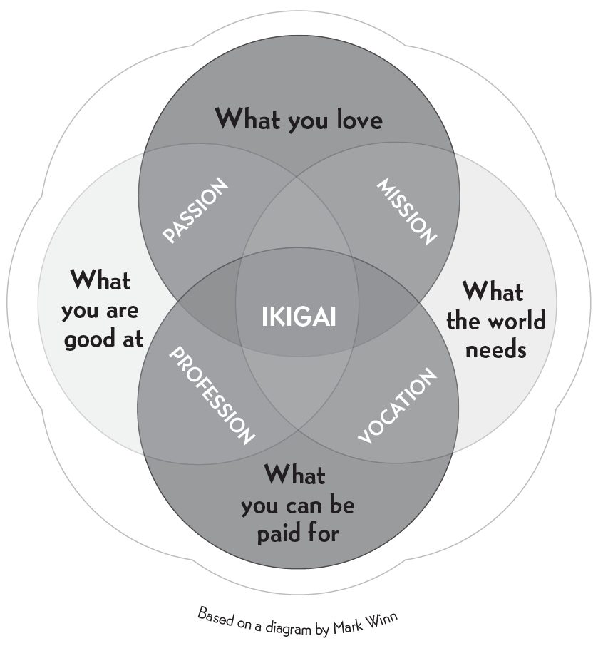
당신이 존재하는 이유는 무엇인가?
일본인들에 따르면 누구에게나 이키가이가 있다. 프랑스 철학자라면 ’존재의 이유(raison d’être)’라고 불렀을 만한 무언가다. 어떤 사람들은 자신의 이키가이를 이미 찾았고 어떤 사람들은 아직 찾는 중이다. 하지만 사실 그것은 이미 각자의 마음속에 품겨 있다.
우리의 이키가이는 저마다 마음 깊은 곳에 숨어 있으며 찾아내려면 인내심 있는 탐색이 필요하다. 세계에서 백세인이 가장 많은 섬, 오키나와에서 태어난 사람들에 따르면 이키가이란 우리가 아침에 눈을 뜨는 이유다.
무슨 일이 있어도 은퇴하지 마라!
분명한 이키가이를 갖는 것은 우리 삶에 만족과 행복, 의미를 가져다준다. 이 책의 목적은 당신의 이키가이를 찾도록 돕고 일본 철학에서 얻은 몸·마음·영혼의 지속 가능한 건강에 대한 통찰을 나누는 것이다.
일본에 살다 보면 놀라운 광경 하나가 눈에 들어온다. 은퇴한 뒤에도 사람들이 얼마나 활발하게 움직이는가 하는 것이다. 실제로 많은 일본인은 진짜로 은퇴하지 않는다. 건강이 허락하는 한 좋아하는 일을 계속한다.
실제로 일본어에는 영어의 ’retire(직장을 영영 떠나다)’에 해당하는 단어가 없다. 이 나라를 잘 아는 내셔널 지오그래픽 기자 던 부트너(Dan Buettner)에 따르면, 일본 문화에서 삶의 목적을 갖는 것이 너무나 중요해서 우리가 아는 은퇴라는 개념 자체가 존재하지 않는다고 한다.
(거의) 영원한 젊음의 섬
몇몇 장수 연구들은 강한 공동체 의식과 분명한 이키가이가 유명한 일본식 건강 식단만큼어쩌면 그보다 더중요하다고 시사한다. 오키나와와 이른바 블루존(Blue Zones)사람들이 가장 오래 사는 지역들의 백세인들에 대한 최근 의학 연구는 이 놀라운 사람들에 관한 흥미로운 사실 여럿을 밝혀 낸다.
이들은 세계의 다른 인구보다 훨씬 오래 살 뿐 아니라, 암과 심장병 같은 만성질환에도 적게 걸린다. 염증성 질환 역시 덜 흔하다.
이들 백세인 다수는 다른 지역의 고령자에게는 상상하기조차 어려운 수준의 활력과 건강을 누린다.
혈액 검사를 보면 세포 노화를 일으키는 활성산소가 더 적게 검출된다. 차를 즐겨 마시고 배를 80퍼센트만 채워 먹는 습관의 결과다.
여성은 폐경기 증상이 더 완만하며 남녀 모두 성호르몬 수치를 훨씬 늦은 나이까지 유지한다.
치매 발병률은 세계 평균보다 훨씬 낮다.
이키가이의 글자들
일본어에서 이키가이는 生き甲斐로 표기한다. ’삶’을 뜻하는 生과 ’가치 있는 일’을 뜻하는 甲斐를 결합한 단어다.
甲斐는 다시 두 글자로 나뉜다. ‘갑옷’, ‘첫째’, ‘선두에 서다’(전투에 임할 때 지도자로서 주도권을 잡다)를 의미하는 甲, 그리고 ‘아름답다’, ’우아하다’를 의미하는 斐다.
이런 발견들은 본문에서 차차 살펴보겠지만 연구 결과는 분명하다. 오키나와 사람들의 이키가이에 대한 집중은 매일의 삶에 목적의식을 불어넣으며 그들의 건강과 장수에 중요한 역할을 한다.
다섯 개의 블루존
오키나와는 세계 블루존 가운데 1위다. 특히 오키나와 여성들은 세계 그 어느 곳보다 오래 살고 병도 적다. 던 부트너가 『블루존(The Blue Zones)』에서 식별하고 분석한 다섯 지역은 다음과 같다.
오키나와, 일본(특히 섬 북부). 주민들은 채소와 두부가 풍부한 식단을 좁은 접시에 나눠 담아 먹는다. 이키가이 철학 외에도 모아이(moai)15쪽 참조라 불리는 끈끈한 친우 집단이 장수에 큰 역할을 한다.
사르데냐, 이탈리아(누오로와 올리아스트라 주). 이 섬 주민들은 채소를 듬뿍 먹고 하루에 와인 한두 잔을 마신다. 오키나와처럼 공동체의 결속력이 장수와 직결되는 또 다른 요인이다.
로마린다, 캘리포니아. 연구자들은 미국에서 가장 오래 사는 사람들에 속하는 제칠일안식일예수재림교회 신자 집단을 연구했다.
코스타리카 니코야 반도. 주민들은 아흔이 넘어도 놀랄 만큼 활동적이다. 이 지역의 많은 노인이 아침 다섯 시 반에 일어나 밭일을 하는 데 아무 거리낌이 없다.
이카리아, 그리스. 터키 해안 근처 이 섬에는 주민 셋 중 하나가 아흔 살 이상이다(미국 인구의 1퍼센트 미만과 비교된다)’장수의 섬’이라는 별명이 붙은 이유다. 현지의 비밀은 기원전 500년까지 거슬러 올라가는 생활방식인 듯싶다.
이후 장에서 블루존 전역에 공통으로 나타나는 장수의 열쇠로 보이는 요소들을 살펴보겠다. 특히 오키나와와 이른바 장수 마을에 주목한다. 다만 먼저 짚고 넘어갈 것이 있다. 이 다섯 지역 중 세 곳은 섬이라는 점이다. 섬에서는 자원이 부족할 수 있고 그래서 공동체가 서로 돕지 않으면 안 된다.
많은 사람들에게 타인을 돕는 일 자체가 자신을 살아 있게 하는 강력한 이키가이가 될 수 있다.
다섯 블루존을 연구한 과학자들에 따르면 장수의 열쇠는 식단과 운동, 삶의 목적(이키가이) 찾기, 그리고 강한 사회적 유대 형성즉 폭넓은 친우 관계와 원만한 가족 관계이다.
이 공동체의 사람들은 스트레스를 줄이기 위해 시간을 잘 관리하고 고기나 가공식품을 조금만 먹으며 술은 적당히 마신다. 격렬한 운동은 하지 않지만 매일 몸을 움직인다. 산책을 하고 텃밭을 가꾼다. 블루존의 사람들은 운전보다 걷기를 택한다. 매일의 저강도 움직임을 수반하는 원예는 이들 거의 모두가 공유하는 실천이다.
80퍼센트의 비밀
일본에서 가장 널리 쓰이는 말 가운데 하나가 “하라하치부(Hara hachi bu)”다. 식사 전후로 되뇌는 이 말은 ‘배를 80퍼센트만 채워라’ 정도의 뜻이다. 옛 지혜는 배가 부를 때까지 먹는 것을 경계한다. 그래서 오키나와 사람들은 위가 80퍼센트 찼다고 느껴지면 젓가락을 내려놓는다. 과식해서 소화에 긴 시간을 쏟아붓고 세포 산화를 가속시키는 몸을 만드는 대신 말이다.
물론 위가 정확히 80퍼센트 찼는지 객관적으로 알 방법은 없다. 이 말에서 얻어야 할 교훈은 따로 있다. 배가 차오르기 시작했다고 느껴지는 시점에서 먹기를 멈추라는 것이다. 추가 반찬 한 접시, 사실은 필요 없다는 걸 속으로 알면서도 집어 드는 간식, 점심 뒤의 애플파이이것들은 단기적으로 기쁨을 준다. 하지만 참어 버리면 장기적으로 더 큰 행복이 온다.
음식을 내는 방식도 중요하다. 작은 접시 여러 개에 나눠 내기 때문에 일본인들은 적게 먹는 경향이 있다. 일본 식당의 전형적인 한 상은 트레이 위에 접시 다섯 개로 차려진다. 넷은 아주 작고 메인 요리 하나만 조금 크다. 접시 다섯 개가 눈앞에 있으면 많이 먹을 것 같지만 실제로 대개 벌어지는 일은 조금 허기진 채로 식사를 끝내게 된다는 것이다. 일본에 있는 서구인들이 살이 빠지고 날씬해지는 이유 가운데 하나다.
영양학자들의 최근 연구에 따르면 오키나와 사람들은 하루 평균 1,800~1,900칼로리를 섭취한다. 미국인의 2,200~3,300칼로리와 비교되는 수치다. 체질량지수는 18에서 22 사이인 반면 미국인의 경우 26~27이다.
오키나와 식단은 두부, 고구마, 생선(주 삼 회), 채소(하루 약 11온스)가 풍부하다. 영양을 다루는 장에서 이 80퍼센트에 포함되는 건강하고 항산화 성분이 풍부한 식품을 살펴보겠다.
모아이: 평생 이어지는 유대
오키나와에서는 지역 공동체 안에서 깊은 유대를 맺는 것이 관습이다. 모아이(moai)는 공통의 관심사를 가진 사람들이 서로를 살피고 보듬는 비공식적인 모임이다. 많은 사람들에게 공동체에 봉사하는 일은 그들의 이키가이의 일부가 된다.
모아이의 뿌리는 어려운 시절에 있다. 농부들이 함께 모여 노하우를 나누고 흉년을 견디도록 서로 돕던 데서 시작했다.
모아이 회원들은 매월 정해진 금액을 모임에 냈다. 이 회비 덕분에 회원들은 정기 모임과 저녁 식사, 바둑이나 쇼기(일본장기) 대국, 그 밖의 공동 취미 활동에 참여할 수 있다.
모아이의 기금은 활동 비용으로 쓰이지만 돈이 남으면 회원 한 사람(돌아가며 정한다)이 잉여분에서 정해진 금액을 받아 간다. 이런 식으로 모아이에 속하는 것은 정서적·재정적 안정을 유지하는 데 도움이 된다. 모아이 회원이 재정적 어려움에 처하면 모임의 공동 저축에서 미리 돈을 꺼내 쓸 수 있다. 모아이마다 회계 방식의 세부 사항은 집단의 형편에 따라 다르지만 소속감과 지지받고 있다는 감각은 개개인에게 안정감을 주고 기대수명을 늘리는 힘이 된다.
• • •
이 책에서 다룰 주제를 간략하게 소개했다. 이제 현대 생활에서 조로(早老)를 일으키는 몇 가지 원인을 살펴보고 이어서 이키가이와 관련된 다양한 요소를 탐구해 보겠다.
II
노화 방지의 비결
길고 행복한 삶으로 이어지는 사소한 것들
노화의 탈출 속도
한 세기 넘게 우리는 매년 평균 0.3년씩 기대수명을 늘려 왔다. 그런데 만약 매년 기대수명을 정확히 1년씩 늘리는 기술이 손에 쥐어진다면 어떻게 될까? 이론상 우리는 생물학적 불멸을 이룬다. 노화의 ’탈출 속도(escape velocity)’에 도달한 것이다.
노화의 탈출 속도와 토끼
먼 곳의 미래에 표지판 하나가 서 있다고 상상해 보라. 팻말에는 당신의 사망 나이를 나타내는 숫자가 적혀 있다. 사는 해마다 당신은 표지판을 향해 다가간다. 표지판에 닿으면 죽는다.
이번엔 그 표지판을 들고 미래를 향해 걸어가는 토끼를 상상해 보라. 사는 해마다 토끼는 당신과 반 년치 거리를 더 벌린다. 언젠가 토끼에게 닿겠지, 그러면 죽는다.
하지만 토끼가 당신의 1년마다 1년씩 걸을 수 있다면 어떨까? 당신은 결코 토끼를 잡을 수 없고 따라서 결코 죽지 않는다.
토끼가 미래로 걸어가는 속도가 곧 우리의 기술이다. 기술과 우리 몸에 대한 지식이 진보할수록, 토끼를 더 빨리 걸리게 할 수 있다.
노화의 탈출 속도란 토끼가 1년당 1년 이상의 속도로 걸어서 우리가 불멸이 되는 순간을 가리킨다.
레이 커즈와일(Ray Kurzweil)이나 오브리 디 그레이(Aubrey de Grey) 같은 미래를 내다보는 연구자들은 수십 년 안에 이 탈출 속도에 도달할 것이라 주장한다. 다른 과학자들은 덜 낙관적이다. 기술이 얼마나 발전하더라도 우리는 결국 한계선, 그 이상 못 넘는 최대 수명 앞에 다다를 거라고 예측한다. 예컨대 일부 생물학자들은 우리 세포가 약 120년쯤 지나면 재생을 멈춘다고 주장한다.
활동적인 마음, 젊은 몸
“건강한 신체에 건강한 정신이 깃든다(mens sana in corpore sano)”는 옛 격언에는 깊은 지혜가 담겨 있다. 마음과 몸이 모두 중요하며 한쪽의 건강이 다른 쪽의 건강과 연결되어 있음을 일깨워 준다. 활동적이고 융통성 있는 마음을 유지하는 것이 젊음을 유지하는 핵심 요소 가운데 하나라는 사실이 입증되어 있다.
젊은 마음은 노화를 늦추는 건강한 라이프스타일로 우리를 이끈다.
신체 운동 부족이 몸과 기분에 나쁜 영향을 주듯, 정신 운동 부족도 우리를 해친다. 뉴런과 신경 연결이 쇠퇴하고 그 결과 주변 환경에 반응하는 능력이 떨어지기 때문이다.
그래서 뇌에 운동을 시켜 주는 일이 그토록 중요하다.
정신 운동을 옹호한 선구자 중 한 사람이 이스라엘의 신경과학자 슐로모 브레즈니츠(Shlomo Breznitz)다. 그는 뇌가 컨디션을 유지하려면 풍부한 자극이 필요하다고 주장한다. 에두아르 푼셋(Eduard Punset)과의 인터뷰스페인 TV 프로그램 Redes에서 방영된에서 그는 이렇게 말했다.
누군가에게 좋은 것과 그 사람이 하고 싶은 것 사이에는 긴장이 있다. 사람들, 특히 나이 든 사람들은 늘 해 오던 대로 일 하기를 좋아하기 때문이다. 문제는 뇌에 굳어진 습관이 자리 잡으면 더 이상 생각할 필요가 없어진다는 것이다. 일은 자동 조종 장치를 타고 빠르고 효율적으로 처리되고 종종 그게 상당히 유리하기도 하다. 이는 루틴에 매달리는 성향을 낳는다. 그리고 이 루틴을 깨는 유일한 방법은 뇌를 새로운 정보와 마주하게 하는 것이다.
낯선 정보를 접하면 뇌는 새 연결을 만들고 되살아난다. 그래서 변화에 자신을 노출하는 것이 그토록 중요하다. 편안한 영역 밖으로 나가는 일이 약간의 불안을 동반한다 해도 말이다.
정신 훈련의 효과는 과학적으로 입증되어 있다. 콜린스 헤밍웨이(Collins Hemingway)와 슐로모 브레즈니츠는 저서 『최대 뇌력(Maximum Brainpower: Challenging the Brain for Health and Wisdom)』에서 정신 훈련이 여러 층위에서 이롭다고 말한다. “특정 과제를 처음 수행하면서 뇌 운동을 시작합니다.” 그는 쓴다. “처음에는 몹시 어렵게 느껴지지만 하는 법을 익혀 가는 동안 이미 훈련은 효과를 발휘하고 있습니다. 두 번째에는 오히려 더 어렵다기보다 쉬워졌다는 걸 깨닫죠. 실력이 늘고 있으니까요. 이것은 한 사람의 기분에 놀라운 효과를 줍니다. 그 자체로 결과에만 그치지 않고 그 사람의 자아상까지 바꾸어 놓는 변화입니다.”
이런 ‘두뇌 운동’ 묘사는 좀 격식 있게 들릴 수 있지만 단순히 타인과 어울리는 것. 예컨대 함께 게임하기만으로도 새로운 자극을 얻을 수 있고 고독이 가져올 수 있는 우울을 예방하는 데 도움이 된다.
우리의 뉴런은 스무 살 무렵부터 이미 늙기 시작한다. 다만 지적 활동, 호기심, 배우고자 하는 욕망이 이 과정을 늦춘다.
새로운 상황을 다루고, 매일 무언가를 새로 배우고, 게임을 하고, 다른 사람들과 어울리는 것이 모두가 마음을 위한 필수적인 노화 방지 전략으로 보인다. 나아가 이런 일들에 좀 더 긍정적인 태도를 취할수록 정신적 이득은 커진다.
스트레스: 장수를 죽이는 혐의
실제 나이보다 늙어 보이는 사람이 많다. 조로의 원인에 관한 연구는 스트레스가 크게 한몫한다는 사실을 보여 준다. 위기의 시기에 몸은 훨씬 빨리 닳아 없어지기 때문이다. 미국스트레스연구소(American Institute of Stress)가 이 퇴행 과정을 조사한 결과, 대부분의 건강 문제는 스트레스에서 비롯된다는 결론을 내렸다.
하이델베르크 대학병원 연구진은 한 실험을 진행했다. 젊은 의사를 면접에 세우고 여기에 삼십 분 동안 복잡한 수학 문제를 풀게 강요해 스트레스를 한층 가중시켰다. 그런 뒤 혈액 샘플을 채취했다. 밝혀진 것은 스트레스를 받자 그의 항체가 병원체에 반응하듯 반응했다는 사실이었다. 면역 반응을 촉발하는 단백질이 활성화된 것이다. 문제는 이 반응이 유해 인자를 무력화할 뿐 아니라 건강한 세포까지 손상시켜 조로를 부른다는 점이다.
캘리포니아 대학교도 비슷한 연구를 했다. 자녀 중 한 명의 병으로 높은 스트레스에 시달리는 여성 서른아홉 명의 데이터와 샘플을 채취해, 건강한 자녀를 둔 저스트레스 여성들의 샘플과 비교한 것이다. 스트레스가 염색체 말단 구조인 텔로미어를 약화시켜 세포 노화를 촉진한다는 발견이었다. 텔로미어는 세포 재생과 세포의 노화 방식에 영향을 미친다. 연구가 드러냈듯, 스트레스가 클수록 세포에 미치는 퇴행적 효과도 컸다.
스트레스는 어떻게 작동하는가?
요즘 사람들은 미친 듯한 속도로 살며 거의 항상 경쟁 상태에 놓여 있다. 이런 열기 속에서 스트레스는 몸이 잠재적으로 위험하거나 문제가 되는 정보를 받아들일 때 일으키는 자연스러운 반응이다.
이론적으로 이것은 유용한 반응이다. 적대적인 환경에서 살아남게 도와주기 때문이다. 진화 과정에서 우리는 이 반응을 어려운 상황을 다루고 포식자로부터 도망치는 데 사용해 왔다.
머릿속에서 경보가 울리면 뉴런이 뇌하수체를 활성화하고 뇌하수체는 코르티코트로핀을 방출하는 호르몬을 만들어 낸다. 코르티코트로핀은 교감신경계를 통해 온몸으로 퍼져 나간다. 이어서 부신이 자극을 받아 아드레날린과 코르티솔을 분비한다. 아드레날린은 호흡 수와 맥박을 올리고 근육을 행동 준비 상태로 만들어, 몸이 감지된 위험에 반응할 수 있게 한다. 코르티솔은 도파민과 혈당 분비를 늘려 우리를 ‘차 올려’ 도전에 맞설 수 있게 해 준다.
동굴인 vs 현대인
동굴인: 대부분의 시간을 편안하게 보냈다. 현대인: 대부분의 시간을 일하며 모든 위협에 경계를 늦추지 않는다.
동굴인: 아주 특정한 상황에서만 스트레스를 느꼈다. 현대인: 하루 이십사 시간 온라인에 있거나 휴대폰 알림을 기다린다.
동굴인: 위협은 실제였다. 포식자가 언제든 목숨을 끝낼 수 있었으니까. 현대인: 뇌는 휴대폰 알림음이나 이메일 알림을 포식자의 위협처럼 인식한다.
동굴인: 위험한 순간의 고용량 코르티솔과 아드레날린이 몸을 건강하게 유지했다. 현대인: 저용량 코르티솔이 끊임없이 몸을 흐르며 부신 피로와 만성 피로 증후군 등 각종 건강 문제를 낳는다.
이런 과정들은 적당할 때는 이롭다. 일상의 도전을 극복하도록 돕기 때문이다. 그럼에도 오늘날 인간이 받는 스트레스는 명백히 해롭다.
스트레스는 시간이 흐르며 퇴행적 효과를 낳는다. 지속되는 긴장 상태는 기억과 연관된 뉴런에 영향을 주고 특정 호르몬의 분비를 억제한다. 그 호르몬이 부족해지면 우울이 찾아올 수 있다. 부작용으로는 과민성, 불면, 불안, 고혈압이 꼽힌다.
따라서 도전이 마음과 몸을 활동적으로 유지하는 데 좋다 해도, 몸의 조로를 막으려면 고스트레스 라이프스타일은 손볼 필요가 있다.
마음챙김으로 스트레스 줄이기
우리가 지각하는 위협이 진짜든 아니든, 스트레스는 쉽게 확인되는 상태다. 불안을 일으킬 뿐 아니라 고도의 심인성(psychosomatic) 질환으로서 소화기관부터 피부까지 온갖 곳에 영향을 미친다.
스트레스가 우리에게 남기는 대가를 피하려면 예방이 그토록 중요하고 그래서 수많은 전문가가 마음챙김(mindfulness) 수련을 권하는 것이다.
이 스트레스 감소법의 핵심 전제는 자기 자신에게 집중하는 것이다. 습관 때문에 저절로 나오는 반응이라 해도 알아차리고 그로써 완전히 의식하게 되는 것이다. 이렇게 하면 우리는 지금 여기와 연결되고 걷잡을 수 없이 치닫는 생각의 소용돌이를 제한할 수 있다.
“우리는 무한 루프를 돌며 우리를 몰고 가는 자동 조종 장치를 끄는 법을 배워야 합니다. 전화 통화를 하거나 뉴스를 보면서 군것질하는 사람들을 우리 모두 알고 있습니다. 방금 먹은 오믈렛에 양파가 들었냐고 물으면 대답을 못 하죠.” 로베르토 알시바르(Roberto Alcibar)의 말이다. 급격히 돌아가던 삶을 접고 병으로 급성 스트레스에 시달린 뒤 마음챙김 공인 강사가 된 사람이다.
마음챙김 상태에 이르는 방법 가운데 하나가 명상이다. 명상은 바깥세상에서 우리에게 도달하는 정보를 걸러 주는 데 도움이 된다. 호흡 운동, 요가, 바디스캔으로도 이 상태에 도달할 수 있다.
마음챙김에 이르는 것은 점진적인 훈련 과정이지만 조금만 연습해도 마음을 온전히 집중시키는 법을 배울 수 있다. 그러면 스트레스가 줄고 수명은 늘어난다.
적은 스트레스는 몸에 좋다
강한 스트레스가 지속되면 장수와 정신·신체 건강의 적이 된다고 알려져 있는 것과 달리, 낮은 수준의 스트레스는 이롭다.
캘리포니아 대학교 리버사이드 캠퍼스의 심리학 교수 하워드 S. 프리드먼(Howard S. Friedman) 박사는 실험 참가자 집단을 이십여 년 넘게 관찰한 끝에 이런 사실을 발견했다. 낮은 수준의 스트레스를 유지하면서 도전에 맞서고 성공하기 위해 온 심신을 일에 쏟아 부은 사람들이, 더 여유로운 삶을 택해 일찍 은퇴한 사람들보다 오래 살았다는 것이다. 여기서 그는 적은 용량의 스트레스가 긍정적이라는 결론을 내렸다. 낮은 수준의 스트레스와 함께 사는 사람들이 더 건강한 습관을 기르고 담배도 덜 피우고 술도 덜 마시는 경향이 있기 때문이다.
이런 맥락에서 보면 이 책에서 만나게 될 초장수자들110세 이상까지 사는 사람들다수가 강렬하게 산 삶과 늙어서도 계속된 일을 말하는 것이 놀랍지 않다.
오래 앉아 있으면 늙는다
특히 서구 세계에서 좌식 생활의 증가는 고혈압과 비만 등 수많은 질병을 낳았고 이것이 다시 장수에 악영향을 미친다.
직장이든 집이든 너무 오래 앉아 지내면 근육과 호흡기능이 떨어질 뿐 아니라 식욕은 늘고 활동에 참여하고 싶은 욕구는 줄어든다. 좌식 생활은 고혈압, 불균형한 식습관, 심혈관 질환, 골다공증, 심지어 특정 종류의 암으로 이어질 수 있다. 최근 연구들은 신체 활동 부족과 면역계 텔로미어의 점진적 변형 사이의 연관성을 보여 주었다. 이로 인해 해당 세포가 늙고 나아가 유기체 전체가 늙는다.
이것은 어른들만의 문제가 아니라 인생의 모든 단계에서 생기는 문제다. 좌식 생활을 하는 아이들은 높은 비만율과 그에 따르는 온갖 건강 문제와 위험에 시달린다. 그래서 어릴 때부터 건강하고 활동적인 라이프스타일을 기르는 것이 그토록 중요하다.
덜 앉아 있는 생활은 어렵지 않다. 약간의 노력과 일상의 작은 변화만 있으면 된다. 안팎으로 기분 좋게 만드는 더 활동적인 라이프스타일은 언제든 시작할 수 있다. 일상 습관에 재료 몇 가지만 더하면 된다.
출근길을 걷거나, 그냥 산책하기 매일 최소 이십 분은.
엘리베이터나 에스컬레이터 대신 자기 발 사용하기 자세, 근육, 호흡기 계통 등에 좋다.
사회 활동이나 여가 활동에 참여하기 텔레비전 앞에서 보내는 시간을 줄이기 위해서라도.
정크푸드를 과일로 바꾸기 군것질 충동은 줄고 몸에 들어가는 영양소는 늘어난다.
적절한 수면량 지키기 일곱 시간에서 아홉 시간이 적당하다. 그 이상은 몸을 무겁고 나른하게 만든다.
아이들이나 애완동물과 놀거나, 운동팀에 가입하기 몸을 튼튼히 할 뿐 아니라 마음을 자극하고 자존감을 높인다.
자신의 하루 일과를 의식적으로 돌아보기 해로운 습관을 발견하고 더 긍정적인 것으로 교체하기 위해서다.
이런 작은 변화만으로도 몸과 마음의 재생을 시작하고 기대수명을 늘릴 수 있다.
모델들의 최고 비밀
우리는 겉으로도 속으로도, 육체적으로도 정신적으로도 늙어 간다. 그런데 사람의 나이를 가장 정확히 말해 주는 것 중 하나가 피부다. 표면 아래에서 진행되는 과정에 따라 피부는 저마다 다른 질감과 색을 띠게 된다. 모델로 생계를 꾸리는 사람들 대부분은 패션쇼 전날 밤 아홉 시간에서 열 시간을 잔다고 주장한다. 그 결과 탄탄하고 주름 없는 피부, 건강하게 빛나는 윤기가 만들어진다는 것이다.
과학은 수면이 핵심적인 노화 방지 도구임을 보여 왔다. 잘 때 우리 몸은 멜라토닌을 생성하기 때문이다. 몸에서 자연적으로 만들어지는 호르몬이다. 송과선은 신경전달물질인 세로토닌으로부터 우리의 주야 리듬에 맞춰 멜라토닌을 만들어 내며 멜라토닌은 수면과 각성 주기에 관여한다.
강력한 항산화제인 멜라토닌은 수명을 늘려 주는 동시에 다음과 같은 효능도 지닌다.
- 면역 체계를 강화한다.
- 암으로부터 보호하는 성분을 함유하고 있다.
- 인슐린의 자연 분비를 촉진한다.
- 알츠하이머병의 발병을 늦춘다.
- 골다공증 예방과 심장병 퇴치에 도움이 된다.
이런 이유들로 멜라토닌은 젊음을 지키는 든든한 아군이다. 다만 유념할 점이 있다. 멜라토닌 분비는 서른 살 이후 줄어든다는 것. 이를 보완하려면:
- 균형 잡힌 식단을 유지하고 칼슘 섭취를 늘린다.
- 매일 적당량의 햇볕을 쬔다.
- 충분히 잔다.
- 스트레스, 알코올, 담배, 카페인을 피한다. 이 모든 것은 숙면을 방해해 필요한 멜라토닌을 빼앗아 간다.
전문가들은 인공적으로 멜라토닌 생성을 촉진하는 것이 노화 과정을 늦추는 데 도움이 될 수 있는지 연구 중이다. 그렇다면 우리가 이미 장수의 비밀을 몸 안에 품고 있다는 이론이 확증되는 셈이다.
노화 방지적 태도
마음은 몸이 얼마나 빨리 늙는지에 막대한 영향을 끼친다. 대부분의 의사들도 동의한다. 몸을 젊게 유지하는 비결은 마음을 활동적으로 유지하는 것이키가이의 핵심 요소이며 인생에서 어려움과 마주쳤을 때 굴복하지 않는 것이라고 말이다.
예시바 대학교(Yeshiva University)의 한 연구는 가장 오래 사는 사람들에게 두 가지 기질적 특성이 공통적으로 있다는 사실을 발견했다. 긍정적 태도와 높은 수준의 정서 인식 능력이다. 다시 말해, 도전을 긍정적인 시선으로 마주하고 자신의 감정을 관리할 줄 아는 사람이라면 이미 장수로 가는 길 위에 서 있는 셈이다.
스토아적 태도역경 앞에서의 평온함역시 젊음을 지키는 데 일조한다. 불안과 스트레스 수치를 낮추고 행동을 안정시키기 때문이다. 이는 여유롭고 신중한 생활방식을 지닌 특정 문화권의 더 높은 기대수명에서 확인할 수 있다.
많은 백세인과 초장수자들이 비슷한 프로필을 보인다. 때로는 고단했던 충만한 삶을 살았지만 그 도전들을 긍정적인 태도로 마주하고 부딪친 장애물에 압도되지 않는 법을 알았던 것이다.
2014년 111세의 나이로 세계 최고령 남성이 된 알렉산더 이미치(Alexander Imich)는 자신이 좋은 유전자를 타고났음을 알았지만 다른 요인도 작용했음을 이해하고 있었다. “당신이 살아 온 삶 역시 장수만큼이나, 아니면 그보다 더 중요합니다.” 그는 2014년 『기네스 세계 기록』에 오른 뒤 로이터와의 인터뷰에서 이렇게 말했다.
장수 찬가
장수 기네스 기록을 보유한 마을 오기미에 머무는 동안, 곧 백 살이 될 한 여성이 우리를 위해 일본어와 현지 방언이 섞인 노래를 불러 주었다:
건강하게 오래 살려면, 모든 음식을 조금씩 맛있게 먹고, 일찍 자고 일찍 일어나 산책하러 나가라. 우리는 하루하루 평온하게 살며 이 여정을 즐긴다. 건강하게 오래 살려면, 친구들과 모두 훈훈하게 지내라. 봄, 여름, 가을, 겨울, 기쁘게 계절을 모두 누리노라. 비밀은 손가락 나이를 따지지 않는 것; 손가락에서 머리로, 다시 머리에서 손가락으로. 손가락을 움직이며 꾸준히 살아가면 백 해가 저절로 찾아오리라
이제 우리도 손가락으로 다음 장의 페이지를 넘길 수 있다. 그곳에서는 장수와 인생의 사명 발견 사이의 깊은 연관을 살펴보겠다.
III
로고테라피에서 이키가이까지
목적을 찾음으로써 더 오래, 더 잘 사는 법
로고테라피란 무엇인가?
동료 한 사람이 빅터 프랭클에게 자신의 심리학 학파를 한마디로 정의해 달라고 청한 적이 있다. 프랭클의 대답은 이렇다. “글쎄요, 로고테라피에서 환자는 허리를 펴고 앉아 때로는 듣기 거북한 이야기를 들어야 합니다.” 그런데 그 동료는 바로 직전에 정신분석을 이렇게 소개한 참이었다. “정신분석에서 환자는 소파에 드러누워 때로는 입에 담기 거북한 이야기를 하죠.”
프랭클은 환자에게 처음 던지는 질문 가운데 하나가 “당신은 왜 자살하지 않습니까?”였다고 설명한다. 대개 환자는 자살하지 않아야 할 좋은 이유를 찾아내고 그렇게 계속 나아갈 수 있었다. 그렇다면 로고테라피는 무엇을 하는가?
답은 꽤 명확하다. 살아갈 이유를 찾도록 돕는 것이다.
로고테라피는 환자에게 의식적으로 자신의 삶의 목적을 발견하도록 밀어붙여 신경증과 마주하게 한다. 운명을 이루려는 추구는 환자가 앞으로 나아가게 만들고 과거의 정신적 사슬을 끊으며 가는 길에 만나는 어떤 장애물이든 극복하게 한다.
살아갈 무언가
프랭클이 자신의 빈 클리닉에서 진행한 연구에 따르면 환자든 직원이든 약 80퍼센트가 인간은 살아갈 이유가 필요하다고 믿었고 약 60퍼센트는 자신의 삶에 목숨을 걸 만한 누군가 혹은 무언가가 있다고 느꼈다.
의미를 찾아서
목적을 향한 탐색은 프랭클이 자신의 목표를 달성하게 해 준 개인적 원동력이 되었다. 로고테라피의 과정은 다음 다섯 단계로 요약할 수 있다:
한 사람이 공허감, 좌절감 또는 불안을 느낀다.
치료자는 그가 느끼고 있는 것이 의미 있는 삶에 대한 갈망임을 보여 준다.
환자는 자신의 삶의 목적을 발견한다(그 순간의 목적을).
환자는 자유의지로 그 운명을 받아들일지 거부할지 결정한다.
새로 얻은 삶에 대한 열정이 장애물과 슬픔을 극복하게 돕는다.
프랭클은 자기 원칙과 이상을 위해 살았고 죽으려 했던 사람이기도 했다. 아우슈비츠 수용소 수감자로서의 경험은 그에게 이것을 보여 주었다. “인간에게서 모든 것을 빼앗을 수 있지만 단 한 가지만은 빼앗을 수 없다. 바로 인간의 마지막 자유주어진 어떤 상황에서든 자신의 태도를 택하고, 자기 자신의 길을 선택할 자유말이다.” 그것은 혼자서, 아무 도움 없이 통과해야 하는 시험이었고, 그것은 그의 남은 평생 동안 그를 북돋았다.
정신분석과 로고테라피의 열 가지 차이
정신분석: 환자가 소파에 비스듬히 눕는다. 로고테라피: 환자가 치료자를 마주 보고 앉으며 치료자는 판단 없이 이끈다.
정신분석: 회고적이다. 과거를 본다. 로고테라피: 미래를 내다본다.
정신분석: 내성적이다. 신경증을 분석한다. 로고테라피: 환자의 신경증에 파고들지 않는다.
정신분석: 쾌락이 원동력이다. 로고테라피: 목적과 의미가 원동력이다.
정신분석: 심리학에 집중한다. 로고테라피: 영적 차원을 포괄한다.
정신분석: 심인성 신경증을 다룬다. 로고테라피: 노오제닉(실존적) 신경증도 다룬다.
정신분석: 갈등의 무의식적 기원(본능 차원)을 분석한다. 로고테라피: 갈등을 일어난 그 자리에서 다룬다(영적 차원).
정신분석: 환자의 본능에만 머문다. 로고테라피: 영적 실재까지 다룬다.
정신분석: 근본적으로 신앙과 양립할 수 없다. 로고테라피: 신앙과 양립할 수 있다.
정신분석: 갈등을 조정하고 충동과 본능을 만족시키려 한다. 로고테라피: 환자가 삶에서 의미를 발견하고 도덕적 원칙을 충족하도록 돕는다.
자신을 위해 싸워라
삶에 목적이 없거나, 그 목적이 삐뚤어졌을 때 실존적 좌절이 생겨난다. 그러나 프랭클의 견해로는 이 좌절을 이단이나 신경증의 증상으로 볼 필요가 없다. 오히려 그것은 긍정적인 것변화의 촉매가 될 수 있다.
로고테라피는 다른 치료법들이 그러하듯 이 좌절을 정신 질환으로 보지 않는다. 대신 영적 고뇌로 본다. 그 고뇌를 앓는 사람들이 혼자서든 타인의 도움을 받아든 치료를 구하도록 몰아붙이는, 자연스럽고 이로운 현상이라는 것이다. 그 과정에서 그들은 삶에서 더 큰 만족을 찾게 된다. 그것은 그들 스스로의 운명을 바꾸도록 돕는다.
사람이 이 일에 도움이 필요할 때삶의 목적을 발견하는 데, 그리고 이후 목표를 향해 나아가기 위해 갈등을 극복하는 데 지침이 필요할 때로고테라피가 등장한다. 프랭클은 『죽음의 수용소에서(Man’s Search for Meaning)』에서 니체의 유명한 경구 하나를 인용했다. “‘왜(warum)’ 살아야 할지 아는 사람이라면 거의 어떤 ’어떻게(wie)’든 견딜 수 있다.”
자신의 경험에 근거해 프랭클은 우리의 건강이 그 자연스러운 긴장에 달려 있다고 믿었다. 지금까지 이루어 온 것과 미래에 이루고자 하는 것을 비교할 때 생기는 긴장 말이다. 따라서 우리에게 필요한 것은 평탄한 존재가 아니라, 우리가 지닌 온 능력을 쏟아 부어 맞설 수 있는 도전이다.
반면 실존적 위기는 사람들이 하고 싶은 것이 아니라 시켜서 하는 일, 남들이 하는 일을 하는 현대 사회에 전형적인 것이다. 사람들은 자신에게 기대되는 것과 자신이 원하는 것 사이의 간극을 경제력이나 육체적 쾌락으로 메우려 들고 감각을 마비시킴으로써 메우려 들기도 한다. 그것은 자살로까지 이어질 수 있다.
예컨대 일요일 신경증(sunday neurosis)은 이런 것이다. 주중의 의무와 약속이 사라진 일요일, 개인은 자기 안이 얼마나 비어 있는지 자각한다. 그는 해결책을 찾아야 한다. 무엇보다 자신의 목적, 침대에서 일어나게 만드는 이유그의 이키가이를 찾아야 한다.
“속이 텅 빈 것 같아요”
빈 폴리클리닉 병원에서 진행된 연구에서 프랭클의 팀은 면담한 환자의 55퍼센트가 어느 정도의 실존적 위기를 겪고 있다는 사실을 발견했다.
로고테라피에 따르면 삶의 목적을 발견하는 것이 그 실존적 공허를 채우는 데 도움이 된다. 자신의 문제에 직면하고 목표를 행동으로 옮겼던 프랭클은 늙어가면서도 평온하게 자신의 삶을 돌아볼 수 있었다. 그는 아직 젊음을 누리는 사람들을 부러워할 필요가 없었다. 그가 무언가를 위해 살았음을 보여 주는 광범위한 경험을 이미 쌓아 두었기 때문이다.
로고테라피를 통한 더 나은 삶: 핵심 아이디어들
우리는 사르트르가 주장했듯 삶의 의미를 창조하는 게 아니다. 우리는 그것을 발견한다.
우리 저마다 고유한 존재의 이유가 있으며 그것은 세월 속에서 여러 번 조정되거나 변모할 수 있다.
염려가 종종 두려워하던 바로 그 일을 불러오듯, 어떤 욕망에 과잉 주의를 기울이는 것(‘과잉 의도’, hyper-intention)은 그 욕망이 이루어지는 것을 막을 수 있다.
유머는 부정적인 악순환을 끊고 불안을 줄이는 데 도움이 된다.
우리 모두는 고귀한 일도 끔찍한 일도 할 수 있는 잠재력을 지녔다. 어느 쪽에 서게 되는가는 우리가 놓인 처지가 아니라 우리의 결정에 달려 있다.
이후 페이지에서 프랭클의 직접적인 사례 네 건으로 의미와 목적의 탐색을 더 잘 이해해 보겠다.
사례 연구: 빅터 프랭클
독일 강제수용소에서그리고 훗날 일본과 한국에 지어진 수용소에서도정신과 의사들은 한 가지를 확인했다. 살아남을 가능성이 가장 컸던 포로들은 수용소 밖에서 해내고 싶은 일을 가진 사람들, 산 채로 그곳을 빠져나가야겠다는 강렬한 필요를 느낀 사람들이었다는 것이다. 프랭클도 그러했다. 석방 후 로고테라피 학파를 성공적으로 발전시킨 그는, 자신이 자기 치료법의 첫 번째 환자였음을 깨달았다.
프랭클에게는 이루어야 할 목표가 있었고 그것이 그를 버티게 만들었다. 그는 아우슈비츠에 도착할 때 자신의 커리어 전체에서 쌓은 이론과 연구를 모두 담은, 출간 준비가 끝난 원고를 들고 있었다. 원고가 압수되자 그는 모든 것을 다시 쓰고 말겠다는 충동을 느꼈다. 그 필요가 그를 몰아세웠고 강제수용소의 끊임없는 공포와 회의 한가운데서 그의 삶에 의미를 부여했다. 그래서 세월이 흐르는 동안특히 장티푸스로 쓰러졌을 때그는 손에 잡히는 종이 쪽지마다 잃어버린 저서의 파편과 핵심 단어들을 적어 내려갔다.
사례 연구: 미국 외교관
미국의 저명한 외교관이 프랭클을 찾아왔다. 5년 전 미국에서 시작했던 치료를 이어가기 위해서였다. 프랭클이 애초에 왜 치료를 시작하게 되었느냐고 묻자 외교관은 자기 직업과 자기 나라의 국제 정책그가 따르고 집행해야만 했던이 싫다고 대답했다. 그가 수년간 만나 온 미국 정신분석가는 아버지와 화해하라고 강권했다. 정부와 직업, 둘 다 아버지 상징의 표상이니 화해하면 덜 불쾌하게 느껴질 거라는 논리였다. 그러나 프랭클은 단 몇 회기 만에 그에게 보여 주었다. 그의 좌절은 사실 다른 커리어를 추구하고 싶은데 그러지 못하는 데서 비롯된 것이라고. 외교관은 그 생각을 마음에 품은 채 치료를 끝냈다.
5년 후 전직 외교관은 프랭클에게 알려 왔다. 그동안 다른 직업에서 일해 왔으며 행복하다고 말이다.
프랭클의 견해로는, 이 사람은 긴 세월의 정신분석이 필요 없었을 뿐 아니라 애초에 치료가 필요한 ’환자’조차 아니었다. 그저 새로운 삶의 목적을 찾는 사람이었을 뿐이다. 목적을 찾자마자 그의 삶은 더 깊은 의미를 띠게 되었다.
사례 연구: 자살을 시도한 어머니
열한 살 난 아들을 잃은 어머니가 자신과 다른 아들의 목숨을 함께 끝내려다 실패해 프랭클의 클리닉에 입원했다. 계획 실행을 막은 장본인은 바로 그 다른 아들이었다. 태어날 때부터 몸이 불편한 그 아이였다. 그는 자신의 삶에 분명히 목적이 있으며 어머니가 둘을 죽인다면 자신의 목표를 이루지 못하게 될 것이라 믿었다.
여성은 집단 치료 모임에서 자신의 사연을 나누었다. 그녀를 돕기 위해 프랭클은 다른 여성 한 명에게 가상의 상황을 상상해 보라고 했다. 임종의 자리에 누워 있는데 늙고 부유하지만 자식은 하나도 없는 상황을. 그 여성은 그런 경우라면 자신의 삶은 실패였다고 느꼈으리라 단언했다.
자살을 시도했던 어머니에게 같은 과제가 주어졌다. 자신이 임종의 자리에 있다고 상상하라고. 그녀는 과거를 돌아보며 깨달았다. 자신은 두 아이를 위해둘 모두를 위해할 수 있는 모든 것을 다했다는 것을. 불편한 몸의 아들에게 좋은 삶을 주었고 그 아이는 다정하고 제법 행복한 사람으로 자랐다. 그리고 그녀는 울면서 덧붙였다. “저 자신에 대해서는 평온하게 제 인생을 돌아볼 수 있어요. 제 삶은 의미로 가득했다고 말할 수 있으니까요. 저는 그 삶을 충실히 살려고 애썼어요. 최선을 다했어요제 아들에게 최선을 다했어요. 제 삶은 실패가 아니었어요!”
이렇게 임종의 자리를 상상하고 과거를 돌아본 끝에, 자살을 시도했던 어머니는 자신이 알지 못했던그러나 이미 존재하던삶의 의미를 발견했다.
사례 연구: 슬픔에 잠긴 의사
노년의 의사 한 명이 프랭클을 찾아왔다. 2년 전 아내가 죽은 뒤 빠진 깊은 우울을 극복하지 못하고 있었던 것이다. 프랭클은 조언을 하거나 상태를 분석하는 대신, 만약 먼저 죽는 쪽이 당신이었다면 어땠을지 물었다. 의사는 경악하며 대답했다. 가련한 아내에게 끔찍한 일이었을 것이고 그녀는 엄청나게 괴로웠으리라고. 프랭클이 응수했다. “보셨습니까, 선생님? 선생님은 그녀가 그 모든 고통을 겪지 않게 해 주셨습니다. 그 대가로 선생님이 치러야 할 값은 살아남아 그녀를 애도하는 것입니다.”
의사는 더 이상 아무 말도 하지 않았다. 치료자의 손을 자기 손으로 감싼 뒤 평온하게 진료실을 나섰다. 그는 사랑하는 아내를 대신해 그 고통을 견딜 수 있게 된 것이다. 그의 삶에는 목적이 생겨난 것이다.
모리타 요법
로고테라피가 탄생한 바로 그 십 년대사실 몇 해는 더 일찍일본에서 모리타 쇼마(Shoma Morita)가 자신만의 목적 중심 요법을 만들어 냈다. 이 요법은 신경증, 강박장애, 외상후스트레스 치료에 효과적인 것으로 판명되었다.
모리타 쇼마는 정신치료사일 뿐 아니라 선(禪) 불교 신자였고 그의 요법은 일본에 지울 수 없는 영적 흔적을 남겼다.
서구의 많은 치료법은 환자의 감정을 통제하거나 수정하는 데 초점을 맞춘다. 서구에서는 우리가 생각하는 것이 기분에 영향을 주고 기분이 다시 행동에 영향을 준다고 믿는 경향이 있다. 반면 모리타 요법은 환자에게 감정을 통제하려 들지 않고 수용하도록 가르치는 데 초점을 맞춘다. 감정은 행동의 결과로 변하기 때문이다.
환자의 감정을 수용하는 데 더해, 모리타 요법은 행동을 기반으로 새로운 감정을 ‘만들어 내려’ 한다. 모리타에 따르면 이런 감정들은 경험과 반복을 통해 배워지는 것이다.
모리타 요법은 증상을 없애려 하지 않는다. 대신 우리의 욕망, 불안, 두려움, 염려를 수용하고 놓아주는 법을 가르친다. 모리타가 저서 『모리타 요법과 불안장애의 본질(Morita Therapy and the True Nature of Anxiety-Based Disorders)』에서 쓰듯, “감정에 있어서는 부유하고 후한 것이 최선이다.”
모리타는 부정적 감정을 놓아준다는 개념을 다음과 같은 우화로 설명했다. 말뚝에 밧줄로 묶인 나귀는 스스로를 풀어 보려고 말뚝 주위를 빙빙 걷다가, 결국 더 움직이지 못하고 말뚝에 더 깊이 매여 버린다는 것이다. 강박적으로 생각하는 사람들에게도 같은 일이 벌어진다. 두려움과 불편함에서 도망치려 할수록 자신의 고통 속에 더 깊이 갇히고 만다.
모리타 요법의 기본 원칙
- 감정을 수용하라. 강박적인 생각이 든다 해도 통제하거나 없애려 하지 않는다. 그렇게 하면 오히려 더 강렬해진다.
인간의 감정에 관해 그 선스승은 이렇게 말했을 것이다. “한 파도로 다른 파도를 없애려 들면 끝없는 바다만 남는다.” 우리는 감정을 만들어 내지 않는다. 감정은 그냥 우리에게 찾아오며 우리는 그것을 받아들여야 한다. 요령은 환영하는 데 있다. 모리타는 감정을 날씨에 비유했다. 예측하거나 통제할 수는 없고 관찰할 수 있을 뿐이라는 것이다. 이 지점에서 그는 베트남의 승려 틱낫한(Thich Nhat Hanh)을 자주 인용했다. “안녕, 고독아. 오늘 기분은 어때? 이리 와서 내 옆에 앉아라. 내가 너를 돌보마.”
- 해야 할 일을 하라. 증상을 없애는 데 집중하지 않는다. 회복은 저절로 올 것이기 때문이다. 대신 지금 이 순간에 집중하고 고통스럽다면 그 고통을 수용하는 데 집중한다.
무엇보다 상황을 지적으로만 헤아리는 일을 피해야 한다. 치료자의 사명은 환자가 어떤 상황이든 마주할 수 있도록 인격을 길러 주는 것이며 인격은 우리가 하는 일들에 뿌리내린다. 모리타 요법은 환자에게 설명을 제공하지 않는다. 대신 행동과 활동에서 배우도록 맡겨 둔다. 서구 치료법처럼 명상하는 법이나 일기를 쓰는 법을 가르치지 않는다. 경험을 통해 발견하는 일은 환자의 몫이다.
- 자신의 삶의 목적을 발견하라. 우리는 감정을 통제할 수 없지만 매일의 행동은 쥘 수 있다. 그래서 우리는 자신의 목적을 분명히 알고 항상 모리타의 만트라를 마음에 새겨야 한다. “지금 우리는 무엇을 해야 하는가? 어떤 행동을 취해야 하는가?” 이것을 이루는 열쇠는 자신의 안을 들여다봐야겠다는 용기를 내고 자신의 이키가이를 찾는 것이다.
모리타 요법의 네 단계
모리타의 원래 치료법은 15일에서 21일까지 걸리며 다음 단계들로 구성된다:
격리와 휴식(5~7일). 치료 첫 주 동안 환자는 외부 자극이 전혀 없는 방에서 쉰다. 텔레비전도, 책도, 가족도, 친구도, 말도 없이. 환자에게 남는 것은 오직 자신의 생각뿐이다. 하루 대부분을 누워 지내며 치료자가 정기적으로 면회하러 오지만 상호작용은 최소한으로 피한다. 치료자는 그저 누워서 자신의 감정이 일어났다 가라앉는 것을 계속 관찰하라고 조언할 뿐이다. 환자가 지루해져 다시 무언가를 하고 싶어지면, 다음 치료 단계로 넘어갈 준비가 된 것이다.
가벼운 작업요법(5~7일). 이 단계에서 환자는 침묵 속에서 반복적인 과제를 수행한다. 그중 하나는 자신의 생각과 감정에 관한 일기 쓰기다. 일주일간 틀어박혀 지낸 뒤 환자는 밖으로 나가 자연 속을 산책하고 호흡 운동을 한다. 원예, 드로잉, 그림 그리기 같은 간단한 활동도 시작한다. 이 단계에서도 환자는 치료자 외에는 누구와도 이야기하는 것이 허락되지 않는다.
작업요법(5~7일). 이 단계에서 환자는 육체적 움직임이 필요한 과제를 수행한다. 모리타 박사는 환자들을 산으로 데려가 장작을 패게 하는 걸 좋아했다. 신체 활동 외에도 환자는 글쓰기, 회화, 도자기 만들기 같은 활동에 몰입한다. 이 단계에서는 타인과 대화할 수 있지만 다루는 작업에 관한 이야기만 가능하다.
사회생활과 ‘진짜’ 세계로의 복귀. 환자는 병원을 떠나 사회생활로 돌아가지만 치료 기간에 익힌 명상과 작업요법의 실천은 유지한다. 요점은 목적의식을 지닌 새로운 사람으로 사회에 복귀하되, 사회적·정서적 압력에 휘둘리지 않는 것이다.
내관(나이칸) 명상
모리타는 내관(나이칸) 내성 명상의 위대한 선(禪) 스승이었다. 그의 요법 상당 부분이 이 학파에 대한 지식과 숙달에서 나온다. 내관 명상은 개인이 스스로에게 던져야 할 세 가지 질문을 중심으로 한다:
나는 그 사람에게 무엇을 받았는가?
나는 그 사람에게 무엇을 주었는가?
나는 그 사람에게 어떤 문제를 일으켰는가?
이런 성찰을 거치면 타인을 자신의 문제의 원인으로 지목하는 일을 멈추고 자기 책임감이 깊어진다. 모리타의 말이다. “화가 나서 싸우고 싶으면, 주먹이 날아가기 전 삼일 동안 생각해 보라. 삼일이 지나면 싸우고 싶은 격렬한 욕망은 저절로 가라앉는다.”
이제, 이키가이
로고테라피와 모리타 요법은 둘 다 치료자도 영성 수련조차 없이 접근할 수 있는 개인적이고 고유한 경험에 뿌리를 둔다. 당신의 이키가이, 당신의 실존적 연료를 찾는 사명 말이다. 일단 찾아내면 남은 것은 용기를 내고 노력하며 옳은 길 위에 머무는 일뿐이다.
이어지는 장들에서 그 길을 걷기 시작하는 데 필요한 기본 도구들을 살펴보겠다. 선택한 일 속에서 몰입(flow) 찾기, 균형 잡히고 의식적인 식사, 저강도 운동, 그리고 어려움이 닥쳐도 굴복하지 않는 법 배우기. 이를 위해선 세계그 안에 사는 사람들처럼가 불완전하지만 여전히 성장과 성취의 기회로 가득하다는 사실을 받아들여야 한다.
당신은 세상에서 가장 중요한 일인 것처럼 자신의 열정에 몸을 던질 준비가 되어 있는가?
IV
하는 모든 일에 몰입하기
일과 여가 시간을 성장의 공간으로 만드는 법
우리는 우리가 반복해서 하는 것이다. 그러므로 탁월함은 행위가 아니라 습관이다.
아리스토텔레스
물 흐르듯이
즐겨 찾는 슬로프 하나를 내려가고 있다고 상상해 보라. 가루 같은 눈이 양옆으로 흰 모래처럼 흩날린다. 설상은 완벽하다.
당신은 최선을 다해 스키를 타는 데만 온전히 집중하고 있다. 매 순간 어떻게 움직여야 하는지 정확히 안다. 미래는 없고 과거도 없다. 오직 현재만이 있다. 눈, 스키, 자신의 몸, 그리고 의식이 하나의 존재로 합쳐진 것을 느낀다. 당신은 경험 그 자체에 완전히 잠겨 있으며 다른 무엇도 생각하지 않고 다른 무엇에도 산만해지지 않는다. 자아는 녹아 없어지고 당신은 하고 있는 그 일의 일부가 된다.
브루스 리가 유명한 말로 표현했던 바로 그 종류의 경험이다. “물이 되라, 내 친구.”
우리 모두는 좋아하는 활동에 빠져드는 순간 시간감이 사라지는 걸 경험해 봤다. 요리를 시작했는데 정신 차려 보니 몇 시간이 훌쩍 지나 있다. 책 한 권과 오후를 보내고 노을이 질 때야 세상 돌아가는 소리를 잊고 있었음을, 저녁을 아직 먹지 않았음을 깨닫는다. 서핑을 하다가 물속에서 몇 시간을 보냈는지 모른 채 있다가 다음 날 근육통으로야 알게 된다.
반대의 경우도 생긴다. 하기 싫은 일을 끝내야 할 때는 1분 1초가 일 년처럼 느껴지고 자꾸만 손목시계를 들여다보게 된다. 아인슈타인의 것으로 전해지는 농담이 이렇다. “뜨거운 난로에 손을 1분 올려 놓으면 1시간처럼 느껴진다. 예쁜 여자와 1시간을 앉아 있으면 1분처럼 느껴진다. 그것이 상대성이다.”
재미있는 건 같은 일을 정말로 즐기는 사람도 있다는 것이다. 그런데 우리는 하던 일을 최대한 빨리 끝내고 싶어 한다.
무엇이 우리를 그토록 즐겁게 만들어서 그 일을 하는 동안 온갖 걱정을 잊게 하는 걸까? 우리가 가장 행복한 순간은 언제인가?
이 질문들은 우리가 자신의 이키가이를 발견하는 데 도움을 줄 수 있다.
몰입의 힘
이 질문들은 심리학자 미하이 칙센트미하이(Mihaly Csikszentmihalyi)의 연구우리가 하는 일에 완전히 잠기는 경험에 대한 연구의 핵심이기도 하다. 칙센트미하이는 이 상태를 ’몰입(flow)’이라 불렀고 삶에 완전히 잠겨 있을 때의 즐거움, 황홀함, 창의성, 그 과정으로 묘사했다.
행복을 찾는 마법의 레시피, 자신의 이키가이에 따라 사는 마법의 레시피는 없다. 하지만 핵심 재료 하나는 있다. 이 몰입의 상태에 도달할 수 있는 능력, 그리고 이 상태를 통해 ’최적 경험’을 맞이하는 능력이다.
이 최적 경험을 이루려면 우리를 몰입 상태로 데려가는 활동에 쏟는 시간을 늘리는 데 집중해야 한다. 즉각적인 쾌락을 주는 활동에 빠져드는 일과식, 약물이나 알코올 남용, TV 앞에서 초콜릿 폭식 같은을 경계해야 한다.
칙센트미하이가 『몰입: 최적경험의 심리학(Flow: The Psychology of Optimal Experience)』에서 주장하듯, 몰입이란 “사람들이 어떤 활동에 너무 깊이 빠져들어 다른 무엇도 중요해 보이지 않는 상태”다. “그 경험 자체가 너무 즐거워서 큰 비용을 치르더라도, 그저 그 일을 하기 위해 사람들은 그것을 한다.”
몰입을 촉진하는 고농도의 집중력이 필요한 것은 창의적인 직업의 전문가들만이 아니다. 대부분의 운동선수, 체스 기사, 엔지니어들 역시 자신을 이 상태로 이끄는 활동에 많은 시간을 보낸다.
칙센트미하이의 연구에 따르면 체스 기사가 몰입 상태에 들어섰을 때 느끼는 것은 공식을 붙잡고 있는 수학자나 수술을 집도하는 외과의가 느끼는 것과 같다. 심리학 교수로서 칙센트미하이는 전 세계 사람들의 데이터를 분석했고 몰입은 모든 연령과 문화권의 개인들에게 동일하다는 사실을 발견했다. 뉴욕에서든 오키나와에서든, 우리는 같은 방식으로 몰입 상태에 도달한다.
하지만 그 상태에 있는 동안 우리 마음에는 무슨 일이 일어나는 걸까?
몰입할 때 우리는 산만함 없이 구체적인 과제에 집중한다. 마음이 ’질서 정연’해진다. 반대의 현상은 마음이 딴곳을 향한 채 무언가를 하려 할 때 일어난다.
중요하다고 여기는 일을 하다가 자주 집중력을 잃는다면, 몰입에 성공할 확률을 높일 수 있는 몇 가지 전략을 동원할 수 있다.
몰입에 도달하기 위한 일곱 가지 조건
디폴 대학교의 연구자 오언 섀퍼(Owen Schaffer)에 따르면 몰입에 도달하기 위한 요건은 다음과 같다:
무엇을 해야 하는지 알기
어떻게 해야 하는지 알기
얼마나 잘 하고 있는지 알기
어디로 가야 하는지 알기(길 찾기가 필요한 경우)
의미 있는 도전을 지각하기
의미 있는 실력을 지각하기
산만함으로부터 자유롭기
전략 1: 어려운 과제를 선택하라 (너무 어렵지 않게!)
섀퍼의 모델은 완수할 가능성이 있으면서 편안한 영역 바깥쪽에 살짝 걸친 과제를 맡으라고 권한다.
모든 과업과 운동과 직업에는 규칙이 있고 그 규칙을 따르려면 일정한 실력이 필요하다. 과제를 완수하거나 목적을 달성하는 규칙이 우리의 실력 대비 너무 기초적이면 우리는 아마 지루함을 느낄 것이다. 너무 쉬운 활동은 무기력으로 이어진다.
반대로 너무 어려운 과제를 스스로에게 부과하면 완수할 실력이 없어 거의 확실히 포기하게 되고 좌절감까지 얻게 된다.
이상적인 것은 중간 길을 찾는 것이다. 자신의 능력에 부합하면서도 살짝 도전이 되는, 그래서 도전으로 경험되는 무언가 말이다. 어니스트 헤밍웨이가 “가끔 나는 내 실력보다 더 잘 쓴다”고 말했을 때 의미했던 바로 그것이다.
우리는 도전을 끝까지 밀고 나가고 싶어 한다. 자신을 몰아붙이는 그 느낌이 즐겁기 때문이다. 버트런드 러셀도 비슷한 생각을 표했다. “상당한 시간 동안 집중할 수 있어야만 어려운 성취가 가능하다.”
그래픽 디자이너라면 다음 프로젝트를 위해 새 소프트웨어를 배워 보라. 프로그래머라면 새 프로그래밍 언어를 사용해 보라. 무용가라면 몇 년째 불가능해 보였던 동작을 다음 안무에 녹여 넣어 보라.
약간의 무언가를 추가하라. 편안한 영역 밖으로 데려가는 무언가를.
독서처럼 단순해 보이는 일조차 특정 규칙을 따르고 특정 능력과 지식을 요구한다. 물리학자를 위한 양자역학 책을 물리 전공자가 아닌 채 읽으려 들면 몇 분 안에 포기하게 될 것이다. 반대편 끝자락에서는, 책이 우리에게 말해 줄 모든 것을 이미 안다면 순식간에 지루해진다.
그러나 책이 우리의 지식과 능력에 맞고 우리가 이미 아는 것 위에 쌓아 올린다면, 우리는 독서에 잠기고 시간은 흐른다. 이 쾌락과 만족감은 우리가 자신의 이키가이와 조화를 이루고 있다는 증거다.
쉬움 / 도전적 / 능력을 초과함 지루함 / 몰입 / 불안
전략 2: 분명하고 구체적인 목표를 가져라
적당히 즐기는 비디오 게임, 보드게임, 스포츠는 몰입에 도달하는 훌륭한 방법이다. 목표가 매우 명확한 경향이 있기 때문이다. 명시적으로 정의된 규칙을 지키면서 상대나 자기 기록을 이기는 것 말이다.
안타깝게도 대부분의 상황에서는 목표가 그렇게 분명하지 않다.
보스턴컨설팅그룹 연구에 따르면 다국적 기업 직원들이 상사에게 가장 많이 토로하는 불만은 ’팀의 미션을 명확하게 전달하지 않는다’는 것이었고 그 결과 직원들은 자신의 목표가 무엇인지 모른다고 했다.
특히 큰 회사에서 자주 벌어지는 일은 경영진들이 강박적인 기획의 디테일 속에 길을 잃고 명확한 목표가 없다는 사실을 감추려는 전략을 짜내는 것이다. 그것은 마치 목적지 없이 지도 하나만 들고 바다에 나서는 것과 같다.
구체적인 목표를 가리키는 나침반을 갖는 것이 지도를 갖는 것보다 훨씬 중요하다. MIT 미디어랩 소장 조이 이토(Joi Ito)는 불확실성의 세계를 항해하는 도구로 ‘지도보다 나침반(compass over maps)’ 원칙을 쓰라고 권한다. 『휩래시: 더 빨라진 미래를 살아남는 법(Whiplash: How to Survive Our Faster Future)』에서 그와 제프 하우(Jeff Howe)는 이렇게 쓴다. “점점 빨라지고 예측 불가능해지는 세계에서 상세한 지도는 불필요하게 큰 비용을 치르며 숲속 깊숙이 인도해 줄지도 모른다. 좋은 나침반은 언제나 당신이 가야 할 곳으로 데려간다. 이것이 여정을 어디로 가야 할지 모른 채 시작하라는 뜻은 아니다. 의미하는 바는 이것이다. 목표까지 가는 길이 곧지 않을 수 있지만 미리 계획된 길을 힘겹게 따라가는 것보다 더 빠르고 효율적으로 도착할 수 있으리라는 것을.”
비즈니스든 창의 직군이든 교육이든, 일이나 공부나 무언가를 만들기를 시작하기 전에 우리가 이루고자 하는 것이 무엇인지 성찰하는 것이 중요하다. 스스로에게 이런 질문을 던져 보자:
오늘 스튜디오 세션의 목표는 무엇인가?
다음 달에 나갈 기사를 위해 오늘 몇 단어를 쓸 것인가?
우리 팀의 미션은 무엇인가?
이번 주 말까지 그 소나타를 알레그레 템포로 연주하려면 내일 메트로놈을 얼마나 빠르게 설정할까?
분명한 목표를 갖는 것은 몰입에 중요하지만 정작 일에 착수할 때는 그것을 잊는 법도 알아야 한다. 일이 시작되면 목표는 마음 한켠에 두되 집착하지 않는다.
올림픽 선수들이 금메달을 놓고 경쟁할 때 메달이 얼마나 예쁜지 생각하며 멈출 수는 없다. 현재에 온전히 있어야 한다몰입해야 한다. 부모님께 자랑하겠다는 생각에 단 1초라도 집중을 놓으면 거의 확실히 결정적인 순간에 실수하고 시합에 지고 만다.
흔한 예가 백지화 증후군(작가의 막힘)이다. 작가가 석 달 안에 소설을 완성해야 한다고 치자. 목표는 분명하다. 문제는 작가가 그 목표에 대한 집착을 멈추지 못한다는 것이다. 매일 아침 “저 소설을 써야 하는데”라는 생각으로 눈을 뜨면서도, 매일 신문 읽기와 집 청소부터 시작한다. 매일 저녁은 좌절감 속에 끝나고 내일은 일하겠다고 약속한다.
날이 며칠, 몇 주, 몇 달이 흘러도 작사가 아닌 작가는 종이 위에 아무것도 적어 놓지 못한다. 사실 필요했던 건 자리에 앉아 첫 단어를 꺼내고 이어 둘째 단어를 꺼내는 것. 프로젝트와 함께 흘러가며 자신의 이키가이를 표현하는 것뿐이었는데.
첫 작은 발걸음을 떼는 순간 불안은 사라지고 하던 활동에서 유쾌한 몰입을 이루게 된다. 알베르트 아인슈타인의 말을 다시 빌리면, “행복한 사람은 현재에 너무 만족해서 미래를 곱씹을 겨를이 없다.”
모호한 목표 → 혼란; 무의미한 과제에 시간과 에너지가 낭비된다. 명확하게 정의된 목표와 과정에 대한 집중 → 몰입. 과정을 무시한 채 목표 달성에만 매달리는 강박적 열망 → 목표에 고착되어 정작 일에 착수하지 못함; 마음의 막힘.
전략 3: 한 번에 한 가지 일에 집중하라
이것이 아마 오늘날 우리가 직면한 가장 큰 장애물일 것이다. 너무 많은 기술과 산만함이 널려 있으니 말이다. 유튜브 영상을 들으며 이메일을 쓰다가 갑자기 채팅 알림이 떠올라 답장을 하고 그러고 나면 주머니 속 스마트폰이 진동한다. 그 메시지에 답하자마자 컴퓨터로 돌아와 페이스북에 접속한다.
금세 서른 분이 훌쩍 지나고 우리는 방금 쓰던 이메일이 대체 무슨 내용이었는지 잊어버린다.
이런 일은 저녁 식사와 함께 영화를 틀어 놓았을 때도 벌어진다. 마지막 한 입에 연어가 그토록 맛있었다는 걸 비로소 깨닫는 것이다.
우리는 흔히 일을 겹쳐 하면 시간이 절약될 거라 생각하지만 과학적 증거는 정반대를 보여 준다. 멀티태스킹을 잘한다 자부하는 사람들조차 그리 생산적이지 않다. 실제로 그들은 가장 생산성 낮은 사람들에 속한다.
우리의 뇌는 수백만 비트의 정보를 받아들일 수 있지만 실제로 초당 처리할 수 있는 것은 수십 개에 불과하다. 멀티태스킹을 한다고 말할 때 우리가 정말 하고 있는 것은 과제 사이를 매우 빠르게 왔다 갔다 전환하는 것이다.
유감스럽게도 우리는 병렬 처리에 능한 컴퓨터가 아니다. 결국 우리의 에너지는 과제 사이를 오가는 데 다 소모되고 한 가지를 잘하는 데 집중하지 못한다.
한 번에 한 가지 일에 집중하는 것이야말로 몰입을 이루는 가장 중요한 요인일 것이다.
칙센트미하이에 따르면 과제에 집중하려면 다음이 필요하다:
산만함 없는 환경에 있을 것
하는 일을 매 순간 통제할 것
기술은 우리가 그것을 통제할 때 훌륭하다. 반대로 그것이 우리를 통제하면 그리 훌륭하지 않다. 예컨대 리서치 논문을 써야 한다면 컴퓨터 앞에 앉아 구글로 필요한 정보를 찾을 것이다. 그런데 규율이 부족하면 논문 대신 웹서핑에 빠져들지도 모른다. 그 경우 구글과 인터넷이 주도권을 잡아 당신을 몰입 상태에서 끌어낸다.
뇌에 과제 사이를 계속 왔다 갔다 하라고 요구하면 시간이 낭비되고 실수는 늘며 한 일을 기억하는 양은 줄어든다는 사실이 과학적으로 입증되어 있다.
스탠퍼드대학교에서 클리퍼드 아이바 나스(Clifford Ivar Nass)가 수행한 여러 연구는 우리 세대를 ’멀티태스킹 유행병’에 시달리는 세대로 묘사한다. 그중 하나는 수백 명 학생의 행동을 분석해 동시에 하는 일의 수를 기준으로 집단을 나눈 연구였다. 멀티태스킹에 가장 중독된 학생들은 대개 네 가지 이상의 과제를 오갔다. 교과서를 읽으며 노트 필기를 하고, 팟캐스트를 듣고, 스마트폰으로 메시지에 답하고, 이따금 트위터 타임라인을 확인하는 식이다.
각 집단의 학생들에게 빨간 화살표 몇 개와 파란 화살표 몇 개가 그려진 화면이 제시됐다. 과제는 빨간 화살표의 개수를 세는 것이었다.
처음에는 모든 학생이 별 어려움 없이 바로 정확히 답했다. 그러나 파란 화살표의 수가 늘어나자(빨간 화살표 수는 그대로였고 위치만 바뀌었다) 멀티태스킹에 익숙한 학생들은 주어진 시간 안에 빨간 화살표를 세는 데 심각한 어려움을 겪었고 습관적으로 멀티태스킹을 하지 않는 학생들만큼 빠르게 답하지도 못했다. 아주 단순한 이유 때문이었다. 파란 화살표에 산만해진 것이다! 그들의 뇌는 중요하든 아니든 모든 자극에 주의를 기울이도록 훈련되어 있었고 다른 학생들의 뇌는 단일 과제이 경우 빨간 화살표 세기와 파란 화살표 무시하기에 집중하도록 훈련되어 있었던 것이다.
다른 연구들은 여러 일을 동시에 처리하면 생산성이 최소 60퍼센트, IQ는 10포인트 이상 떨어진다는 사실을 보여 준다.
스웨덴 노동생활 및 사회연구위원회의 지원을 받은 한 연구는 스마트폰에 중독된 스물에서 스물넷 사이의 청년 사천여 명 표본 집단이 수면이 부족하고 학교 공동체와의 유대감이 약하며 우울 징후를 보일 가능성이 더 높다는 사실을 발견했다.
한 가지 일에 집중하기 vs 멀티태스킹
한 가지 일에 집중하기: 몰입에 도달하기 쉬워진다 / 멀티태스킹: 몰입에 도달하는 것을 불가능하게 만든다
한 가지 일에 집중하기: 생산성이 높아진다 / 멀티태스킹: 생산성이 60퍼센트 떨어진다 (그렇게 느껴지지는 않지만)
한 가지 일에 집중하기: 기억력이 향상된다 / 멀티태스킹: 기억하기 어렵게 만든다
한 가지 일에 집중하기: 실수할 가능성이 줄어든다 / 멀티태스킹: 실수할 가능성이 높아진다
한 가지 일에 집중하기: 평온함과 통제감을 준다손안의 과제를 다루고 있다는 감각 / 멀티태스킹: 통제권을 잃었다는, 과제가 우리를 지배한다는 압박감으로 스트레스를 준다
한 가지 일에 집중하기: 주변 사람들에게 온전한 관심을 기울여 배려심을 키운다 / 멀티태스킹: 자극에 대한 ’중독’으로 주변 사람들을 다치게 한다. 끊임없이 휴대폰을 확인하고 언제나 소셜 미디어에 있으니…
한 가지 일에 집중하기: 창의성이 높아진다 / 멀티태스킹: 창의성이 떨어진다
이 몰입을 가로막는 유행병의 희생자가 되지 않으려면 어떻게 해야 할까? 뇌를 훈련해 단일 과제에 집중하게 하려면? 산만함으로부터 자유로운 공간과 시간을 만들어 몰입 상태에 도달할 가능성을 높이고 그렇게 자신의 이키가이와 연결되기 위한 아이디어 몇 가지를 소개한다:
깨어난 첫 한 시간과 잠들기 전 마지막 한 시간에는 어떤 종류의 화면도 보지 않는다.
몰입에 들어가기 전 휴대폰을 끈다. 이 시간에 선택한 과제보다 중요한 것은 없다. 너무 과하다 싶으면 ‘방해 금지’ 기능을 켜서 가장 가까운 사람들만 비상시 연락할 수 있게 하라.
일주일에 하루, 토요일이든 일요일이든 기술 ’단식’의 날로 정한다. Wi-Fi 없는 전자책 리더기나 MP3 플레이어만 예외로 허용한다.
Wi-Fi가 없는 카페로 간다.
이메일은 하루 한두 번만 확인하고 답장한다. 그 시간을 명확히 정하고 지킨다.
뽀모도로 기법을 시도해 보라. 부엌 타이머를 하나 장만하라(어떤 것들은 포모도로, 즉 토마토 모양으로 만들어져 있다). 타이머가 돌아가는 동안에는 단일 과제에만 매달리겠다고 자신에게 약속한다. 뽀모도로 기법은 한 사이클에 25분 작업과 5분 휴식을 권하지만 50분 작업에 10분 휴식도 가능하다. 자신에게 맞는 페이스를 찾되, 가장 중요한 건 각 사이클을 규율 있게 끝내는 것이다.
작업 세션을 좋아하는 의례로 시작하고 보상으로 끝낸다.
산만해지기 시작하면 현재로 돌아오도록 마음을 훈련한다. 마음챙김이나 다른 형태의 명상을 수련하고 산책이나 수영을 하라. 다시 중심을 잡는 데 도움이 되는 무엇이든.
산만해지지 않을 공간에서 일한다. 집에서 안 되면 도서관이나 카페로 가라. 과제가 색소폰 연주라면 음악 스튜디오로. 주변이 계속 산만하게 한다면 맞는 장소를 찾을 때까지 계속 찾아보라.
각 활동을 관련 과제들의 묶음으로 나누고 각 묶음에 고유한 장소와 시간을 배정한다. 예컨대 잡지 기사를 쓴다면 아침에는 집에서 자료조사와 노트 정리를, 오후에는 도서관에서 집필을, 밤에는 소파에서 편집을 하는 식이다.
청구서 발송, 전화 통화 같은 일상 과제들은 묶어 한꺼번에 처리한다.
몰입의 장점 vs 산만함의 단점
집중된 마음 / 방황하는 마음
현재에 살기 / 과거와 미래 생각하기
걱정으로부터 자유롭다 / 일상의 염려와 주변 사람들에 대한 걱정이 생각을 침범한다
시간이 순식간에 흘러간다 / 1분 1초가 무한하게 느껴진다
통제감을 느낀다 / 통제를 잃고 손안의 과제를 완수하지 못하거나, 다른 과제와 사람들이 일을 방해한다
철저히 준비한다 / 준비 없이 행동한다
어느 순간에 무엇을 해야 하는지 안다 / 자주 막히고 어떻게 진행해야 할지 모른다
마음이 명료하여 사고의 흐름을 가로막는 모든 장애를 극복한다 / 의혹과 염려, 낮은 자존감에 시달린다
기분이 좋다 / 지루하고 소모적이다
자아가 흐려진다: 우리가 하고 있는 활동이나 과제를 통제하는 존재가 아니라, 과제가 우리를 이끈다 / 끝없는 자기비판: 자아가 버티고 앉아 좌절감을 느낀다
일본의 몰입: 다쿠미, 엔지니어, 천재, 그리고 오타쿠
다쿠미(takumi, 장인), 엔지니어, 발명가, 그리고 오타쿠(애니메이션과 만화 팬)에게 공통점이 있다면 무엇일까? 그들은 모두 언제나 자신의 이키가이와 함께 흘러가는 것의 중요성을 이해한다.
일본인들에 대한 널리 퍼진 고정관념 하나는 그들이 비범하게 성실하고 부지런하다는 것이다. 일본인들 중에는 실제보다 더 열심히 일하는 것처럼 보인다고 말하는 사람들도 있지만 말이다. 하지만 과업에 완전히 흡수될 수 있는 능력과, 풀어야 할 문제가 있을 때의 끈기에는 의심의 여지가 없다. 일본어 수업을 시작할 때 가장 먼저 배는 단어 중 하나가 간바루(ganbaru)다. “버티다”, 즉 “최선을 다해 굳건히 버티다”라는 뜻이다.
일본인들은 가장 기초적인 작업에조차 강박에 가까운 강도로 몰두하는 경우가 많다. 나가노 산속에서 논을 세밀하게 가꾸는 ’은퇴자들’부터 콘비니(konbini, 편의점)라 불리는 편의점에서 주말 근무를 하는 대학생들까지, 온갖 맥락에서 이 모습을 볼 수 있다. 일본에 가면 거의 모든 거래에서 이 세세함에 대한 주의를 직접 경험하게 될 것이다.
나하, 가나자와, 교토에서 수공예품을 파는 가게 하나에 들어서면 또 다른 사실을 발견하게 된다. 일본은 전통 공예의 보고라는 것을. 일본 사람들은 장인 전통과 기술을 지켜 내면서 새로운 기술을 만들어 내는 독특한 재능을 지녔다.
다쿠미의 기술
토요타는 특정 종류의 나사를 손으로 만들어 낼 수 있는 ’장인’들을 고용한다. 이 다쿠미들특정 수공 기술의 전문가들은 토요타에게 극히 중요하고 대체하기 어렵다. 그중 누군가는 자신이 하는 바로 그 기술을 수행할 줄 아는 유일한 사람이며 새 세대가 그 바통을 이어 받을 것 같지도 않다.
턴테이블 바늘이 또 하나의 예다. 거의 일본에서만 생산되는데, 이 정밀 바늘을 만드는 데 필요한 기계를 다룰 줄 아는 마지막 사람들이 살아 있는 곳이 일본이고 그들이 자식들에게 지식을 물려주려 애쓰고 있다.
우리는 구마노히로시마 근처의 작은 마을방문 때 한 다쿠미를 만났다. 우리는 서구에서 가장 유명한 화장 브러시 브랜드 중 하나의 포토 에세이 작업으로 그날 그곳에 있었다. 방문객을 맞이하는 구마노의 광고판에는 큰 브러시를 든 마스코트가 그려져 있다. 브러시 공장들 외에도 마을은 작은 집들과 채소밭으로 가득하다. 더 안쪽으로 들어가면 마을을 둘러싼 산기슭에 신사(神社) 여러 곳이 보인다.
공장 안에서 질서 정연한 열을 지닌 사람들이 각자 단일 과제를 수행하는 모습브러시 손잡이에 칠을 한다거나 상자를 트럭에 싣는다거나을 사흘 동안 사진 찍었는데, 어느샌가 우리는 정작 브러시 머리에 솔털을 꽂는 사람을 한 번도 못 봤다는 걸 깨달았다.
이유를 묻자 몇 번씩 빙빙 돌려 답을 들었지만 결국 한 회사의 사장이 직접 보여 주겠다고 나섰다. 그는 우리를 건물 밖으로 데리고 나가 차에 타라고 했다. 5분을 달린 뒤 더 작은 건물 옆에 주차하고 계단을 올랐다. 문을 열자 사랑스러운 자연광이 창을 가득 채우는 작은 방 안으로 들어섰다.
방 한가운데에 마스크를 쓴 여성이 있었다. 눈만 보일 뿐이었다. 그녀는 브러시에 들어갈 솔털을 하나하나 고르는 데가위와 빗으로 솔털을 분류하며 우아하게 손과 손가락을 움직이며너무 집중한 나머지 우리가 들어왔다는 것조차 알아차리지 못했다. 움직임이 너무 빨라 무엇을 하는지 알아보기도 어려웠다.
회사 사장이 일을 방해해 가며 우리가 그녀가 일하는 모습을 사진 찍겠다고 알렸다. 입은 보이지 않았지만 눈빛의 윤기와 목소리의 경쾌한 억양으로 그녀가 미소 짓고 있음을 알 수 있었다. 그녀는 자신의 일과 책임에 관해 이야기하면서 행복하고 자랑스러워 보였다.
그녀의 움직임을 담으려면 극도로 빠른 셔터 스피드가 필요했다. 그녀의 손은 그녀의 도구들과 분류하던 솔털들과 함께 춤추듯 흘러갔다.
사장은 이 다쿠미가 별동 건물에 숨겨져 있긴 해도 회사에서 가장 중요한 인물 중 한 명이라고 말했다. 회사가 만드는 모든 브러시의 모든 솔털이 그녀의 손을 거친다고 했다.
일본 속의 스티브 잡스
애플 공동창업자 스티브 잡스는 일본의 열렬한 팬이었다. 1980년대 소니 공장들을 방문해 애플을 설립할 때 그들의 많은 방식을 도입했을 뿐 아니라, 교토의 일본 도자기의 단순함과 질에 매료되어 있었다.
그러나 스티브 잡스의 헌신을 얻어 낸 것은 교토의 장인이 아니라 도야마 출신의 다쿠미, 샤쿠나가 유키오(Yukio Shakunaga)였다. 그는 소수만 아는 엣추 세토야키(Etchu Seto-yaki)라는 기법을 사용했다.
교토 방문 중 잡스는 샤쿠나가의 작품 전시회 소식을 들었다. 그는 샤쿠나가의 도자기에 무언가 특별한 것이 있음을 즉각 알아차렸다. 실제로 컵과 꽃병과 접시를 여러 개 사 들였고 그 주에 전시회를 세 번이나 다시 찾았다.
잡스는 평생 몇 번이고 교토로 영감을 찾아 돌아왔고 끝내 샤쿠나가를 직접 만났다. 잡스가 그에게 던진 질문이 많았다고 전해진다거의 모두 제작 과정과 사용한 도자기의 종류에 관한 것이었다.
샤쿠나가는 자신이 도야마현 산에서 직접 채굴한 백자(白瓷)를 사용한다고 설명했다. 덕분에 그는 산 속 원료부터 최종 형태까지 도자기 작품의 제작 과정을 아는 유일무이한 예술가, 진정한 의미의 다쿠미가 되었다.
잡스는 감격하여 도야마까지 가서 샤쿠나가가 도자기를 얻는 그 산을 보고 싶다고 생각했지만 교토에서 기차로 네 시간이 넘게 걸린다는 말을 듣고는 접었다.
잡스가 세상을 떠난 뒤 인터뷰에서 샤쿠나가는 iPhone을 만든 사람에게 자신의 작품이 사랑받았다는 게 대단히 자랑스럽다고 말했다. 그리고 잡스가 그에게서 마지막으로 구매한 것이 열두 개 한 조의 찻잔이었다고 덧붙였다. 잡스는 무언가 특별한 것, ’새로운 스타일’을 요청했다. 이 요청을 들어주기 위해 샤쿠나가는 새 아이디어를 시험하는 과정에서 150개의 찻잔을 만들었다. 이중 가장 좋은 열두 개를 골라 잡스 가족에게 보냈다.
첫 일본 여행 이후 잡스는 이 나라의 장인들과, 엔지니어들(특히 소니), 철학(특히 선), 요리(특히 스시)에 매료되어 영감을 얻었다.
세련된 단순함
일본의 장인정신, 엔지니어링, 선철학, 요리에는 무엇이 공통으로 깃들어 있을까? 단순함과 디테일에 대한 주의다. 게으른 단순함이 아니다. 새로운 경계를 찾아나서는 세련된 단순함이다. 자신의 이키가이에 따라 사물과 몸과 마음, 혹은 요리를 항상 다음 단계로 끌어올린다.
칙센트미하이라면 이렇게 말하겠지. 열쇠는 몰입을 유지하기 위해 항상 의미 있는 도전을 하나 쥐고 있는 것이다.
다큐멘터리 『스시 지로(Jiro Dreams of Sushi)』는 또 하나의 다쿠미의 예를 보여 준다. 이번엔 주방에서의 이야기다. 이 다큐의 주인공은 팔십 년 넘게 매일 스시를 만들어 왔으며 도쿄 긴자 지하철역 근처의 작은 스시집을 운영한다. 그와 아들은 매일 유명한 츠키지 시장으로 가 최고의 생선을 골라 식당으로 가져온다.
다큐멘터리에서 우리는 지로의 제자 중 한 명이 타마고(얇고 살짝 달콤한 계란말이) 만드는 법을 배우는 모습을 본다. 그가 아무리 애를 써도 지로의 승인을 받지 못한다. 그는 수년간 연습을 거듭하다 마침내 승인을 받는다.
왜 그 제자는 포기를 거부하는 걸까? 매일 계란 요리를 하면 지루하지 않을까? 아니다. 스시 만들기는 그의 이키가이이기도 하기 때문이다.
지로와 그의 아들 둘 다 요리의 예술가다. 요리할 때 지루해하지 않는다몰입 상태에 도달한다. 주방에 있을 때 그들은 완전히 즐거워한다. 그것이 그들의 행복이요, 그들의 이키가이다. 그들은 일 속에서 즐거움을, 시간감을 잃는 법을 익힌 것이다.
아버지와 아들 사이의 긴밀한 관계가 매일의 도전을 지속하게 돕는 것 외에도, 그들은 집중할 수 있는 조용하고 평화로운 환경에서 일한다. 미슐랭 삼별을 받은 뒤에도 지점을 늘리거나 사업을 확장하는 일은 한 번도 고려하지 않았다. 작은 식당의 카운터에서 한 번에 단 열 명의 손님만 맞는다. 지로의 가족은 돈 버는 데 관심이 없다. 대신 좋은 근무 조건과, 세계 최고의 스시를 만들며 몰입할 수 있는 환경을 만드는 일을 소중히 여긴다.
지로는 샤쿠나가 유키오처럼 ’근원’에서 일을 시작한다. 지로는 생선 시장으로 최고의 참치를 찾아가고 샤쿠나가는 산으로 최고의 도자기를 찾아간다. 일에 착수하면 둘 다 자신이 만들어 내는 대상과 하나가 된다. 몰입 상태에서 도달하는 이 대상과의 합일은 일본에서 특별한 의미를 지닌다. 신도(神道)에 따르면 숲과 나무와 사물 안에는 카미(정령 혹은 신)가 깃들어 있기 때문이다.
누군가예술가든 엔지니어든 셰프든무언가를 만들기 시작할 때, 그의 책임은 자연을 존중하면서 자연을 빌려 그것에 ’생명’을 불어넣는 것이다. 이 과정에서 장인은 대상과 하나가 되고 그것과 함께 흘러간다. 쇠공예가는 금속에 저마다의 생명이 있다고 말할 것이고 도예가는 점토가 그렇다고 말할 것이다. 일본인들은 자연과 기술을 하나로 묶는 데 능하다: 인간 대 자연이 아니라, 둘의 결합인 것이다.
지브리의 순수함
자연과 연결된다는 신도적 가치가 사라져 가고 있다고 말하는 사람들이 있다. 이 상실에 대해 가장 비판적이던 사람 중 하나가 역시 분명한 이키가이를 지닌 예술가, 지브리 스튜디오의 애니메이션 영화 감독 미야자키 하야오(Hayao Miyazaki)다.
거의 모든 그의 영화에서 우리는 인간, 기술, 환상, 자연이 갈등 상태에 있다가결국에는하나로 모여드는 것을 본다. 그의 영화 『센과 치히로의 행방불명(Spirited Away)』에서 가장 압권적인 은유 중 하나는 강 오염을 상징하는 쓰레기로 뒤덮인 비만한 정령이다.
미야자키의 영화 속에서 숲은 인격을 가지고 나무는 감정을 가지며 로봇은 새와 친구가 된다. 일본 정부로부터 국보(人間国宝)로 인정받은 미야자키는 자신의 예술에 완전히 흡수될 수 있는 예술가다. 그는 1990년대 말의 휴대폰을 쓰고 팀 전원에게 손그림을 그리게 한다. 종이 위에 가장 사소한 디테일까지 그려 내는 방식으로 영화를 ’연출’하며 컴퓨터가 아니라 그림으로 몰입을 이룬다. 이 감독의 강박 덕분에 지브리 스튜디오는 거의 전체 제작 과정이 전통 기법으로 이루어지는 세계에서 몇 안 되는 스튜디오 중 하나다.
지브리 스튜디오를 방문한 사람들은 알고 있다. 어느 일요일인가 하면 구석에 웅크린 채 열심히 일하는 홀로 된 사람단순한 옷차림의 남자가 고개도 들지 않고 오하요(안녕)로 인사하는를 보는 것이 꽤 흔한 광경이라는 걸.
미야자키는 자기 일에 그토록 열정적이라 많은 일요일을 스튜디오에서 보내며 몰입 상태를 즐기고, 이키가이를 무엇보다 위에 놓는다. 방문객들은 어떤 경우에도 미야자키를 방해해서는 안 된다는 것을 안다. 성질이 급하기로 유명하고, 특히 그림을 그리다 방해받으면 더욱 그렇다.
2013년 미야자키는 은퇴하겠다고 발표했다. 그의 은퇴를 기념해 방송국 NHK는 그의 마지막 근무 시절을 보여 주는 다큐멘터리를 만들었다. 영화의 거의 모든 장면에서 그는 그림을 그리고 있다. 한 장면에서 동료 여럿이 회의에서 나오는 것이 보이고 저기 구석에서 그는 아무도 신경 쓰지 않은 채 그림을 그리고 있다. 다른 장면에서 그는 12월 30일(일본의 국경일)에 출근길을 걷다 지브리 스튜디오 문을 열어 혼자 그림 그리며 하루를 보내는 모습으로 등장한다.
미야자키는 그림을 멈출 수 없다. ‘은퇴’ 다음 날, 휴가를 떠나거나 집에 있는 대신 지브리 스튜디오로 가 앉아 그림을 그리기 시작했다. 동료들은 뭐라 해야 할지 몰라 최선을 다해 무표정을 지었다. 1년 후 그는 장편영화는 더 이상 만들지 않겠지만 죽는 날까지 그림을 계속 그리겠다고 발표했다.
자기가 하는 일에 열정이 있다면 정말로 은퇴할 수 있을까?
은둔자들
이런 능력을 지닌 것은 일본인만이 아니다. 세계 곳곳에 강렬하고 분명한 이키가이를 지닌 예술가들과 과학자들이 있다. 그들은 죽는 날까지 자신이 사랑하는 일을 한다.
아인슈타인이 영원히 눈을 감기 직전 마지막으로 적은 것은 우주의 모든 힘을 단일 이론으로 통합하려 한 공식이었다. 그가 죽을 때 그는 여전히 좋아하는 일을 하고 있었다. 물리학자가 아니었더라도 음악가로 행복했을 거라고 그는 말했다. 물리학이나 수학에 집중하지 않을 때는 바이올린을 즐겨 연주했다. 두 개의 이키가이, 공식을 붙잡을 때든 음악을 연주할 때든, 몰입 상태에 도달하는 것은 그에게 끝없는 기쁨을 안겨 주었다.
이런 예술가 다수는 사람을 싫어하거나 은둔형으로 보일 수 있다. 하지만 그들이 정말 하고 있는 것은 행복을 가져다주는 시간을 지키는 일이며 때로는 삶의 다른 측면을 희생하면서까지 그렇게 한다. 그들은 몰입의 원리를 삶에 극단적으로 적용하는 아웃라이어들이다.
이런 부류의 예술가의 또 다른 예가 소설가 무라카미 하루키(Haruki Murakami)다. 그는 가까운 친우들만 만나며 일본에서 공식 석상에 모습을 드러내는 것조차 몇 년에 한 번일 정도다.
예술가들은 자신의 이키가이와 함께 흐르고 싶다면 자신의 공간을 지키고 환경을 통제하며 산만함으로부터 자유로워야 함을 안다.
마이크로 몰입: 일상적 과제 즐기기
하지만 세탁을 하거나, 잔디를 깎거나, 서류를 처리해야 한다면 어떨까? 이런 평범한 일들을 즐겁게 만들 방법이 있을까?
도쿄의 신경 중심부 중 하나인 신주쿠역 근처에 아직도 승강기 안내원을 고용하는 슈퍼마켓이 있다. 엘리베이터는 흔한 모델이라 고객이 충분히 직접 조작할 수 있지만 가게는 당신을 위해 문을 잡아 주고, 층 버튼을 눌러 주고, 내리실 때 고개를 숙여 주는 서비스를 제공하는 편을 택한다.
주위에 물어보면 알게 된다. 2004년부터 같은 일을 해 온 승강기 안내원이 한 명 있다는 걸. 그녀는 늘 웃으며 자기 일에 열정적이다. 어떻게 그런 일을 즐길 수 있을까? 그토록 반복적인 일에 지루하지 않을까?
자세히 보면 명확해진다. 그 승강기 안내원은 단지 버튼을 누르는 게 아니라 온전한 동작의 연속을 수행하고 있는 것이다. 노래하듯 인사말을 건네는 것으로 시작해 고개를 숙이고 반갑게 손짓한다. 이어서 우아한 동작으로 엘리베이터 버튼을 누른다. 마치 기예사(芸者)가 손님에게 차 한 잔을 권하듯이. 칙센트미하이는 이것을 마이크로 몰입(microflow)이라 부른다.
우리 모두 수업이나 학회에서 지루해서 낙서를 하며 시간을 보낸 적이 있다. 벽을 칠하며 휘파람을 부는 식으로 말이다. 진정한 도전이 없으면 지루해지고 스스로를 즐겁게 하려고 복잡성의 층을 하나 얹는다. 루틴한 과제를 마이크로 몰입의 순간, 우리가 즐기는 무언가로 바꾸는 능력은 행복의 열쇠다. 우리 모두는 그런 일들을 해야만 하니까.
빌 게이츠(Bill Gates)도 매일 밤 설거지를 한다. 그는 그걸 즐긴다고 한다. 마음을 편안하게 하고 머리를 맑게 해 준다는 것이다. 그리고 매일 조금씩 더 잘하려고 노력한다고 한다. 자신이 정해 놓은 확립된 순서나 규칙을 따라서: 접시부터, 그다음 포크, 이런 식으로.
그의 하루하루의 마이크로 몰입 순간 중 하나다.
시대 최고의 물리학자 중 하나인 리처드 파인만(Richard Feynman) 역시 일상적 과제에서 즐거움을 얻었다. 슈퍼컴퓨터 제조사 Thinking Machines의 창립자 중 한 명인 W. 다니엘 힐리스(W. Daniel Hillis)는 이미 세계적으로 유명하던 파인만을 병렬 처리를 다루는 컴퓨터 개발에 고용했다. 힐리스에 따르면 파인만은 첫 출근날 나타나 이렇게 말했다. “네, 보스. 제 업무가 뭔가요?” 준비된 것이 없어 그들은 그에게 특정 수학 문제를 맡았다. 파인만은 그들이 자신을 바쁘게 해 두려고 관련 없는 과제를 준다는 걸 바로 알아차렸다. “그건 헛소리 같은데요. 진짜 할 일을 주세요.”
그래서 그들은 그를 근처 가게로 사무용품을 사러 보냈고 그는 활짝 웃으면서 심부름을 완수했다. 중요한 할 일이 없거나 머리를 쉬어야 할 때, 파인만은 마이크로 몰입에 몸을 맡겼다. 이를테면 사무실 벽을 칠하는 식으로.
몇 주 후 Thinking Machines 사무실을 방문한 투자자 그룹이 선언했다. “저 안에 노벨상 수상자가 벽을 칠하고 회로를 납땜하고 있습니다.”
즉석 휴가: 명상으로 도달하기
마음을 훈련하면 더 빨리 몰입의 자리에 이를 수 있다. 명상은 우리의 정신 근육을 단련하는 방법 중 하나다.
명상에는 여러 종류가 있지만 모두 같은 목표를 지향한다. 마음을 가라앉히고, 우리의 생각과 감정을 관찰하고, 초점을 하나의 대상에 모으는 것이다.
기본 수련법은 등을 곧게 펴고 앉아 호흡에 집중하는 것이다. 누구나 할 수 있고 한 번만 해도 차이가 느껴진다.
주의를 콧구멍으로 드나드는 공기에 고정하면 생각의 격류를 늦추고 마음의 시야를 개운하게 만들 수 있다.
양궁 선수의 비밀
1988년 올림픽 양궁 금메달리스트는 한국의 열일곱 살 소녀였다. 어떻게 준비했느냐는 질문에 그녀는 훈련에서 가장 중요한 부분이 매일 두 시간씩 명상하는 것이라고 답했다.
몰입 상태에 도달하는 실력을 키우고 싶다면, 명상은 끊임없이 우리의 주의를 요구하는 스마트폰과 그 알림들에 대한 훌륭한 해독제다.
명상을 시작하는 사람들이 가장 흔히 저지르는 실수는 ‘바르게’ 하는 것, 절대적 정적에 도달하는 것, 혹은 ’열반’에 이르는 것을 걱정하는 것이다. 가장 중요한 건 과정에 집중하는 것이다.
마음은 생각과 아이디어와 감정의 끊임없는 소용돌이다. 이 ’원심분리기’를 늦추면겨우 몇 초만이라도더 쉬었다는 느낌과 함께 명료함이 남는다.
실제로 명상 수련에서 배우는 것 중 하나는 마음의 스크린을 스치는 무엇이든 걱정하지 않는 것이다. 상사를 죽여 버리자는 생각이 스칠 수 있다. 그럴 때 우리는 그저 그것을 ’생각’으로 이름표를 붙이고 구름처럼 흘려보내면 된다. 판단하지도 거부하지도 않고. 그것은 그저 하나의 생각전문가들에 따르면 우리가 매일 갖는 육만 개의 생각 중 하나일 뿐이다.
명상은 알파파와 세타파 뇌파를 생성한다. 명상에 숙달된 사람에게는 이 파동이 바로 나타나지만 초심자에게는 반 시간이 걸릴 수도 있다. 이 편안한 뇌파는 잠들기 직전, 양지바른 곳에 누웠을 때, 혹은 뜨거운 목욕 직후에 활성화되는 바로 그것이다.
우리는 어디를 가나 스파를 하나 지니고 다닌다. 들어가는 법만 알면 되는데, 조금만 연습하면 누구든 할 수 있는 일이다.
의례적인 존재로서의 인간
삶은 본질적으로 의례적이다. 인간은 자연스럽게 자신을 분주하게 유지하는 의례를 따른다고 주장할 수 있다. 몇몇 현대 문화권에서는 성공한 것으로 보이기 위해 목표에서 목표로 내달리며 우리의 의례적 삶에서 내쫓겼다. 하지만 역사 전체를 통틀어 인간은 항상 부지런했다. 우리는 사냥하고, 요리하고, 농사 짓고, 탐험하고, 가족을 일구었다하루하루를 분주하게 유지해 줄 의례로서 구조화된 활동들이었다.
그런데 기묘하게도, 의례는 현대 일본의 일상과 비즈니스 관행에 여전히 스며들어 있다. 일본의 주요 종교유교, 불교, 신도는 모두 절대적 규칙보다 의례를 더 중요시하는 종교다.
일본에서 비즈니스를 할 때는 최종 결과보다 과정과 예의, 일하는 방식이 더 중요하다. 이것이 경제에 좋은지 나쁜지는 이 책의 범위를 넘는다. 그러나 논란의 여지 없는 사실은 하나 있다. ’의례적인 직장’에서 몰입을 찾는 것이 상사가 정한 불분명한 목표를 달성하려고 끊임없이 스트레스받는 직장에서보다 훨씬 쉽다는 것이다.
의례는 우리에게 분명한 규칙과 목표를 제공하며 그것이 몰입 상태 진입을 돕는다. 눈앞에 큰 목표 하나만 던져져 있으면 길을 잃거나 압도될 수 있다. 의례는 목표를 향한 길의 과정, 세부 단계(substeps)를 건네줌으로써 돕는다. 큰 목표와 마주했을 때는 그것을 부분으로 쪼개 한 부분씩 공략해 보라.
매일의 의례를 즐기는 데 집중하고 그것을 몰입 상태로 들어가는 도구로 써라. 결과는 걱정하지 마라저절로 따라온다. 행복은 결과가 아니라 하는 데 있다. 경험칙 하나를 새겨 두자: “목표보다 의례.”
가장 행복한 사람들은 가장 많이 이루어 낸 사람들이 아니다. 남들보다 몰입 상태에서 더 많은 시간을 보내는 사람들이다.
몰입으로 당신의 이키가이 찾기
이 장을 읽었다면 인생에서 당신을 몰입 상태로 이끄는 활동들이 무엇인지 좀 더 잘 감이 잡힐 것이다. 그 모든 활동을 종이에 적어 보고 스스로에게 물어보라. 당신을 몰입으로 이끄는 활동들의 공통점은 무엇인가? 왜 그런 활동들이 당신을 몰입으로 이끄는가? 예컨대 당신이 가장 좋아하는 활동들은 모두 혼자서 하는 것인가, 다른 사람과 함께 하는 것인가? 몸을 움직여야 하는 일에서 더 몰입하는가, 아니면 생각만 하면 되는 일에서?
이 질문들에 대한 답에서 당신의 삶을 움직이는 근원적인 이키가이를 발견할지도 모른다. 발견하지 못한다면, 계속 탐색하라. 몰입하게 만드는 활동에 더 많은 시간을 쏟으며 자신이 좋아하는 것을 더 깊이 파고드는 것이다.
또한 몰입 목록에는 없지만 비슷하면서 호기심을 끄는 새로운 것도 시도해 보라. 예컨대 사진이 당신을 몰입으로 이끈다면 회화도 시도해 볼 수 있다. 어쩌면 더 좋아할지도! 스노보드를 사랑하는데 서핑은 한 번도 안 해 봤다면…
몰입은 신비롭다. 근육과 같아서 훈련할수록 더 잘 흘러가고 이키가이에 가까워진다.
V
장수의 달인들
세계에서 가장 오래 산 사람들의 지혜로운 말
이 책 작업을 시작할 때 우리는 길고 행복한 삶에 기여하는 요인을 연구하는 데만 만족하고 싶지 않았다. 이 기술의 진짜 달인들에게 직접 듣고 싶었다.
오키나와에서 진행한 인터뷰들은 별도의 장에 값어치가 있지만 그에 앞선 이 절에서는 국제적 장수 챔피언 몇 사람의 삶의 철학을 개관한다. 초장수자들110세 이상까지 사는 사람들에 관한 이야기다.
이 용어는 『기네스 세계 기록(The Guinness Book of World Records)』 편집장 노리스 맥위터(Norris McWhirter)가 1970년에 만들었다. 1990년대에 윌리엄 스트라우스(William Strauss)와 닐 하우(Neil Howe)의 『Generations』에 등장한 뒤 널리 쓰이게 되었다.
오늘날 전 세계에 300~450명의 초장수자가 있는 것으로 추산되지만 연령이 확인된 것은 애석하게도 약 75명에 불과하다. 그들은 초인은 아니지만 평균 기대수명이 예측하는 것보다 훨씬 많은 시간을 이 행성에서 보냈다는 점에서 그렇게 볼 수도 있다.
세계 각지에서 기대수명이 늘어나는 만큼 초장수자의 수도 늘어날지 모른다. 건강하고 목적 있는 삶은 우리를 그들의 대열에 합류시켜 줄 수 있다.
그중 몇 사람이 무어라 말하는지 들어 보자.
오카와 미사오 (117)
“먹고 자면 오래 삽니다. 쉬는 법을 배워야 해요.”
노화연구단(Gerontology Research Group)에 따르면 2015년 4월까지 세계 최고령 생존자는 오카와 미사오(Misao Okawa)였다. 그녀는 일본 오사카의 요양시설에서 117년 27일의 생애를 마저 살고 눈을 감았다.
직물 상인의 딸로 태어난 그녀는 1898년생이다. 스페인이 쿠바와 필리핀 식민지를 잃고 미국이 하와이를 합병해 펩시콜라를 출시했던 해. 석 개의 세기를 건너 산 이 여성은 110살까지 타인의 도움 없이 자신을 돌봤다.
전문의들이 그녀의 자기관리 루틴에 대해 묻자 미사오는 간단히 답했다. “스시 먹고 자요.” 여기에 우리가 하나 추가해야겠다. 삶에 대한 대단한 갈망. 장수의 비결을 묻자 그녀는 웃으며 답했다. “저도 저한테 같은 걸 묻는 중이에요.”
일본이 계속해서 장수 공장임을 증명하는 일화: 같은 해 7월, 모모이 사카리(Sakari Momoi)가 112세 150일로 세상을 떠났다. 그는 당시 세계 최고령 남성이었지만 여성 다섯십일곱 명보다는 어렸다.
마리아 카포비야 (116)
“평생 고기를 먹은 적이 없어요.”
1889년 에콰도르 출신인 마리아 카포비야(María Capovilla)는 기네스로부터 세계 최고령자로 인정받았다. 2006년 폐렴으로 116세 347일의 나이로 세상을 떠났다. 아이 셋, 손주 열두 명, 그리고 증손·현손 스무 명을 남기고.
107세 때의 마지막 인터뷰 가운데 하나에서 그녀의 기억과 생각을 나눴다:
저는 행복합니다. 저를 붙들어 주시는 하느님께 감사드려요. 이렇게 오래 살 줄은 몰랐어요. 예전에 죽었으리라 생각했죠. 제 남편 안토니오 카포비야(Antonio Capovilla)는 선장이었습니다. 84세로 세상을 떴어요. 딸 둘과 아들 하나를 낳았고 지금은 손주와 증손주가 많습니다.
옛날이 더 좋았어요. 사람들이 예의 바르게 굴었죠. 우리는 춤을 추곤했지만 더 절제되어 있었어요. 춤추면서 정말 좋아하던 노래가 하나 있었는데, 루이스 알라르콘(Luis Alarcón)의 “마리아”였습니다. 가사는 아직도 거의 외우고 있어요. 기도문도 많이 기억하고 있고 매일 읊습니다.
저는 왈츠를 좋아하고 아직도 출 수 있어요. 공예도 아직 하고 학창 시절 하던 일들 몇 가지는 아직도 해요.
과거를 회상하고 나서 그녀는 춤추기 시작했다그녀의 위대한 열정 중 하나수십 년은 어려 보이는 에너지로.
장수의 비결을 묻자 그녀는 간단히 답했다. “장수의 비결이 뭔지 몰라요. 제가 하는 일은 딱 하나예요. 평생 고기를 먹지 않은 것. 그 덕분이라고 생각해요.”
잔 칼망 (122)
“다 괜찮아.”
1875년 2월 프랑스 아를에서 태어난 잔 칼망(Jeanne Calment)은 1997년 8월 4일까지 살았고 122세로 역사상 확인된 나이 기준 최고령자가 되었다. 그녀는 농담처럼 “므두셀라와 경쟁했다”고 말했지만 생일 축배를 계속 들으며 수많은 기록을 깼다는 데는 이론의 여지가 없다.
행복한 삶의 끝에서 자연사했다. 그 삶 동안 그녀는 거의 아무것도 스스로에게 허락하지 않는 법을 몰랐다. 백 살까지 자전거를 탔다. 110살까지 독립적으로 살다가 아파트에서 사고로 작은 불을 내고 나서야 요양원으로 이사하는 데 동의했다. 120살에 담배를 끊었다. 백내장이 담배를 입술로 가져가는 걸 어렵게 만들기 시작했기 때문이다.
비결 중 하나는 아마 그녀의 유머 감각이었을 것이다. 120번째 생일에 그녀가 말했다. “눈은 잘 안 보이고, 귀는 잘 안 들리고, 몸은 안 좋지만 다 괜찮아.”
월터 브루닝 (114)
“몸과 마음을 바쁘게 쓰면 오래갑니다.”
1896년 미네소타 출신인 월터 브루닝(Walter Breuning)은 한 평생 세 개의 세기를 보았다. 2011년 몬태나에서 자연사했으며 두 아내와 철도에서의 오십 년 커리어가 있었다. 여든셋에 몬태나의 양로시설로 은퇴해 그곳에서 세상을 떠날 때까지 지냈다. 미국 출생 남성으로는 (확인된 나이 기준) 역대 두 번째로 고령이다.
만년에 수많은 인터뷰를 하며 자신의 장수가 하루 두 끼만 먹는 습관과 최대한 오래 일한 것에서 비롯된다고 강조했다. “당신의 마음과 몸. 둘 다 바쁘게 쓰세요.” 112번째 생일에 그는 말했다. “그럼 오래갑니다.” 그때도 그는 매일 운동을 하고 있었다.
브루닝의 다른 비결들: 타인을 돕는 습관, 그리고 죽음을 두려워하지 않는 마음. 2010년 AP와의 인터뷰에서 그는 선언했다. “우리 모두는 죽습니다. 죽는 게 무서운 사람도 있습니다. 결코 죽음을 두려워하지 마십시오. 우리는 죽기 위해 태어났으니까요.”
2011년 세상을 떠나기 전 목사에게 이런 말을 했다고 전해진다. 하느님과 거래를 했다고. 나아지지 않을 거라면 이제 떠날 때라고.
알렉산더 이미치 (111)
“아직 안 죽어서 그래요.”
1903년 폴란드 출신인 알렉산더 이미치(Alexander Imich)는 미국에 거주하던 화학자이자 초심리학자로, 전임자가 2014년 세상을 뜨자 검증된 나이 기준 세계 최고령 남성이 되었다. 이미치 본인도 얼마 지나지 않아 그해 6월에 세상을 떠났다. 경험으로 가득 찬 긴 삶을 남기며.
이미치는 자신의 장수를 술을 한 번도 마시지 않은 것 등에 돌렸다. “노벨상을 받은 것도 아닙니다.” 세계 최고령 남성으로 선언됐을 때 그는 말했다. “이렇게 늙을 줄은 생각도 못 했죠.” 그토록 오래 산 비결을 묻자 그의 답은 “모르겠어요. 아직 안 죽어서 그래요.”였다.
이키가이의 예술가들
그러나 장수의 비밀을 쥔 것은 초장수자들만이 아니다. 『기네스 세계 기록』에는 오르지 못했지만 우리 삶에 활력과 의미를 불어넣을 영감과 아이디어를 건네는 고령의 사람들이 많다.
예컨대 은퇴하는 대신 자신의 이키가이의 횃불을 든 예술가들은 이런 힘을 지녔다.
모든 형태의 예술은 우리의 나날에 행복과 목적을 가져다줄 수 있는 이키가이다. 아름다움을 감상하고 만드는 일은 공짜이며 모든 인간에게 열려 있다.
우키요에 판화를 그리며 18세기 중반부터 19세기 중반까지 팔십팔 년을 산 일본 화가 호쿠사이(Hokusai)는 『부산 백경(One Hundred Views of Mount Fuji)』 초판에 이런 후기를 붙였다.
칠십 살까지 그린 작품은 헤아릴 가치조차 없습니다. 칠십살에 이르러서야 비로소 참자연의 구조동물과 풀, 나무와 새, 물고기와 벌레를 조금은 이해하기 시작했습니다. 여든 살에는 더 진전하겠지요. 아흔 살에는 사물의 신비를 꿰뚫었으리라 바랍니다. 백 살에는 결정적으로 경이로운 경지에 이르렀으리라. 그리고 제가 백십 살이 되면, 제가 하는 모든 것, 한 점 한 선마다 생명이 넘쳐흐르리라.
이어지는 페이지에서 카미유 스위니(Camille Sweeney)가 뉴욕 타임스와의 인터뷰에서 수집한 예술가들의 가장 영감 주는 말 몇 가지를 모았다.
생존해 있는 이들 가운데 은퇴한 사람은 하나도 없으며 모두 자신의 열정을 여전히 즐긴다. 마지막 숨까지 그 열정을 이어 가겠다고 다짐한다. 분명한 목적만 있으면 누구도 당신을 멈출 수 없다는 걸 보여 준다.
여든셋에도 현역으로 활동하는 배우 크리스토퍼 플러머(Christopher Plummer)는 이 직업을 사랑하는 많은 이가 나누는 어두운 소망을 털어 놓았다. “우리는 무대 위에서 그냥 쓰러져 죽고 싶어 합니다. 극장답게 떠나는 방식이죠.”
현대 일본 만화의 아버지 데즈카 오사무(Osamu Tezuka)도 같은 마음이었다. 1989년 세상을 떠나기 전 마지막 만평을 그리며 남긴 유언은 “제발, 일하게만 해 주세요!”였다.
여든셋의 다큐멘터리 감독 프레더릭 와이즈먼(Frederick Wiseman)은 파리 산책 중 일하기가 좋아서 그렇게 강렬하게 한다고 선언했다. “다들 온몸이 쑤시고 아프다고 하소연하지만 제 친구들은 죽거나 아직 일하고 있거나 둘 중 하나입니다”라고 그는 말했다.
백 살에 접어든 화가 카르멘 에레라(Carmen Herrera)는 여든아홉에 첫 캔버스를 팔았다. 오늘날 그녀의 작품은 테이트 모던과 현대미술관(MoMA)의 소장품이다. 미래를 어떻게 내다보냐는 질문에 그녀는 답했다. “저는 언제나 다음 작품을 끝내기를 기다리고 있어요. 우스꽝스럽다는 거 알아요. 하루하루를 살아가죠.”
멈추지 않는 배움
당신의 몸은 늙고 떨릴지 모른다. 밤에 잠 못 들며 혈관의 소란을 들을지도 모른다. 평생 단 한 사람뿐인 사랑을 잃을지도 모른다. 악한 광인들이 세상을 유린하는 광경을 볼지도 모른다. 혹은 당신의 명예가 더 천박한 정신들의 하수구에 짓밟히는 걸 알게 될지도 모른다.
그렇다면 할 일은 단 하나배우는 것이다. 세상이 왜 돌아가는지, 무엇이 그것을 돌리는지 배워라. 마음이 결코 소진시키지 못하고, 결코 소원하게 만들지 못하고, 결코 고문할 수 없고, 두려워하거나 불신하지 않고, 결코 후회하려 꿈도 꾸지 않는 유일한 것이 바로 그것이다.
T. H. 화이트(T. H. White), 『영원한 왕(The Once and Future King)』
자연주의자이자 저자인 에드워드 O. 윌슨(Edward O. Wilson)은 이렇게 주장했다. “나는 큰 질문들을 다루는 이들에 합류할 만큼 충분한 경험이 있다고 느낍니다. 십 년쯤 전, 우리는 무엇인가, 어디서 왔으며 어디로 가는가라는 질문들에 대해 더 폭넓게 읽고 생각하기 시작했을 때, 이런 일이 얼마나 적게 이루어지고 있는지 깜짝 놀랐습니다.”
2015년 아흔두 살로 세상을 떠난 화가 엘스워스 켈리(Ellsworth Kelly)는 나이가 들면 능력을 잃는다는 생각은 부분적으로는 미신이라고 확신했다. 대신 우리는 더 큰 명료함과 관찰력을 갖추어 가기 때문이다. “늙어 가는 것의 좋은 점 중 하나는 더 많이 보인다는 겁니다… 매일 새로운 것을 계속 보게 되죠. 그래서 새 그림이 나오는 겁니다.”
여든셋의 건축가 프랭크 게리(Frank Gehry)는 일부 건물은 “고용된 순간부터 완성될 때까지” 칠 년이 걸릴 수 있음을 상기시켜 준다. 시간의 흐름에 인내심을 갖는 태도를 뒷받침하는 사실이다. 그러나 빌바오 구겐하임 미술관을 세운 그 사람은 지금 여기에 사는 법도 안다. “당신의 시대에 머무세요. 뒤로 가지 않습니다. 자신이 처한 시대와 연결되려면 눈과 귀를 열고 신문을 읽고 무슨 일이 벌어지는지 보고 모든 것에 호기심을 유지하세요. 그러면 저절로 당신의 시대에 있게 됩니다.”
일본의 장수
튼튼한 주민등록 시스템 덕분에 최고령으로 검증된 사람들 다수는 미국에서 발견되지만 다른 나라들의 외딴 마을에도 많은 백세인이 살고 있다. 한 세기를 지켜본 사람들에게 시골의 평화로운 삶이 꽤 흔한 것으로 보인다.
의심의 여지없이 장수의 국제적 슈퍼스타는 일본이다. 세계 어느 나라보다 높은 기대수명을 자랑한다. 건강한 식단뒤에서 자세히 다룬다과 질병 예방을 위해 정기 검진을 받으러 병원에 가는 통합 의료 시스템 외에도, 일본의 장수는 문화와 깊이 연결되어 있다. 뒤에서 보겠지만.
공동체 의식, 그리고 일본인들이 생의 끝까지 활동적으로 지내려 애쓴다는 사실이 그들의 장수 비밀의 핵심 요소다.
일할 필요가 없어도 분주하게 지내고 싶다면 지평선에 이키가이가 있어야 한다. 평생 당신을 안내하며 공동체와 자신을 위해 아름답고 쓸모 있는 것들을 만들도록 밀어붙이는 목적이.
VI
일본 백세인들에게 배우다
행복과 장수를 위한 전통과 속담
오기미에 도착하려면 도쿄에서 오키나와의 수도 나하까지 3시간 가까이 날아야 했다. 몇 달 전 우리는 ’장수 마을’로 알려진 곳의 마을 회에 연락해 이번 여행의 목적과 공동체의 최고령 구성원들을 인터뷰하고자 하는 뜻을 설명했다. 수차례의 대화 끝에 우리가 찾던 도움을 받았고 마을 바로 밖에 집 한 채를 빌릴 수 있었다.
이 프로젝트를 시작한 지 1년 만에 우리는 세계에서 가장 오래 산 사람들 몇몇의 문 앞에 서 있었다.
곧바로 깨달았다. 시간이 그곳에서는 멎은 것 같다는 걸. 마을 전체가 끝없는 지금 여기에 사는 것처럼.
오기미 도착
나하에서 두 시간을 달리니 마침내 교통 체증 걱정을 내려놓을 수 있었다. 왼쪽에는 바다와 텅 빈 해변이 펼쳐지고 오른쪽에는 오키나와 얀바루 숲의 산악 정글이 있다.
국도 58호선이 오키나와의 자랑 오리온 맥주가 양조되는 나고를 지나면 해안선을 따라 오기미까지 이어진다. 이따금 길과 산기슭 사이 좁은 땅 위에 작은 집과 가게가 모습을 드러낸다.
흩어져 있는 작은 집단들의 집들을 지나 오기미 시역에 들어서지만 마을에는 실질적인 중심지가 없어 보인다. GPS가 마침내 목적지로 안내한다: 웰빙 지원·진흥 센터. 고속도로 바로 옆의 매력 없는 시멘트 블록 건물이다.
뒷문으로 들어서자 타이라(Taira)라는 남성이 우리를 기다리고 있었다. 곁에는 자그마하고 쾌활한 여성이 서서 스스로를 유키(Yuki)라고 소개했다.
다른 여성 둘이 즉시 책상에서 일어나 회의실로 안내했다. 우리 각자에게 녹차 한 잔과 시쿠와사 몇 개를 내왔다. 영양이 풍부한 작은 감귤류 과일로, 뒤에서 보겠다.
타이라가 정장 차림으로 맞은편에 앉아 커다란 플래너와 3륵 바인더를 펼쳤다. 유키가 그 옆에 앉는다. 바인더에는 마을 주민 전체의 명단이 나이와 ‘클럽’, 즉 모아이별로 정리되어 있었다. 타이라는 이런 상부상조 모임이 오기미의 특색이라고 짚었다. 모아이는 특정 목표를 중심으로 조직되지 않는다. 오히려 가족처럼 기능한다. 타이라는 또 오기미에서 일어나는 일의 상당 부분이 돈이 아니라 봉사로 움직인다고 말했다. 모두가 자청해서 나서고 지방정부가 역할 배분을 맡는다. 이렇게 모두가 쓸모 있음을 느끼고 공동체의 일원임을 실감한다.
오기미는 군도 최대 섬의 최북단인 헤도곶 앞의 끝에서 두 번째 마을이다.
오기미의 산 하나 꼭대기에서 마을 전체를 내려다볼 수 있다. 거의 모든 것이 얀바루 정글의 초록이다. 그래서 삼천이백에 가까운 주민들이 어디에 숨어 사는지 궁금해진다.
집 몇 채가 보이긴 하지만 바닷가 근처나 옆길로 들어설 수 있는 좁은 골짜기마다 작은 무리를 이루어 흩어져 있다.
공동체의 삶
오기미의 몇 안 되는 식당 중 하나에서 식사하자는 초대를 받았지만 도착하니 세 개뿐인 테이블이 이미 예약 상태였다.
“걱정 마세요. 차라리 츄라우미로 가요. 거기는 안 차 있어서.” 유키가 말하며 자기 차로 걸어갔다.
여든여덟에도 운전을 하며 그걸 대단히 자랑스러워한다. 그녀의 옆자리는 아흔아홉. 그녀 역시 하루를 우리와 함께 보내기로 했다. 때로 아스팔트보다 흙이 더 많은 도로에서 그들 속도를 따라가려면 빨리 달려야 한다. 마침내 정글 반대편 끝에 닿아 우리도 좌식할 수 있었다.
“저는 식당엔 잘 안 가요.” 자리에 앉으며 유키가 말했다. “먹는 건 거의 다 제 텃밭에서 나오고 생선은 쭉 친구인 다나카한테 사요.”
식당은 바닷가 바로 옆에 있고 스타 워즈의 행성 타투인에서 나온 것 같다. 메뉴판은 마을에서 재배한 유기농 채소로 만든 ’슬로우 푸드’를 판다는 문구를 큼직한 글씨로 내걸고 있다.
“그런데 사실,” 유키가 이어갔다. “음식이 제일 중요한 게 아니에요.” 그녀는 외향적이고 제법 미인이다. 지방정부가 운영하는 여러 협회의 디렉터 역할을 이야기하는 걸 좋아한다.
“음식은 수명을 늘려 주지 않아요.” 식후 디저트로 나온 조그마한 과자를 입으로 가져가며 그녀가 말했다. “비결은 웃으면서 즐겁게 지내는 거예요.”
오기미에는 술집이 없고 식당도 몇 개 없지만 이곳에 사는 사람들은 공동체 센터를 중심으로 풍부한 사회생활을 누린다. 마을은 열일곱 개 동네로 나뉘고 각 동네에는 회장과 함께 문화, 축제, 사교 활동, 장수 같은 것들을 맡은 담당자들이 있다.
주민들은 이 마지막 항목에 각별한 관심을 기울인다.
우리는 열일곱 동네 중 하나의 공동체 센터로 초대받았다. 얀바루 정글의 산 하나 바로 옆에 선 오래된 건물이다. 마을의 상징적인 정령 부나가야(bunagaya)의 고향이다.
얀바루 정글의 부나가야 정령
부나가야는 오기미와 그 주변 마을의 얀바루 정글에 사는 마법의 존재들이다. 붉은 긴 머리의 아이들 모습으로 나타나며 정글의 가쥬마루(반얀나무)에 숨어 놀고 해변에서 낚시하는 걸 좋아한다.
오키나와의 이야기와 전설 다수가 부나가야 정령에 관한 것이다.
그들은 장난기 많고, 재밌고, 예측할 수 없다. 현지인들은 부나가야가 산과 강, 바다, 나무, 흙, 바람, 동물을 사랑하며 그들과 친구가 되려면 자연에 대한 존중을 보여야 한다고 말한다.
생일 파티
동네 공동체 센터에 도착하자 스무 명쯤 되는 무리가 맞아 줬다. 자랑스레 외쳤다. “우리 중 막내가 여든셋입니다!”
큰 테이블에서 녹차를 마시며 인터뷰했다. 끝나자 이벤트 공간으로 안내받아 무리의 세 구성원 생일을 축하했다. 한 여성이 아흔아홉, 다른 한 명이 아흔넷, 그리고 ‘젊은이’ 한 분이 막 여든아홉이 되셨다.
마을에서 유행하는 노래 몇 곡을 부르고 영어로 ’Happy Birthday’를 부르며 마무리했다. 아흔아홉이 되는 여성이 촛불을 끄고 파티에 와 준 모두에게 감사 인사를 전했다. 우리는 수제 시쿠와사 케이크를 먹고 스무 살 생일 파티처럼 춤추며 축하했다.
마을에서 보내는 일주일 동안 참석한 첫 파티이지만 마지막은 아니었다. 우리 노래보다 잘 부르는 어르신들과 노래방도 하고 산기슭에서 지역 밴드와 댄서들, 음식 노점이 함께하는 전통 축제에도 참석했다.
매일 함께 축하하기
축하의 시간은 오기미 삶의 본질적인 부분인 듯하다.
우리는 게이트볼오키나와 고령층 사이에서 가장 인기 있는 스포츠 중 하나경기를 보자는 초대를 받았다. 망치 비슷한 스틱으로 공을 치는 운동이다. 어디서든 할 수 있는 저충격 스포츠로, 함께 움직이고 즐기기에 좋은 명분이 된다. 주민들은 지역 대회를 열며 참가자의 나이 제한이 없다.
우리는 주간 경기에 참가해 방금 백세가 된 여성에게 졌다. 모두 환호했고 우리의 패배한 얼굴은 폭소를 자아냈다.
함께 놀고 축하하는 것 외에도, 영성은 마을 주민들의 행복에 필수적이다.
오키나와의 신들
오키나와의 주요 종교는 류큐신토(Ryukyu Shinto)로 알려져 있다. 류큐(Ryukyu)는 오키나와 군도의 원래 이름이며 신토(Shinto)는 ’신들의 길’을 뜻한다. 류큐신토는 중국 도교와 유교, 불교, 신토의 요소에 샤머니즘적이고 애니미즘적인 요소를 결합한다.
이 고대 신앙에 따르면 세계는 여러 종류로 나뉜 무한한 영령들로 채워져 있다: 집의 영, 숲의 영, 나무의 영, 산의 영. 의례와 축제, 그리고 성지 봉헌으로 이 영들을 달래 주는 것이 중요하다.
오키나와는 성스러운 정글과 숲으로 가득하며 두 종류의 주요 사원 상당수가 그 안에 자리한다: 우타키(utaki)와 우간주(uganju). 우리는 오기미의 폭포 옆에 있는 우간주향과 동전으로 장식된 작은 야외 사원를 방문했다. 우타키는 돌들이 모인 곳으로 사람들이 기도하러 가며 전해지기로는 영들이 모인다고 한다.
오키나와의 종교 관습에서 여성은 남성보다 영적으로 우월한 존재로 여겨진다. 일본 본토의 전통 신토에서는 정반대다. 유타(yuta)는 공동체가 선택한 여성 영매로, 전통 의례로 정령계와 접촉한다.
조상 숭배 역시 오키나와, 그리고 일본 전반의 영성 수련에서 중요한 특징이다. 대대로 장남의 집에는 보통 불단(butsudan), 즉 작은 제단이 있어 가족의 조상에게 기도하고 제물을 바친다.
마부이(mabui)
모든 사람은 하나의 본질, 즉 마부이(mabui)를 지닌다. 마부이는 우리의 영혼이자 생명력의 원천이다. 불멸이며 우리를 우리답게 만드는 것이다.
때때로 세상을 떠난 사람의 마부이가 산 사람의 몸에 갇히기도 한다. 이런 상황에는 고인의 마부이를 놓아주기 위한 분리 의례가 필요하다. 주로 벌어지는 때는 어떤 사람이 갑자기특히 젊은 나이에세상을 떠나 그의 마부이가 죽은 자의 세계로 넘어가기를 원하지 않을 때다.
마부이는 육체적 접촉으로 사람에서 사람에게 옮겨가기도 한다. 손녀에게 반지를 물려주는 할머니는 자신의 마부이 일부를 그녀에게 전한다. 사진 역시 사람들 사이에서 마부이가 오가는 매개가 될 수 있다.
늙을수록 강해진다
돌아보면 오기미에서의 나날은 강렬하면서도 여유로웠다마치 현지인들의 삶 방식 같았다. 그들은 언제나 중요한 일들에 바빠 보이지만 자세히 보면 모든 것을 평온한 마음으로 해 낸다. 그들은 항상 자신의 이키가이를 추구하지만 결코 서두르지 않는다.
행복하게 바쁘게 지내 보이는 것만이 아니었다. 이백 년 전 워싱턴 번랍(Washington Burnap)이 말한 행복의 다른 원칙들도 그들이 따르고 있음을 우리는 알아차렸다. “이 인생에서 행복에 필요한 위대한 본질은 세 가지다. 할 일, 사랑할 무언가, 그리고 기대할 무언가.”
마지막 날 우리는 마을 어귀의 작은 시장에서 선물을 사러 갔다. 그곳에서 파는 것은 지역 채소와 녹차, 시쿠와사 주스, 그리고 얀바루 숲 깊은 곳의 샘물을 담은 병들라벨에는 ’장수수(Longevity Water)’라고 적혀 있다.
우리도 장수수 몇 병을 사서 주차장에서 바다를 바라보며 마셨다. 마법의 영약을 약속하는 작은 병이 건강과 장수를, 그리고 저마다의 이키가이 발견을 가져다주기를 빌며. 이어서 부나가야 동상과 함께 사진을 찍고 비문을 읽으러 마지막으로 다가갔다:
세계 최장수 마을의 선언
팔십에 나는 아직 아이다. 아흔에 당신을 보러 오면, 백까지 기다리라고 돌려 보내라. 늙을수록 강해지니; 늙어 가면서 자식에게 너무 의존하지 말자. 장수와 건강을 구한다면 우리 마을로 오라. 자연의 축복 속에서 함께 장수의 비밀을 발견하리라.
1993년 4월 23일
오기미 노인 클럽 연합회
인터뷰
일주일간 우리는 총 백 번의 인터뷰를 했다. 공동체의 최고령 구성원들에게 삶의 철학과 이키가이, 장수의 비결을 물으며. 두 대의 카메라로 이 대화들을 촬영해 짧은 다큐멘터리로 만들었고 특히 의미 있고 영감 주는 진술 몇 가지를 골라 책의 이 절에 담았다.
1. 걱정하지 않기
“오래 사는 비결은 걱정하지 않는 거예요. 마음을 젊게 유지하는 것마음이 늙게 내버려 두지 마세요.
예쁜 미소를 지으며 사람들에게 마음을 열어요. 웃고 마음을 열면 손주들이고 다른 누구든 당신을 보고 싶어 할 거예요.”
“불안을 피하는 최선의 방법은 거리로 나가 사람들에게 인사하는 거예요. 매일 하죠.
나가서 ‘안녕하세요!’, ‘안녕히 가세요!’ 하는 거예요. 그리고 집에 와서 텃밭을 돌봐요. 오후엔 친구들과 시간을 보내고.”
“여기는 모두 사이좋게 지내요. 문제를 일으키지 않으려 노력하고요. 함께 시간을 보내고 즐거워하는 것만이 유일하게 중요한 일이에요.”
2. 좋은 습관 기르기
“매일 아침 여섯 시에 일어나 커튼을 열고 제 정원을 내다보면 기쁨을 느낍니다. 제가 직접 채소를 기르는 정원이요. 바로 밖으로 나가 토마토와 귤을 살피죠… 그 광경이 좋아요. 편안해져요. 정원에서 한 시간을 보낸 뒤 들어와 아침을 준비합니다.”
“채소를 직접 심고 직접 요리합니다. 그게 제 이키가이예요.”
“노년에 정신 또렷한 비결은 손가락에 있습니다. 손가락에서 뇌로, 다시 뇌에서 손가락으로. 손가락을 바쁘게 쓰면 백 살까지 삽니다.”
“저는 매일 네 시에 일어나요. 그렇게 알람을 맞춰두고, 커피 한 잔을 마시고, 팔을 드는 가벼운 운동을 해요. 하루 종일 에너지가 생깁니다.”
“모든 걸 조금씩 먹어요. 그게 비결이라 생각합니다. 음식에 다양성이 있는 걸 좋아해요. 더 맛있으니까요.”
“일하는 거예요. 일 안 하면 몸이 무너집니다.”
“일어나면 불단에 향을 피워요. 조상을 마음에 새겨야 하니까. 매일 아침 제일 먼저 하는 일입니다.”
“매일 같은 시간, 이른 아침에 일어나 오전 내내 텃밭에서 지내요. 일주일에 한 번은 친구들과 춤추러 가고요.”
“매일 운동을 하고, 매일 아침 가벼운 산책을 나갑니다.”
“일어나면 타이소 체조를 잊지 않습니다.”
“채소 먹기수명을 늘려 줘요.”
“오래 사려면 세 가지가 필요해요. 건강을 위해 운동하기, 잘 먹기, 사람들과 시간 보내기.”
3. 우정을 매일 가꾸기
“친구들과 모이는 게 제일 중요한 제 이키가이예요. 우리가 여기 모여 이야기하는 것정말 중요해요. 내일도 다 여기서 만날 걸 아니까, 그게 제가 삶에서 가장 좋아하는 것 중 하나죠.”
“제 주된 취미는 친구와 이웃들과 모이는 겁니다.”
“사랑하는 사람들과 매일 대화하기, 그게 오래 사는 비결이에요.”
“학교 가는 아이들에게 ‘안녕!’, ‘잘 가!’ 하고 차 타고 지나가는 모든 분들께 손을 흔듭니다. ‘조심히 가세요!’ 하면서요. 오전 7시 20분부터 8시 15분까지 계속 밖에 서서 사람들에게 인사해요. 다들 지나가면 집에 들어오죠.”
“이웃들과 수다 떨고 차 마시기. 그게 인생 최고의 일입니다. 그리고 함께 노래하기.”
“매일 아침 다섯 시에 일어나 집을 나서 바다까지 걸어요. 그다음 친구 집에 가서 같이 차를 마시죠. 오래 사는 비결은 사람들과 어울리고 이곳저곳 다니는 거예요.”
4. 서두르지 않는 삶
“제 오래 사는 비결은 늘 스스로에게 ‘천천히’, ‘여유롭게’ 말하는 거예요. 서두르지 않으면 훨씬 오래 삽니다.”
“등나무 공예품을 만듭니다. 그게 제 이키가이예요. 눈 뜨면 제일 먼저 기도하고, 체조하고 아침을 먹습니다. 일곱 시에 차분히 등나무 일을 시작하죠. 다섯 시에 피곤하면 친구들 집에 놀러 갑니다.”
“매일 여러 가지 일을 해요. 늘 바쁘지만 한 번에 한 가지씩, 압도되지 않고요.”
“오래 사는 비결은 일찍 자고 일찍 일어나 산책하는 거예요. 평화롭게 살고 소소한 것을 즐기는 것. 친구들과 훈훈하게 지내는 것. 봄, 여름, 가을, 겨울… 각 계절을 기쁘게 즐기는 것.”
5. 낙관적이기
“매일 스스로에게 말해요. ‘오늘은 건강과 활력으로 가득할 거야. 최대한 충실하게 살자.’”
“저는 아흔여덟이지만 젊다고 생각해요. 아직 할 게 많으니까요.”
“웃으세요. 웃음이 제일 중요합니다. 저는 어디를 가든 웃어요.”
“저는 백 살까지 살 거예요. 물론 그렇죠! 큰 원동력이 됩니다.”
“손주들과 춤추고 노래하는 게 인생 최고예요.”
“여기서 태어난 게 참 감사해요. 매일 감사드립니다.”
“오기미에서, 인생에서 가장 중요한 건 계속 웃는 거예요.”
“마을이 준 것을 조금 돌려주고자 봉사활동을 해요. 예컨대 제 차로 친구들이 병원에 가도록 도와주죠.”
“비결 같은 건 없어요. 요령은 그냥 사는 거예요.”
오기미 라이프스타일의 열쇠들
인터뷰한 사람들의 백퍼센트가 텃밭을 가꾸며 대부분이 차, 망고, 시쿠와사 등의 밭도 두고 있다.
모두 어떤 형태로든 이웃 회합에 소속되어 있으며 그곳에서 가족처럼 돌봄받음을 느낀다.
사소한 일조차 끊임없이 축하한다. 음악과 노래와 춤은 일상의 필수 요소다.
인생의 중요한 목적이 하나 또는 여럿 있다. 이키가이가 있지만 너무 진지하게 받아들이지 않는다. 느긋하게 하는 모든 일을 즐긴다.
전통과 지역 문화를 대단히 자랑스러워한다.
아무리 하찮아 보여도 하는 모든 일에 열정적이다.
주민들에게는 유이마루(yuimaaru)사람들 사이의 연결을 알아차리는 것의 강한 감각이 있다. 밭일(사탕수수 수확이나 벼 심기)부터 집 짓기와 마을 공사까지 모든 일에 서로 돕는다. 마지막 날 저녁을 함께한 우리의 친구 미야기(Miyagi)는 모든 친구들의 도움으로 새 집을 짓고 있다며 다음에 오기미에 오면 그 집에서 지내라고 했다.
언제나 바쁘지만 긴장을 풀어 주는 일들로 자신을 채운다. 아무것도 안 하고 벤치에 앉은 할아버지 한 명 본 적이 없다. 언제나 왔다 갔다 한다노래방을 부르러, 이웃집 방문하러, 게이트볼 한 판 하러.
VII
이키가이 식단
세계 최장수인들이 무엇을 먹고 마시는가
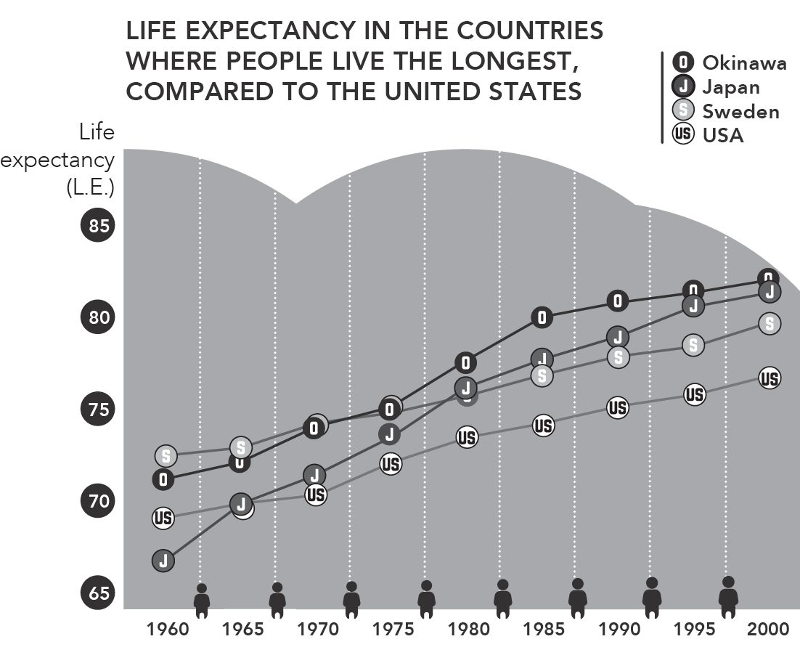
세계보건기구(WHO)에 따르면 일본은 세계 최고의 기대수명을 자랑한다. 남성 85세, 여성 87.3세. 게다가 백세인 비율도 세계 1위다. 백만 명당 520명 이상(2016년 9월 기준).
출처: World Health Organization, 1966; Japanese Ministry of Health, Labor and Welfare, 2004; U.S. Department of Health and Human Services/CDC, 2005
일본, 그 지방인 오키나와, 스웨덴, 미국의 기대수명을 비교한 위 그래프는 일본 전체의 기대수명이 높은 데다 오키나와는 국가 평균마저 앞선다는 사실을 보여 준다.
오키나와는 일본 내에서 제2차 세계대전의 피해가 가장 컸던 지역 중 하나다. 전장의 전투뿐 아니라 종전 후의 굶주림과 자원 부족 탓에 1940~50년대 평균 기대수명은 그리 높지 않았다. 그러나 오키나와 사람들이 폐허에서 회복되면서 이 나라에서 가장 오래 사는 시민들의 반열에 올랐다.
일본인들은 어떤 장수의 비결을 쥐고 있을까? 오키나와를 기대수명의 정점으로 만드는 것은 무엇일까?
전문가들은 우선 오키나와가 일본에서 유일하게 기차가 없는 지방이라고 짚는다. 주민들은 차를 타지 않을 때는 걷거나 자전거를 타야 한다. 또한 하루 소금 섭취량 10g 미만이라는 일본 정부 권고를 실제로 지켜 낸 유일한 지방이기도 하다.
오키나와의 기적의 다이어트
오키나와의 심혈관질환 사망률은 일본에서 가장 낮고 거의 틀림없이 식단이 크게 한몫한다. 세계 각지의 영양 포럼에서 ’오키나와 다이어트’가 그토록 자주 논의되는 건 결코 우연이 아니다.
오키나와 식단에 관해 가장 구체적이고 널리 인용되는 데이터는 류큐대학교 심장내과 의사 스즈키 마코토(Makoto Suzuki)의 연구들에서 나온다. 그는 1970년부터 오키나와의 영양과 노화에 관한 과학 논문 칠백 편 넘게 발표했다.
브래들리 J. 윌콕스(Bradley J. Willcox)와 D. 크레이그 윌콕스(D. Craig Willcox)가 스즈키 마코토의 연구진에 합류해 이 분야의 성서로 불리는 책 『오키나와 프로그램(The Okinawa Program)』을 펴냈다. 그들이 도달한 결론은 다음과 같다:
현지인들은 매우 다양한 음식, 특히 채소를 먹는다. 다양성이 열쇠로 보인다. 오키나와 백세인 연구에 따르면 이들은 양념을 포함해 206가지의 다른 음식을 정기적으로 먹었다. 하루 평균 열여덟 가지의 다른 음식을 먹었으며 우리 패스트푸드 문화의 영양 빈곤과 극명한 대조를 이룬다.
하루 최소 다섯 접시의 과일과 채소를 먹는다. 오키나와 사람들은 매일 최소 일곱 종류의 과일과 채소를 섭취한다. 식탁 위 다양성이 충분한지 확인하는 가장 쉬운 방법은 ’무지개를 먹는 것’이다. 예컨대 붉은 피망, 당근, 시금치, 콜리플라워, 가지가 오른 식탁은 훌륭한 색과 다양성을 제공한다. 채소와 감자, 콩류, 두부 등 대두 제품이 오키나와 식단의 주축이다. 일일 칼로리의 30퍼센트 이상이 채소에서 나온다.
곡물이 식단의 기초다. 일본인들은 매일 흰 쌀밥을 먹으며 때로 면을 더한다. 오키나와에서도 쌀이 주식이다.
설탕을 드물게 먹으며, 먹더라도 사탕수수 설탕이다. 우리는 오기미로 가는 길마다 사탕수수밭 몇 개를 지났고 나키진성에서 수수 한 잔을 마시기도 했다. 수수를 파는 노점 곁에는 사탕수수의 항암 효과를 설명하는 팻말이 서 있었다.
이 기본적인 식단 원칙 외에 오키나와 사람들은 생선을 주 평균 삼 번 먹는다. 일본의 다른 지역과 달리 가장 자주 먹는 고기는 돼지고기지만 현지인들은 주 일두 번만 먹는다.
이런 맥락에서 스즈키 마코토의 연구들은 다음을 밝힌다:
오키나와 사람들은 일본 본토 인구의 삼분의 일 수준으로 설탕을 섭취한다. 즉 단것과 초콜릿이 식단에서 훨씬 적은 비중을 차지한다.
소금 역시 일본 본토의 절반 수준: 하루 7g으로, 본토 평균 12g과 비교된다.
칼로리도 덜 섭취한다: 하루 평균 1,785kcal로, 일본 본토의 2,068kcal과 비교된다. 실제로 저열량 섭취는 다섯 블루존 전역에서 공통적으로 나타난다.
하라하치부
첫 장에서 언급한 80퍼센트 법칙으로 돌아오자. 일본어로 하라하치부(hara hachi bu)로 알려진 개념이다. 실행은 쉽다. 배가 거의 찬데 조금 더 먹을 수 있겠다 싶으면… 그냥 먹기를 멈추면 된다!
하라하치부를 시작하는 쉬운 방법 하나는 디저트를 건너뛰는 것이다. 혹은 1인분 양을 줄이는 것. 요점은 식사를 마쳤을 때 여전히 약간 허기져 있어야 한다는 것이다.
일본에서 1인분이 서구보다 훨씬 작은 경향이 있는 이유가 바로 이것이다. 음식은 전채, 메인 코스, 디저트 순으로 나오지 않는다. 대신 작은 접시에 나눠 한꺼번에 차려지는 게 훨씬 흔하다: 하나엔 밥, 또 하나엔 채소, 미소된장국 한 그릇, 그리고 곁들일 간식. 작은 접시 여러 개에 담아 내면 과식을 피하기 쉽고 이 장 앞부분에서 말한 다양한 식단도 실천하기 좋다.
하라하치부는 오래된 수련이다. 12세기 선(禪) 불교 서적 『자선용집기(Zazen Youjinki)』는 먹고 싶은 만큼의 삼분의 이만큼 먹으라고 권한다. 원하는 만큼 덜 먹는 것은 동양 모든 불교 사찰의 관습이다. 어쩌면 불교는 구세기 전부터 이미 칼로리 섭취 제한의 이점을 알아차렸던지도 모른다.
그래서, 적게 먹으면 오래 산다는 말인가?
이 생각에 이의를 제기할 사람은 거의 없을 것이다. 물론 영양실조라는 극단까지 가는 게 아니라면, 몸이 요구하는 것보다 적은 칼로리를 먹는 것이 수명을 늘리는 듯하다. 적은 칼로리를 섭취하면서 건강을 유지하는 열쇠는 높은 영양가의 음식(특히 ‘슈퍼푸드’)을 먹고 칼로리만 높이 불리고 영양가는 거의 없는 음식을 피하는 것이다.
앞서 논한 칼로리 제한은 수명에 해를 더하는 데 가장 효과적인 방법 중 하나다. 몸이 충분히 혹은 너무 많은 칼로리를 규칙적으로 섭취하면 무기력해지기 시작하고 닳아 없어지며 소화만으로 상당한 에너지를 쓴다.
칼로리 제한의 또 다른 이점은 체내 IGF-1(인슐린 유사 성장인자 1) 수치를 낮춘다는 것이다. IGF-1은 노화 과정에서 큰 역할을 하는 단백질이다. 인간과 동물이 늙는 이유 중 하나가 혈중 이 단백질의 과잉인 듯하다.
칼로리 제한이 인간의 수명을 연장할지는 아직 알려지지 않았지만 데이터들은 점점 더 적당한 칼로리 제한이 충분한 영양과 함께 이루어질 경우 비만, 2형 당뇨, 염증, 고혈압, 심혈관질환에 강력한 보호 효과를 발휘하고 암 관련 대사 위험 인자를 줄인다는 것을 시사한다.
매일 80퍼센트 법칙을 지키는 대안으로 주 일이틀 단식하는 방법이 있다. 5:2(단식) 다이어트는 매주 이틀 단식(500kcal 미만 섭취)하고 나머지 닷새는 평소대로 먹기를 권한다.
수많은 이점 가운데 단식은 소화계를 청소하고 쉬게 해 준다.
오키나와 식단 속 자연 항산화제 15가지
항산화제는 세포의 산화 과정을 늦추어 손상과 노화를 가속하는 활성산소를 무력화하는 분자다. 예컨대 녹차의 항산화 힘은 잘 알려져 있으며 뒤에서 더 길게 다룬다.
항산화제가 풍부하고 이 지역에서 거의 매일 먹는다는 이유로, 다음 열다섯 가지 식품이 오키나와 활력의 열쇠로 꼽힌다:
두부 / 미소 / 참치 / 당근 / 고야(여주) / 곰부(다시마) / 양배추 / 김(nori) / 양파 / 콩나물 / 헤치마(오이 같은 박) / 대두(삶거나 날것으로) / 고구마 / 피망 / 삔빤차(자스민 차)
삔빤차: 오키나와의 대표 차
오키나와 사람들은 어떤 종류의 차보다 삔빤차(Sanpin-cha)녹차와 자스민 꽃의 혼합를 많이 마신다. 서구에서 가장 근사한 대응물은 보통 중국산으로 들어오는 자스민 차일 것이다. 오키나와 과학기술대학원대학교의 쇼 히로코(Hiroko Sho)가 1988년 수행한 연구는 자스민 차가 혈중 콜레스테롤 수치를 낮춘다는 사실을 보여 준다.
삔빤차는 오키나와에서 여러 형태로 만날 수 있고 자판기에서도 판다. 녹차의 모든 항산화 효능에 더해 자스민의 효능도 자랑한다:
- 심근경색 위험 감소
- 면역 체계 강화
- 스트레스 완화 도움
- 콜레스테롤 저하
오키나와 사람들은 하루 평균 삔빤차 세 잔을 마신다.
서구에서 정확히 같은 배합을 찾기는 어렵겠지만 자스민 차나 좋은 품질의 녹차로 대신할 수 있다.
녹차의 비밀
녹차에는 수세기 동안 상당한 약효가 인정되어 왔다. 최근 연구들은 그 많은 이점을 확인했고 자주 마시는 사람들의 장수에서 이 오래된 식물이 하는 역할을 증명했다.
원산지인 중국에서 수천 년간 소비되어 온 녹차는 겨우 몇 세기 전에야 세계 나머지 지역으로 퍼져 나갔다.
다른 차들과 달리, 발효 없이 통풍 건조하기 때문에 건조되고 으깨진 뒤에도 활성 성분을 유지한다. 다음과 같은 의미 있는 건강상 이점을 제공한다:
- 콜레스테롤 조절
- 혈당 수치 저하
- 혈액순환 개선
- 독감 예방 (비타민 C)
- 뼈 건강 증진 (플루오라이드)
- 특정 세균 감염으로부터의 보호
- 자외선 손상으로부터의 보호
- 정화 및 이뇨 작용
폴리페놀이 고농도로 함유된 백차는 노화 방지에 더 효과적일 수 있다. 실제로 세계에서 가장 강력한 항산화 힘을 지닌 천연물로 여겨진다. 한 잔의 백차가 오렌지주스 열두 잔 분량의 위력을 낼 수 있다는 계산까지 나온다.
요약하자면: 녹차든 백차든 매일 마시면 체내 활성산소를 줄여 더 오래 젊음을 유지하는 데 도움이 된다.
강력한 시쿠와사
시쿠와사는 오키나와의 대표적인 감귤류 과일이며 오기미는 일본 전체에서 가장 큰 생산지다.
이 과일은 극도로 신맛이 강하다: 물로 희석하지 않고는 시쿠와사 주스를 마시는 게 불가능하다. 맛은 라임과 귤 사이 어딘가에 있는데, 실제로 귤과 친족뻘을 한다.
시쿠와사에는 노빌레틴(nobiletin)이라는 항산화 성분이 풍부한 플라보노이드가 높은 수준으로 함유되어 있다.
모든 감귤류자몽, 오렌지, 레몬에 노빌레틴이 많지만 오키나와의 시쿠와사는 오렌지의 마흔 배를 지녔다. 노빌레틴 섭취가 동맥경화, 암, 2형 당뇨, 비만 전반으로부터 우리를 보호한다는 사실이 입증되었다.
시쿠와사에는 비타민 C와 B1, 베타카로틴, 미네랄도 들어 있다.
많은 전통 요리와 음식의 향미 첨가에 쓰이고 짜서 주스로 만들기도 한다. 마을 ‘조부모님들’ 생일 파티 조사 때는 시쿠와사 케이크를 대접받았다.
서구인을 위한 항산화 정전
2010년 영국 『데일리 미러(Daily Mirror)』가 노화 대항에 권하는 식품 목록을 전문가들에게 물어 실었다. 이 중 서구에서 쉽게 구할 수 있는 것들은:
- 브로콜리와 근대 같은 채소 수분, 미네랄, 섬유질의 고농도 덕에
- 연어, 고등어, 참치, 정어리 같은 기름진 생선 지방 속 항산화 성분 덕에
- 감귤류, 딸기, 살구 같은 과일 비타민의 훌륭한 공급원이며 몸에서 독소를 배출하도록 돕는다
- 블루베리와 구기자 같은 베리류 식물화학 항산화제가 풍부하다
- 말린 과일 비타민과 항산화제를 함유하고 에너지를 준다
- 오트밀과 밀 같은 곡물 에너지를 주고 미네랄을 함유한다
- 올리브 오일 피부에 드러나는 항산화 효과
- 붉은 포도주, 적당량은 항산화 및 혈관 확장 특성
없애야 할 음식은 정제 설탕과 곡물, 가공 베이커리 제품, 즉석식품이며 우유와 모든 유제품 파생물도 포함된다. 이 식단을 따르면 더 젊게 느끼고 조로 과정을 늦추는 데 도움이 될 것이다.
VIII
부드러운 움직임, 더 긴 삶
건강과 장수를 촉진하는 동양의 운동
블루존의 연구들이 시사하듯 가장 오래 사는 사람들은 가장 많은 운동을 하는 사람들이 아니라 가장 많이 움직이는 사람들이다.
장수 마을 오기미를 방문했을 때 우리는 여든과 아흔이 넘은 사람들조차 여전히 매우 활동적이라는 걸 발견했다. 집에 앉아 창밖을 내다보거나 신문을 읽으며 시간을 보내지 않는다. 오기미 주민들은 많이 걷고, 이웃들과 노래방을 하고, 아침 일찍 일어나 아침을 먹자마자혹은 그 전에밖으로 나가 텃밭의 잡초를 뽑는다. 헬스장에 가거나 격렬한 운동을 하지는 않지만 일상의 흐름 속에서 거의 멈추지 않고 움직인다.
의자에서 일어나는 것만큼 쉽다
“30분 앉아 있으면 신진대사가 90퍼센트 느려집니다. 나쁜 지방을 동맥에서 근육으로지방이 태워질 수 있는 곳으로옮기는 효소들이 느려지죠. 그리고 2시간이면 좋은 콜레스테롤이 20퍼센트 떨어집니다. 5분이라도 일어나면 다시 돌아갑니다. 이런 것들이 너무 단순해서 거의 어리석을 지경입니다.” 개빈 브래들리(Gavin Bradley)가 2015년 워싱턴 포스트와 브리지드 슐테(Brigid Schulte)의 인터뷰에서 한 말이다. 브래들리는 이 분야의 저명한 전문가 중 한 명으로, 계속 앉아 있는 게 우리 건강에 얼마나 해로운지 인식을 높이는 국제기구의 디렉터다.
도시에 산다면 매일 자연스럽고 건강하게 움직이기 어려울 수 있다. 하지만 수세기 동안 몸에 좋다고 입증된 운동들에 눈을 돌릴 수는 있다.
몸과 마음과 영혼의 균형을 잡는 동양의 수련법들은 서구에서 꽤 인기를 얻었지만 원산지에서는 오래전부터 건강 증진에 쓰여 왔다.
요가인도 기원이지만 일본에서 매우 인기 있다와 중국의 기공과 태극권 등의 수련법은 사람의 몸과 마음 사이의 조화를 만들어 강함과 기쁨, 평온함으로 세상에 맞설 수 있게 하려 한다.
젊음의 영약으로 내세워지며 과학도 이 주장을 뒷받침한다.
이 부드러운 운동들은 놀라운 건강상 이점을 제공하며 체력 유지가 어려운 고령자에게 특히 적합하다. 태극권은 골다공증과 파킨슨병의 진행을 늦추고, 혈액순환을 늘리고, 근긴장도와 유연성을 개선하는 것으로 나타났다. 정서적 이점 또한 중요하다. 스트레스와 우울에 대한 훌륭한 방패다.
매일 헬스장에서 한 시간씩 보내거나 마라톤을 뛸 필요는 없다. 일본 백세인들이 보여 주듯 필요한 것은 하루에 움직임을 더하는 것뿐이다. 동양 수련법 중 하나를 규칙적으로 하면 좋은 방법이 된다. 덤으로 이 수련법들은 모두 분명히 정의된 단계를 갖추고 있다. 4장에서 봤듯 규칙이 분명한 수련은 몰입에 좋다. 이중 마음에 드는 게 없다면 자신이 사랑하고 움직이게 만드는 수련을 자유롭게 선택하라.
이후 페이지에서 건강과 장수를 촉진하는 수련 몇 가지를 살펴보겠다. 다만 먼저 작은 전채 하나: 하루를 시작하기 위한, 유독 일본적인 운동.
라디오 타이소
이 아침 준비 운동은 제2차 세계대전 이전부터 있었다. 이름의 ’라디오’는 각 운동의 지시가 라디오로 전송되던 때에서 온 것이지만 오늘날 사람들은 보통 TV 채널이나 인터넷 영상으로 동작을 확인하며 한다.
라디오 타이소의 주된 목적 중 하나는 참가자들 사이의 일체감을 키우는 것이다. 운동은 늘 집단으로 하며 보통 학교에서는 수업 시작 전에, 회사에서는 근무 시작 전에 한다.
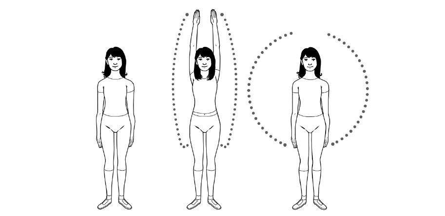
통계에 따르면 일본인의 30퍼센트가 매일 아침 몇 분씩 라디오 타이소를 한다. 그리고 라디오 타이소는 오기미에서 인터뷰한 거의 모든 사람에게 공통된 사항이었다. 우리가 방문한 요양원의 입주자들조차 매일 최소 5분씩 이 운동을 했는데, 일부는 휠체어에 앉아서 했다. 우리도 함께 일일 수련에 참여했더니 남은 하루 동안 상쾌함을 느꼈다.
이 운동들을 집단으로 할 때는 보통 운동장이나 큰 홀에서 하며 대개 확성기를 동반한다.
운동은 전부를 하느냐 일부만 하느냐에 따라 5분에서 10분 걸린다. 역동적 스트레칭과 관절 가동범위 확대에 초점을 맞춘다. 가장 상징적인 라디오 타이소 동작 중 하나는 팔을 머리 위로 들었다가 원을 그리며 내리는 단순한 동작이다. 몸을 깨우는 도구로, 강도 낮고 가능한 한 많은 관절을 움직이는 데 초점을 맞춘 쉬운 가동성 운동이다.
기초적으로 보이지만 현대 생활에서 우리는 며칠씩 팔을 귀 위로 들지 않을 수 있다. 생각해 보라: 컴퓨터를 쓸 때, 스마트폰을 쓸 때, 책을 읽을 때 우리 팔은 내려가 있다. 손을 머리 위로 드는 몇 안 되는 순간은 찬장이나 옷장 속 무언가를 꺼내려 할 때다. 반면 우리 조상들은 나무에서 열매를 딸 때마다 늘 손을 머리 위로 들었다. 라디오 타이소는 몸의 모든 기본 동작을 연습하게 도와준다.
라디오 타이소 기본 버전 (5분).
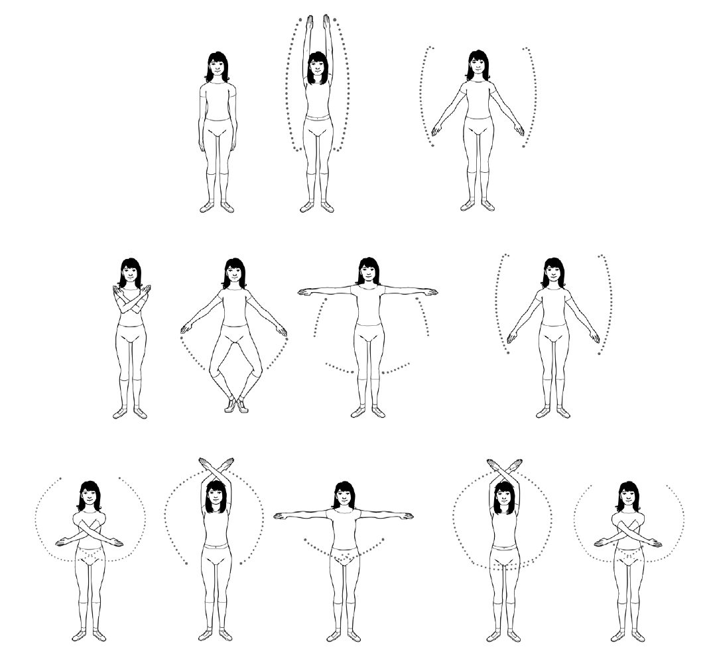

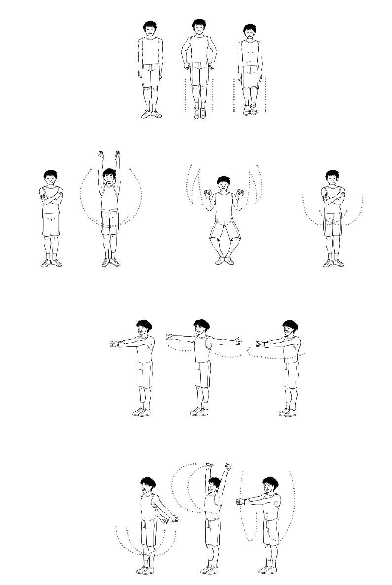
요가
일본과 서구 모두에서 인기 있는 요가는 거의 누구나 할 수 있다.
일부 자세는 임산부와 신체 장애가 있는 수련자들을 위해 맞춰져 있기까지 하다.
요가는 인도에서 왔다. 수천 년 전 우리의 정신적·육체적 요소를 통합하기 위해 발달했다. 요가(yoga)라는 단어 자체가 산스크리트어로 ’멍에’를 뜻하는 용어에서 나왔는데, 짐승을 서로 그리고 끄는 수레에 묶는 가로대를 가리킨다. 요가도 같은 방식으로 몸과 마음의 통합을 추구하며 주변 세계와 조화로운 건강한 삶으로 우리를 이끈다.
요가의 주된 목표는:
- 우리의 (인간으로서의) 본성에 더 가까이 가는 것
- 정신적·육체적 정화
- 신성에 더 가까이 가는 것
요가의 유파
비슷한 목표를 향해 있지만 발전시킨 전통과 경전에 따라 다양한 유형의 요가가 있다. 그 차이는 스승들의 말대로 최선의 자아라는 정상까지 가는 길에 있다.
즈냐나 요가(Jnana yoga): 지혜의 요가; 규율과 정신적 성장의 탐구
카르마 요가(Karma yoga): 행동, 즉 자신과 공동체에 이로운 과업과 의무에 초점
박티 요가(Bhakti yoga): 신성에 대한 헌신과 귀의의 요가
만트라 요가(Mantra yoga): 만트라 낭송으로 이완 상태에 도달하는 데 초점
쿤달리니 요가(Kundalini yoga): 원하는 정신 상태에 도달하기 위한 다양한 단계의 결합
라자 요가(Raja yoga): 왕도(royal path)로도 알려짐; 자기 자신과 타인과의 합일을 지향하는 일련의 단계를 포괄
하타 요가(Hatha yoga): 서구와 일본에서 가장 널리 퍼진 형태; 균형 추구를 위해 결합된 아사나(asana) 혹은 자세가 특징
수리야 나마스카르(태양 예배) 하는 법
수리야 나마스카르(Sun Salutation)는 하타 요가에서 가장 상징적인 동작 중 하나다. 이 열두 기본 동작만 따르면 된다:
두 발을 모으고 곧게 선다. 근육은 힘을 뺀 채로. 숨을 내쉰다.
양 손바닥을 가슴 앞에 맞댄다. 이 자세에서 팔을 머리 위로 들어 올리며 살짝 뒤로 젖히고 숨을 들이쉰다.
무릎을 굽히지 않고 앞으로 숙여 손바닥이 바닥에 닿을 때까지 내려가며 숨을 내쉰다.
한쪽 다리를 뒤로 뻗어 발끝이 바닥에 닿게 한다. 숨을 들이쉰다.
나머지 다리도 뒤로 보내 팔과 다리를 곧게 편 채 숨을 참는다.
숨을 내쉬며 팔을 굽혀 가슴을 바닥으로 가져갔다 앞으로 밀며 무릎을 바닥에 댄다.
팔을 펴고 등뼈를 뒤로 젖히되 하반신은 바닥에 둔다. 숨을 들이쉰다.
손바닥과 발을 바닥에 두고 엉덩이를 들어 올려 팔과 다리가 곧게 펴지고 몸이 거꾸로 된 V자를 이루게 한다. 동작 내내 숨을 내쉰다.
아까 뒤로 뻗었던 같은 다리를 앞으로 가져와 무릎과 발이 머리 아래, 양손 사이에 정렬되도록 굽힌다. 숨을 들이쉰다.
뒷발을 앞으로 가져오고 다리를 펴면서 3번 자세처럼 손을 바닥에 둔 채 숨을 내쉰다.
손바닥을 맞댄 채 팔을 머리 위로 올려 2번 자세처럼 살짝 뒤로 젖히며 숨을 들이쉰다.
산 자세(mountain pose)의 처음 위치로 팔을 내리며 숨을 내쉰다.
방금 태양에게 인사했다. 이제 멋진 하루를 보낼 준비가 됐다.
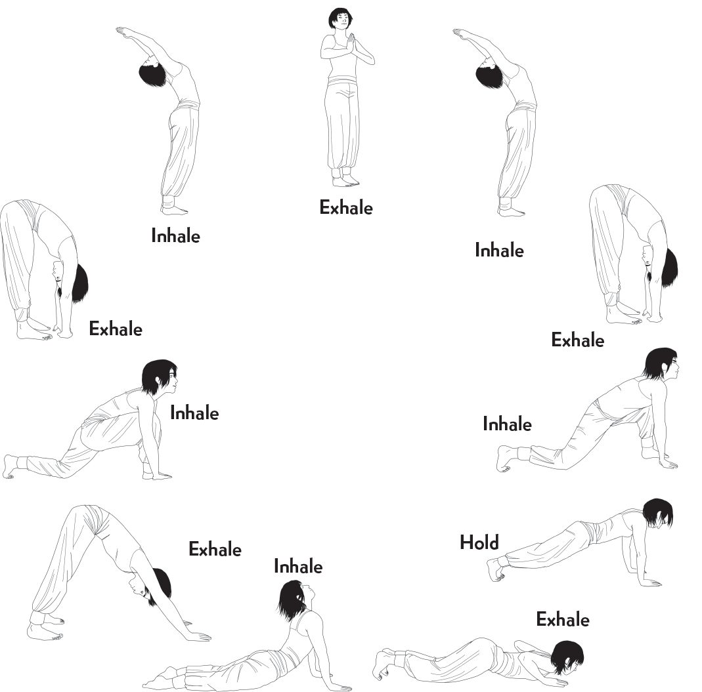
태극권
태극권(tai chi)은 타이치추안(t’ai chi ch’uan, 타이지췐)이라고도 불리는 중국 무술로, 수백 년을 거슬러 불교와 유교까지 소급된다. 일본에서도 매우 인기 있다.
중국 전승에 따르면 도교 스승이자 무예가였던 장삼봉(Zhang Sanfeng)이 창시했으나, 19세기에 양로선(Yang Luchan)이 이 형태를 세계 나머지 지역에 알렸다.
태극권은 원래 네이자(neijia), 즉 내가(內家) 무술로 목표가 개인적 성장이었다. 호신에 초점을 맞춰 수련자에게 최소한의 힘으로 기민함에 의존해 적을 제압하는 법을 가르친다.
몸과 마음을 치유하는 수단으로 여겨지기도 했던 태극권은 점점 건강과 내적 평화를 기르는 데 더 자주 쓰이게 되었다. 국민들이 더 활동적으로 지내도록 독려하고자 중국 정부가 운동으로 장려했고 원래의 무술과의 연결은 흐려져 대신 누구나 접근 가능한 건강과 웰빙의 원천이 되었다.
태극권의 유파
태극권에는 서로 다른 학파와 유파가 있다. 가장 잘 알려진 것들:
진식(Chen-style): 느린 동작과 폭발적인 동작을 번갈아 한다
양식(Yang-style): 가장 널리 퍼진 형태; 느리고 유려한 동작이 특징
우식(Wu-style): 작고 느리고 신중한 동작을 사용한다
호식(Hao-style): 내부 동작 중심으로 외부 동작은 거의 현미경적; 중국에서조차 가장 덜 수련되는 형태 중 하나
차이에도 불구하고 이 유파들은 모두 같은 목표를 지닌다:
고요함으로 움직임을 통제하기
교묘함으로 힘을 이기기
늦게 움직이고 먼저 도착하기
자신과 상대를 알기
태극권의 십대 원칙
양청푸(Yang Chengfu) 사부에 따르면 올바른 태극권 수련은 열 가지 기본 원칙을 따른다:
정수리를 위로 끌어 올리고 모든 에너지를 거기에 집중한다.
가슴을 모으고 등을 넓혀 하반신을 가볍게 만든다.
허리를 편하게 하고 몸을 이끌게 한다.
무겁고 가벼움을 구분하는 법을 익히고 체중 분배를 안다.
어깨를 풀어 팔의 자유로운 움직임을 허용하고 기(氣)의 흐름을 촉진한다.
몸의 힘보다 마음의 민첩성을 귀히 여긴다.
상체와 하체를 하나로 통합해 일치하여 작동하게 한다.
내와 외를 통일해 마음, 몸, 호흡을 동조시킨다.
동작의 흐름을 끊지 않는다. 유동성과 조화를 유지하라.
움직임 속에서 고요함을 찾아라. 활동적인 몸은 고요한 마음으로 이끈다.
구름 본떠서
태극권에서 가장 잘 알려진 동작 중 하나는 ’구름처럼 손 흔들기(Wave Hands Like Clouds)’라 불리는 구름의 형태를 따르는 운동이다. 단계:
양팔을 앞으로 뻗되 손바닥은 아래로 향한다.
손바닥을 안쪽으로 돌린다. 나무 줄기를 껴안듯이.
양팔을 옆으로 벌린다.
왼팔을 위로 중심으로, 오른팔은 아래로 중심으로 가져온다.
몸 앞에서 공 모양을 그린다.
왼손바닥을 얼굴 쪽으로 돌린다.
체중을 왼발로 옮기고 고관절에서 그쪽으로 회전한다. 눈은 손의 움직임을 따른다.
왼손을 허리로, 오른손은 얼굴 앞으로 가져온다.
체중을 오른발로 옮긴다.
오른쪽으로 회전하며 들어 올린 오른손을 계속 주시한다.
손 위치를 바꾸며 체중을 발에서 발로 옮기는 이 동작을 유연하게 반복한다.
다시 양팔을 앞으로 뻗어 천천히 내려 초기 자세로 돌아간다.
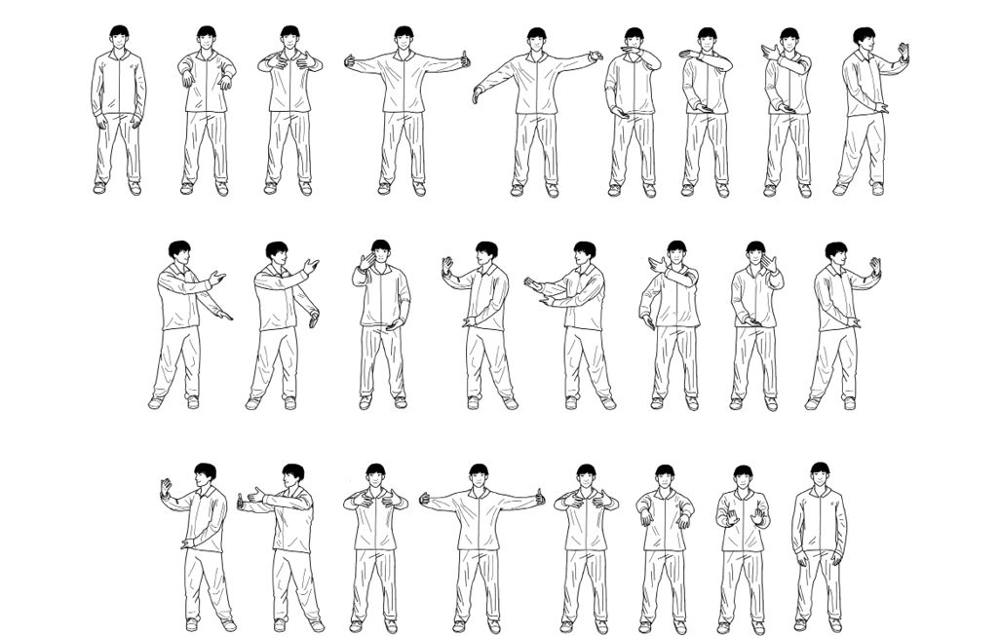
기공
기공(chi kung)으로도 알려진 이 수련의 이름은 기(qi, 생명력 혹은 에너지)와 궁(gong, 일)을 결합해 개인의 생명력으로 작업한다는 뜻을 담는다. 비교적 현대적특히 지금 이름 아래서는이지만 기공의 기술은 도인(導引, Tao yin), 즉 정신적·육체적 웰빙을 키우려 한 고대 예술에 기반한다.
이 수련은 20세기 초 훈련과 무술에 관한 보고에 등장하기 시작했고 1930년대에는 병원에서 쓰였다. 중국 정부가 태극권에서 했듯 나중에 대중화시켰다. 기공은 서거나 앉거나 누운 자세로 호흡을 자극하는 정적·동적 신체 운동을 포함한다. 다양한 유파가 있지만 모두 기를 강화하고 재생하려 한다.
동작은 전형적으로 부드럽지만 수련은 강렬하다.
기공의 이점
수많은 국제 과학 연구에 따르면 기공은 태극권과 요가처럼 상당한 건강상 이점을 제공한다. 샌프란시스코 기공연구소의 케네스 M. 샹시에(Kenneth M. Sancier) 박사가 논문 “기공의 의학적 응용(Medical Applications of Qigong)”에서 관찰한 가운데 과학 연구로 입증된 것들이 두드러진다:
- 뇌파의 조절
- 성호르몬 균형 개선
- 심근경색 사망률 감소
- 고혈압 환자의 혈압 저하
- 골밀도 증가
- 혈액순환 개선
- 노망 관련 증상 진행 완화
- 신체 기능의 균형과 효율 향상
- 뇌 혈류량 증가 및 마음-몸 연결 강화
- 심장 기능 개선
- 암 치료의 부작용 감소
이런 예술들을 수련하면 몸매만 유지되는 게 아니라 수명까지 늘어난다.
기공 수련법
기공을 올바르게 하려면 우리의 생명 에너지가 온몸으로 흐른다는 점을 기억해야 한다. 그 여러 부분을 조율하는 법을 알아야 한다:
티아우 센(Tyau Shenn): (신체 조율) 올바른 자세 채택땅에 단단히 뿌리내리는 것이 중요
티아우 시(Tyau Shyi): (호흡 조율) 호흡이 차분하고 안정되며 평온해질 때까지
티아우 신(Tyau Hsin): (마음 조율); 가장 까다로운 부분으로 생각을 비우는 일을 수반
티아우 치(Tyau Chi): (생명력 조율) 앞선 세 요소를 고루 조율해 기가 자연스럽게 흐르도록
티아우 선(Tyau Shen): (정신 조율); 정신은 전투에서 힘이자 뿌리다. 양정밍(Yang Jwing-Ming)이 『태지기공의 본질(The Essence of Taiji Qigong)』에서 설명했듯.
이렇게 하면 유기체 전체가 단일 목표를 향해 함께 작동할 준비를 갖춘다.
기공의 오행(五行)
기공에서 가장 잘 알려진 운동 중 하나는 오행토, 수, 목, 금, 화을 상징하는 동작 연속이다. 이 동작 연속은 다섯 기류의 에너지 균형을 잡아 뇌와 장기 기능을 개선하려 한다.
이 동작들을 하는 방법은 여럿이다. 여기서는 바르셀로나 기공연구소의 마리아 이사벨 가르시아 몬레알(María Isabel García Monreal) 교수의 모델을 따른다.
토(EARTH)
두 다리를 벌리고 발이 어깨 바로 아래에 오도록 선다.
자세를 굳건히 하기 위해 발끝을 살짝 바깥으로 돌린다.
어깨는 편하게 내리고 팔은 몸에서 살짝 떨어뜨려 옆에 느슨하게 둔다 (우치(Wu Qi), 곧 뿌리내린 자세다).
숨을 들이쉬며 양팔을 앞으로 올려 손이 어깨 높이에 오고 손바닥이 아래를 향하게 한다.
숨을 내쉬며 무릎을 굽히고 팔을 내려 손이 배 높이에 오고 손바닥이 안쪽을 향하게 한다.
이 자세를 몇 초 유지하며 호흡에 집중한다.
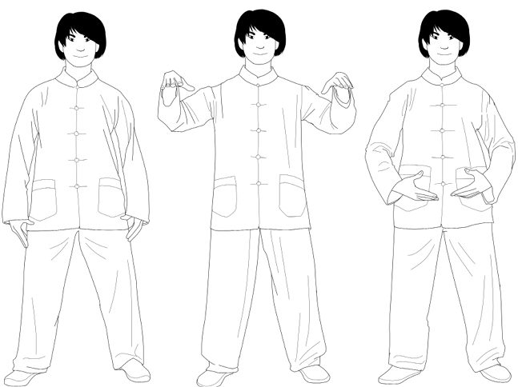
수(WATER)
토 자세에서 시작해 가슴을 세운 채 내내 숨을 내쉬며 무릎을 굽혀 스쿼트 자세가 된다.
꼬리뼈를 아래로 눌러 요추를 늘인다.
숨을 들이쉬며 일어나 토 자세로 돌아간다.
두 번 반복해 총 세 번 한다.
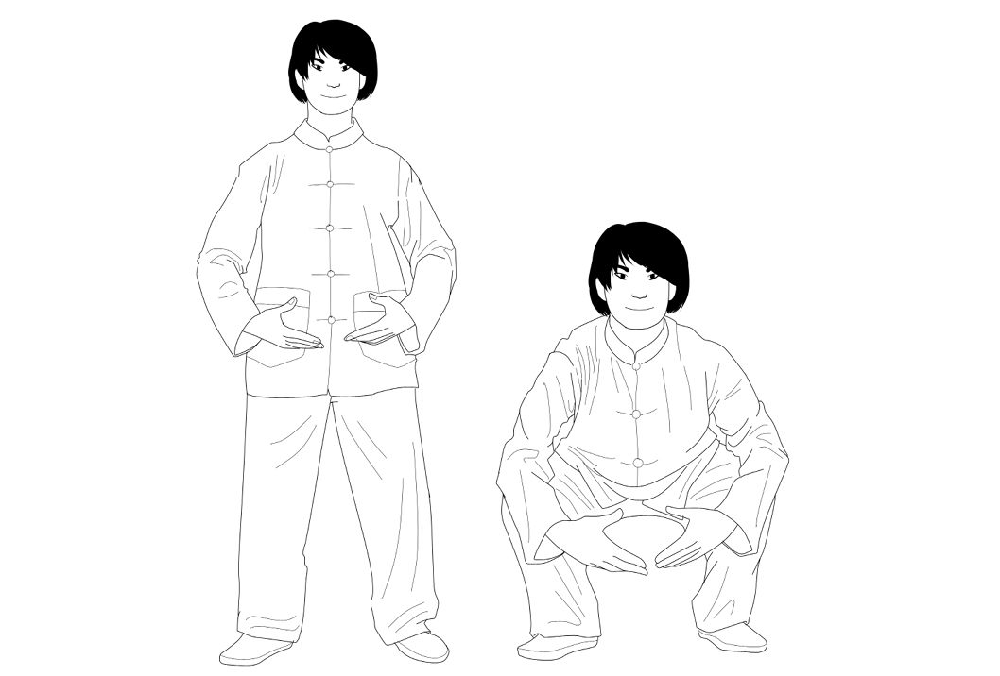
목(WOOD)
토 자세에서 시작해 손바닥을 위로 돌리고 숨을 들이쉬며 팔을 옆으로 벌려 원을 그려 손이 쇄골 높이에 오게 한다. 어깨는 편한 상태로 손을 돌려 손바닥과 팔꿈치가 아래를 향하게 한다.
숨을 내쉬며 동작을 거꾸로 해 팔로 아래 원을 그려 초기 위치로 돌아간다.
두 번 반복해 총 세 번 한다.
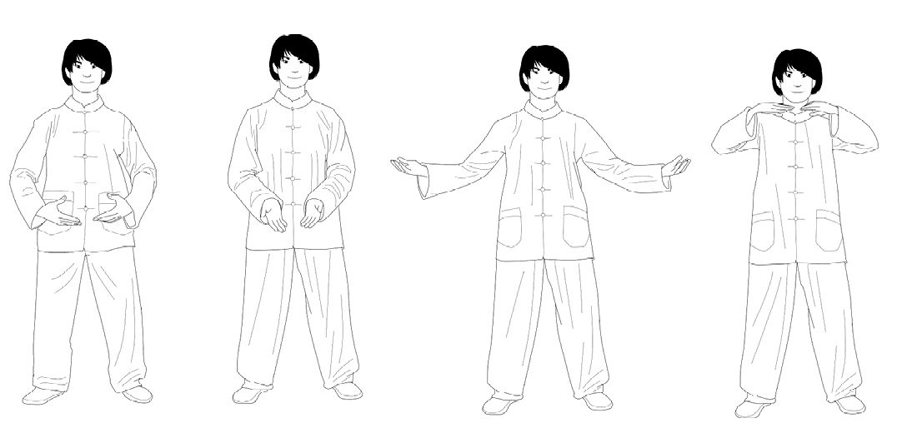
금(METAL)
토 자세에서 시작해 팔을 들어 올려 손이 흉골 높이에 오게 한다.
손바닥을 서로 마주 보게 돌린다. 간격은 약 10센티미터, 손가락은 편하게 살짝 벌려 위를 향한다.
숨을 들이쉬며 양손을 벌려 어깨 너비까지 간격을 벌린다.
숨을 내쉬며 양손을 모아 2번 위치로 되돌린다.
두 번 반복해 총 세 번 한다. 폐 앞에서 양손을 모을 때 에너지가 응집하는 것을 관찰한다.
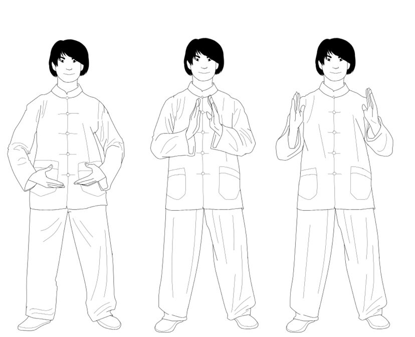
화(FIRE)
토 자세에서 시작해 숨을 들이쉬며 양손을 심장 높이로 가져온다. 한 손이 다른 손보다 살짝 위, 손바닥은 서로 마주 보게.
손을 회전해 심장의 에너지를 느낀다.
몸통을 편하게 한 채 전완이 바닥과 평행이 되게 하며 허리에서 부드럽게 왼쪽으로 돌린다.
손바닥이 마주 보는 상태에서 양손을 벌려 하나는 어깨 높이까지 올리고 다른 하나는 배 앞으로 내린다.
몸통을 편하게 한 채 전완이 바닥과 평행이 되게 하며 허리에서 부드럽게 오른쪽으로 돌린다.
숨을 내쉬며 양손이 심장 앞에서 다시 만나게 한다.
손바닥이 마주 보는 상태에서 양손을 벌려 하나는 어깨 높이까지 올리고 다른 하나는 배 앞으로 내린다.
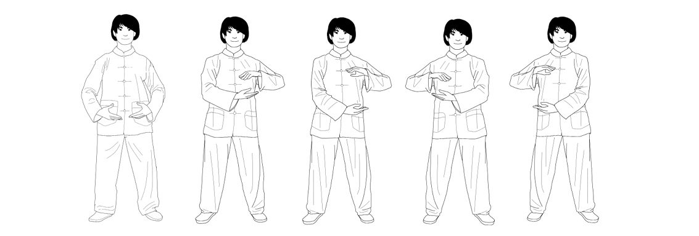
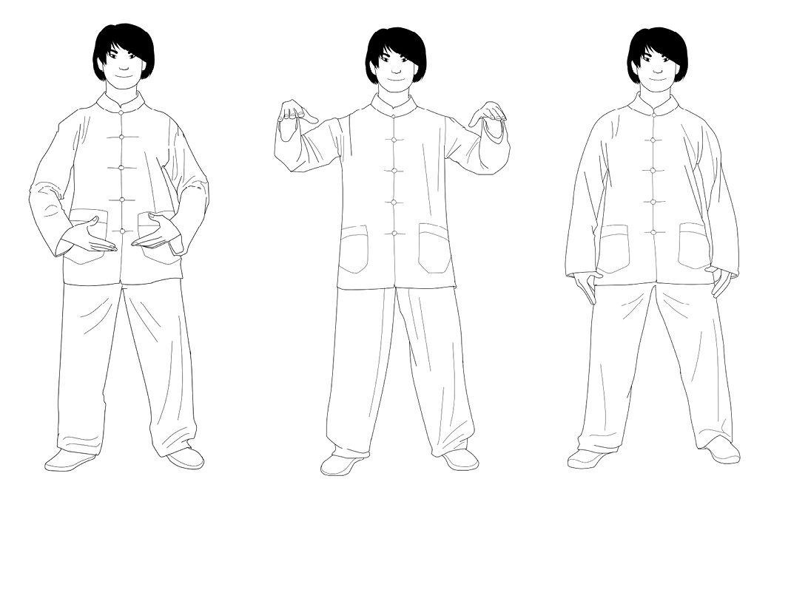
연계 마무리
토 자세에서 시작해 숨을 들이쉬며 손을 어깨 높이로 가져온다. 손바닥은 아래로.
숨을 내쉬며 팔을 옆으로 내려 초기 우치 자세로 돌아간다.
시아츠
20세기 초 일본에서 주로 관절염 치료를 위해 만들어진 시아츠는 엄지와 손바닥으로 압박을 가해 기의 흐름에도 작용한다. 스트레칭과 호흡 운동을 결합해 몸의 서로 다른 요소 사이 균형을 만들려 한다.
도인(導引)에 이름이 있느냐, 무언가를 본뜨느냐, 옥에 새겨졌느냐는 중요하지 않다. 중요한 것은 기술과 정말 수련되는 것의 본질이다. 늘이고 오므리고, 고개를 숙이고 들고, 걷고 눕고 쉬거나 서거나, 천천히 걷거나 외치거나 숨쉬는 것모든 것이 도인이 될 수 있다.
갈홍(Ge Hong)
더 잘 숨쉬며 더 오래 살기
서구에서 『수진십서(Xiuzhen shishu)』완성의 닦음에 관한 십서(Ten Books on the Cultivation of Perfection)로 알려진 이 책은 13세기로 거슬러 올라가며 마음과 몸을 닦는 데 관한 여러 출처의 자료를 모은 편찬이다.
여러 이들 가운데 6세기에 산 중국의 명의이자 수필가 손사막(Sun Simiao)을 인용한다. 손사막은 육자결(六字訣, Six Healing Sounds)이라 불리는 기법의 지지자였다. 동작과 호흡과 발음을 조율해 우리 영혼을 평온한 곳으로 데려가는 것이 목적이다.
여섯 소리는:
Xu 깊은 한숨과 함께 “쉬(shh)”처럼 발음. 간(肝)과 연관
He 하품하듯 “허(her)”처럼 발음. 심장과 연관
Si 느린 날숨과 함께 “써(sir)”처럼 발음. 폐와 연관
Chui 강한 날숨과 함께 “춰(chwee)”처럼 발음. 신장과 연관
Hoo “후(who)”처럼 발음. 비장(脾臟)과 연관
Xi “시(she)”처럼 발음. 전신을 연결한다
손사막의 다음 시는 계절에 따라 잘 사는 법의 실마리를 준다. 호흡의 중요성을 일깨우고 숨 쉴 때 각 치유 소리와 연관된 장기를 떠올려 보라고 제안한다.
봄에는 쉬(xu)를 내쉬어 눈을 맑게 하고 목(木)이 간을 돕게 하라. 여름에는 허(he)를 내쉬어 심장과 화(火)가 평화로울 수 있도록 하라. 가을에는 시(si)를 내쉬어 금(金)을 안정시켜 모으고 폐를 촉촉하게 유지하라. 다음은 신장을 위해 추(chui)를 내쉬어 내면의 물이 고요해짐을 보라. 삼초(三焦)는 시(xi)를 필요로 해 열과 근심을 모두 내보내게 하라. 사계절 모두 깊이 숨 쉬어 비장이 음식을 처리하게 하라. 그리고 물론 요란하게 내쉬지 말라; 네 귀조차 듣지 못하게. 이 수련은 가장 훌륭하여 당신의 신선 묘약을 지키는 데 도움이 되리라.
이 장에서 소개한 동양의 전통들이 한꺼번에 나오니 혼란스러울 수 있다. 요점은 하나다. 모두 신체 운동과 호흡 자각을 결합한다는 것이다. 이 두 요소움직임과 호흡는 의식을 몸과 일치시키는 데 도움을 준다. 마음이 매일의 걱정의 바다에 휩쓸리게 두는 대신 말이다. 대부분의 경우 우리는 그저 자기 호흡을 충분히 알아차리지 못할 뿐이다.
IX
회복탄력성과 와비사비
스트레스와 걱정이 우리를 늙게 두지 않으면서 삶의 도전에 맞서는 법
회복탄력성이란?
분명한 이키가이를 지닌 사람들 모두에게 공통인 한 가지는 무슨 일이 있어도 자신의 열정을 추구한다는 것이다. 카드가 절망적으로 기울었거나 장애물이 연달아 나타나도 절대 포기하지 않는다.
우리가 말하는 것은 회복탄력성(resilience), 심리학자들 사이에서 영향력을 얻은 개념이다.
하지만 회복탄력성은 단지 버티는 능력만이 아니다. 이 장에서 보겠지만 삶에서 가장 급한 것이 아니라 중요한 것에 집중하고 부정적 감정에 휩쓸리지 않도록 길러 낼 수 있는 관점이기도 하다.
이 장의 마지막 절에서는 회복탄력성을 넘어 안티프래질리티(antifragility)를 기르는 기법들을 탐구하겠다.
조만간 우리 모두는 어려운 순간과 마주해야 하며 그 마주하는 방식이 삶의 질에 큰 차이를 만든다. 마음, 몸, 정서적 회복탄력성에 대한 올바른 훈련은 삶의 굽이굽이에 맞서는 데 필수적이다.
나나 코로비 야 오키 (七転び八起き)
일곱 번 넘어져 여덟 번 일어난다.
일본 속담
회복탄력성은 역경을 다루는 우리의 능력이다. 탄력적일수록 스스로 일어나 삶에 의미를 주는 것으로 돌아가기가 쉽다.
회복탄력적인 사람들은 낙담에 굴복하지 않고 목표, 곧 중요한 것에 집중하는 법을 안다. 그들의 유연성이 힘의 원천이다. 변화와 역전된 운명에 적응하는 법을 알기 때문이다. 통제할 수 있는 것에 집중하고 통제할 수 없는 것은 걱정하지 않는다.
라인홀드 니부어(Reinhold Niebuhr)의 유명한 ’고요함의 기도’를 빌리면:
신이여, 바꿀 수 없는 것들을 평온히 받아들일 은혜를, 바꾸어야 할 것들을 바꿀 용기를, 그리고 그 둘을 구분할 지혜를 주소서.
불교와 스토아주의를 통한 정서적 회복탄력성
싯다르타 고타마(부처)는 네팔 카필라바스투의 왕자로 태어나 부요에 둘러싸인 궁궐에서 자랐다. 열여섯에 결혼해 아이를 낳았다.
가문의 부에 만족하지 않아 스물아홉에 다른 삶 방식을 시도하기로 하고 궁을 떠나 수행자로 살았다. 하지만 그가 찾던 건 금욕이 아니었다. 금욕은 그가 찾던 행복과 웰빙을 주지 못했다. 부도, 극단적 금욕도 그에게 맞지 않았다.
그는 깨달았다. 지혜로운 사람은 삶의 즐거움을 무시해서는 안 된다고. 지혜로운 사람은 그런 즐거움과 함께 살 수 있되, 언제나 그것에 노예가 되기 쉽다는 점은 의식해야 한다.
키티온의 제논(Zeno)은 키니코스 학파에서 공부를 시작했다. 키니코스파 역시 금욕적으로 살며 세속적 즐거움을 모두 버렸다. 그들은 거리에서 살았고 소유한 것은 등에 입은 옷뿐이었다.
키니시즘이 웰빙의 감각을 주지 않는 것을 본 제논은 그 가르침을 버리고 스토아학파를 세웠다. 스토아주의의 핵심 생각은 이것이다. 즐거움이 당신의 삶을 지배하지 않는 한 삶의 즐거움을 즐기는 데 아무 문제가 없다. 단, 그 즐거움이 사라질 준비가 되어 있어야 한다.
목표는 키니시즘처럼 우리 삶에서 모든 감정과 쾌락을 제거하는 게 아니라 부정적 감정을 제거하는 것이다.
태동 이래 불교와 스토아주의의 목표 중 하나는 쾌락과 감정과 욕망을 다스리는 것이었다. 철학은 매우 다르지만 둘 다 자아를 억제하고 부정적 감정을 통제하는 것을 지향한다.
스토아주의와 불교는 둘 다 그 뿌리에서 웰빙을 수련하는 방법이다.
스토아주의에 따르면 우리의 쾌락과 욕망 자체가 문제가 아니다. 그것이 우리를 지배하지 않는 한 즐겨도 된다. 스토아 철인들은 감정을 통제할 줄 아는 사람들을 덕 있는 사람으로 여겼다.
일어날 수 있는 최악의 일은 무엇인가?
우리는 마침내 꿈에 그리던 직장을 얻지만 얼마 안 가 더 좋은 자리를 알아보기 시작한다. 복권에 당첨되어 좋은 차를 사고 나서는 돛단선 없이 못 살겠다고 결심한다. 오랫동안 그리워하던 남자 혹은 여자의 마음을 마침내 얻고 나서 문득 다른 사람에게 눈이 간다.
사람은 만족을 모를 수 있다.
스토아 철인들은 이런 부류의 욕망과 야망은 추구할 가치가 없다고 믿었다. 덕 있는 사람의 목표는 평정 상태(아파테이아, apatheia)에 도달하는 것이다. 불안, 두려움, 수치심, 허영, 분노 같은 부정적 감정의 부재와 행복, 사랑, 평온, 감사 같은 긍정적 감정의 존재.
마음을 덕 있게 유지하려고 스토아 철인들은 소극적 시각화(negative visualization)라 할 만한 것을 수행했다. 일어날 수 있는 최악을 상상해 특정 특권과 즐거움이 빼앗길 경우를 대비하는 것이다.
소극적 시각화를 하려면 부정적 사건들을 성찰하되 그것들에 대해 걱정하지 않아야 한다.
고대 로마에서 가장 부자 중 하나였던 세네카(Seneca)는 호화로운 삶을 살면서도 활동적인 스토아 철인이었다. 그는 매일 밤 잠들기 전 소극적 시각화를 실천하라고 권했다. 사실 그는 이런 부정적 상황을 상상하는 데만 그치지 않고 직접 실행했다. 예컨대 하인 없이, 부자로서 익숙했던 먹고 마시던 것 없이 한 주를 보내는 식으로. 그 결과 그는 “일어날 수 있는 최악의 일은 무엇인가?”라는 질문에 답할 수 있었다.
더 건강한 감정을 위한 명상
소극적 시각화와 부정적 감정에 굴복하지 않기 외에 스토아주의의 또 다른 핵심 교리는 ’무엇을 통제할 수 있는지 없는지 아는 것’이다. 고요함의 기도에서 보았듯.
통제 밖의 일들을 걱정하는 건 아무 성취가 없다. 무엇을 바꿀 수 있고 무엇을 못 하는지 명확히 알아야 하며 그것이 다시 부정적 감정에 굴복하지 않도록 해 준다.
에픽테토스(Epictetus)의 말이다. “중요한 것은 당신에게 무슨 일이 일어나느냐가 아니라 어떻게 반응하느냐다.”
선(禪) 불교에서 명상은 우리의 욕망과 감정을 자각하고 그로부터 스스로를 해방하는 길이다. 단순히 생각 없는 마음을 유지하는 게 아니라 생각과 감정이 떠오르는 대로 관찰하되 그것에 휩쓸리지 않는 것이다. 이렇게 하면 우리는 분노와 질투와 원한에 휩쓸리지 않도록 마음을 훈련한다.
불교에서 가장 널리 쓰이는 만트라 하나는 부정적 감정 통제에 초점을 맞춘다: “옴 마니 파드메 훔(Oṃ maṇi padme hūṃ)”. 옴(oṃ)은 자아를 정화하는 관대함, 마(ma)는 질투를 정화하는 윤리, 니(ṇi)는 열정과 욕망을 정화하는 인내, 파드(pad)는 편견을 정화하는 정밀함, 메(me)는 탐욕을 정화하는 귀의, 훔(hūṃ)은 증오를 정화하는 지혜다.
지금 여기, 그리고 만물의 무상함
회복탄력성을 기르는 또 하나의 열쇠는 어느 시간 속에 살지 아는 것이다. 불교와 스토아주의 모두 현재만이 존재하며 통제할 수 있는 유일한 것임을 상기시킨다. 과거나 미래를 걱정하는 대신 사물을 지금, 이 순간 그대로 소중히 여겨야 한다. “진정으로 살아 있을 수 있는 유일한 순간은 지금 이 순간입니다.” 불교 승려 틱낫한(Thich Nhat Hanh)의 관찰이다.
지금 여기에 사는 것에 더해 스토아 철인들은 주변 만물의 무상함을 성찰하기를 권한다.
로마 황제 마르쿠스 아우렐리우스(Marcus Aurelius)는 우리가 사랑하는 것들은 나뭇잎과 같아서 한 줄기 바람에도 언제든 떨어질 수 있다고 했다. 또한 주변 세계의 변화는 우연이 아니라 우주의 본질의 일부를 이룬다고 했다실제로 상당히 불교적인 견해다.
우리가 가진 모든 것과 사랑하는 모든 사람은 언젠가 사라질 것이라는 걸 절대 잊어서는 안 된다. 이걸 마음에 새겨 두되 비관에 굴복해서는 안 된다. 만물의 무상함을 자각하는 것이 우리를 슬프게 할 필요는 없다. 그것은 현재의 순간과 곁의 사람들을 사랑하도록 돕는 것이어야 한다.
“인간의 모든 것은 덧없고 잘 없어진다.” 세네카가 말한다.
세계의 덧없고, 순간적이고, 영원하지 않은 본성은 모든 불교 수련의 중심이다. 이를 늘 마음에 두면 상실의 시기에 과도한 고통을 피하는 데 도움이 된다.
와비사비와 일기일회(一期一会)
와비사비(wabi-sabi)는 주변 세계의 덧없고 변덕스럽고 불완전한 본성의 아름다움을 보여 주는 일본 개념이다. 완벽함 속에서 아름다움을 찾는 대신 흠이 있고 미완성인 것들 속에서 찾아야 한다.
그래서 일본인들은 예컨대 불규칙하거나 금 간 찻잔에 큰 가치를 둔다. 불완전하고, 미완성이며 덧없는 것만이 진정으로 아름다울 수 있다. 오직 그것들만 자연계를 닮았으니까.
이를 보완하는 일본 개념이 일기일회(ichi-go ichi-e)다. “이 순간은 지금만 존재하며 다시 오지 않는다”로 옮길 수 있다. 모임에서 가장 자주 들리는 말로, 각 만남친구든, 가족이든, 낯선 이든이 유일하며 다시 반복되지 않음을 상기시킨다. 즉 그 순간을 즐기고 과거나 미래 걱정에 자신을 잃지 말라는 것이다.
이 개념은 다례, 선 명상, 일본 무술처럼 현재의 순간에 온전히 있음을 강조하는 모든 것에서 흔히 쓰인다.
서구에서 우리는 유럽의 석조 건축물과 성당의 영속성에 익숙해져 때로 아무것도 변하지 않는다는 감각을 갖게 되고 시간의 흐름을 잊곤 한다. 그레코로만 건축은 대칭과 날카로운 선, 위압적인 정면, 그리고 세기를 견디는 신들의 건물과 동상을 숭배한다.
반면 일본 건축은 위압적이거나 완벽하려 하지 않는다. 와비사비의 정신으로 지어지기 때문이다. 목조 구조물을 만드는 전통은 그것들의 무상함과 미래 세대가 재건해야 할 필요성을 전제한다. 일본 문화는 인간과 우리가 만드는 모든 것의 덧없는 본성을 받아들인다.
이세신궁(Ise Grand Shrine)은 예컨대 수 세기 동안 20년마다 재건되어 왔다. 대대로 이어지는 건 건물 자체가 아니라 관습과 전통이다인간의 손으로 만든 구조물보다 시간의 흐름을 더 잘 견디는 것들이.
핵심은 통제할 수 없는 것들시간의 흐름과 주변 세계의 덧없는 본성이 있다는 걸 받아들이는 데 있다.
일기일회는 현재에 집중하고 삶이 건네주는 각 순간을 즐기라고 가르친다. 그래서 이키가이를 찾고 추구하는 게 그토록 중요한 것이다.
와비사비는 불완전함의 아름다움을 성장의 기회로 감상하라고 가르친다.
회복탄력성 너머: 안티프래질리티
전설에 따르면 헤라클레스가 처음 히드라와 맞섰을 때, 머리 하나를 베면 그 자리에 둘이 다시 자라난다는 걸 알고 절망했다. 상처 입을 때마다 강해지는 짐승은 죽일 수 없으리라.
나심 니콜라스 탈레브(Nassim Nicholas Taleb)가 『안티프래질: 혼돈으로부터 이득을 얻는 것들(Antifragile: Things That Gain from Disorder)』에서 설명하듯 우리는 피해를 입으면 약해지는 사람들과 사물과 조직을 묘사할 때 연약하다(fragile)라는 말을 쓰고 피해를 견디되 약해지지 않는 것들에게는 튼튼하다(robust), 회복탄력적(resilient)이라는 말을 쓴다. 하지만 피해를 입을수록 (어느 정도까지는) 강해지는 것들을 부를 말이 없다.
레르나의 히드라가 지닌 그런 힘을, 피해를 입을수록 강해지는 사물들을 지칭하기 위해 탈레브는 안티프래질(antifragile)이라는 용어를 제안했다. “안티프래질리티는 회복탄력성이나 견고함을 넘어선다. 회복탄력적인 것은 충격에 저항하고 그대로인 반면, 안티프래질한 것은 더 좋아진다.”
재난과 예외적 상황은 안티프래질리티를 설명하는 좋은 모델을 제공한다. 2011년 쓰나미가 일본 도호쿠 지방을 덮쳐 해안 연안의 수십 개 도시와 마을에 엄청난 피해를 입혔다. 가장 유명한 곳은 후쿠시마다.
재해 2년 뒤 피해 해안을 방문했을 때 우리는 갈라진 고속도로를 몇 시간씩 달리고 빈 주유소를 거듭 지나며 여러 유령 도시를 통과했다. 거리들은 집들의 잔해와 차 더미와 텅 빈 역들이 장악하고 있었다. 이 마을들은 정부에게 잊힌 연약한 공간들이었고 스스로 회복하지 못했다.
다른 곳들, 이시노마키(Ishinomaki)와 게센누마(Kesennuma) 같은 곳들은 광범위한 피해를 입었지만 많은 이들의 노력 덕에 몇 년 안에 재건되었다.
이시노마키와 게센누마는 재해 후 정상으로 돌아갈 수 있는 능력에서 얼마나 회복탄력적인지 보여 주었다.
쓰나미를 일으킨 지진은 후쿠시마 원자력 발전소에도 영향을 미쳤다. 발전소에서 일하던 도쿄전력(Tokyo Electric Power Company) 엔지니어들은 그런 종류의 손상에서 복구할 준비가 되어 있지 않았다. 후쿠시마 원자력 시설은 아직도 비상 상태이며 앞으로도 수십 년간 그럴 것이다. 전례 없는 재해 앞에서 자신의 연약함을 드러낸 것이다.
일본 금융 시장은 지진 몇 분 만에 문을 닫았다. 그 후폭풍 속에서 가장 잘 나간 사업은 어디였을까? 대형 건설회사들의 주식은 2011년 이후 꾸준히 상승세다. 도호쿠 해안 전체를 재건해야 할 필요성은 건설업에 큰 호재다. 이 경우 일본 건설회사들은 재해로 막대한 이익을 본 안티프래질이다.
이제 이 개념을 일상에 어떻게 적용할 수 있는지 살펴보자.
어떻게 더 안티프래질해질 수 있는가?
1단계: 중복을 만들어라
월급 하나에 의존하는 대신 취미로, 다른 직업으로, 혹은 자기 사업을 시작해서 수입을 만드는 방법을 찾아보라. 월급이 하나뿐이라면 고용주가 어려움에 처했을 때 아무것도 남지 않을 수 있고 당신은 연약한 위치에 놓인다. 반면 선택지가 여럿 있는데 주된 직장을 잃으면, 오히려 부업에 더 많은 시간을 쏟게 되고 어쩌면 그쪽에서 더 많이 벌게 될지도 모른다. 그 악재를 이겨낸 셈이며 그 경우 당신은 안티프래질이다.
오기미에서 인터뷰한 어르신들의 백퍼센트가 주된 생계와 부업 생계를 함께 꾸렸다. 대부분은 부업으로 텃밭을 가꿔 농산물을 지역 시장에서 팔았다.
우정과 개인적 관심사에도 같은 생각이 적용된다. 속담대로 계란을 한 바구니에 담지 않는 문제일 뿐이다.
연애 관계의 영역에서는 모든 에너지를 파트너에게 집중해 그 사람을 자신의 세계 전부로 만드는 사람들이 있다. 관계가 잘 되지 않으면 그들은 모든 것을 잃는다.
그 과정에서 굳건한 우정과 충만한 삶을 함께 쌓아 온 사람이라면 관계가 끝나는 시점이 왔을 때 더 나은 상태로 다음을 향해 나아갈 수 있다. 그들은 안티프래질이 되는 것이다.
지금쯤 여러분은 이렇게 생각하고 있을지 모른다. “월급은 하나면 충분하고, 늘 곁에 있던 친구들로도 만족한다. 굳이 새로운 것을 더할 필요가 있을까?”
삶에 변화를 더하는 일은 시간 낭비처럼 보일 수 있다. 특별한 일은 어차피 흔하게 일어나지 않기 때문이다. 우리는 어느새 안전지대로 스며들어 간다. 그러나 예상치 못한 일은 조만간 반드시 찾아온다.
2단계: 한쪽 영역은 보수적으로 걸고 다른 영역에서는 수많은 작은 위험을 감수하라
금융의 세계는 이 개념을 설명하는 데 의외로 유용하다. 만약 저축이 1만 달러 있다면 그중 9,000달러는 인덱스 펀드나 정기예금에 넣어 두고 나머지 1,000달러는 성장 잠재력이 큰 스타트업 열 곳에 예컨대 곳마다 100달러씩투자하는 식이다.
가능한 시나리오 하나는 이렇다. 세 회사는 망해 300달러를 잃고, 다른 세 회사는 가치가 떨어져 100~200달러를 더 잃으며 또 세 회사는 가치가 올라 100~200달러를 벌어 들이고, 마지막 한 스타트업의 가치는 스무 배가 되어 거의 2,000달러, 어쩌면 그 이상을 벌게 되는 것이다.
그래도 결국 수익은 남는다. 세 회사가 완전히 망했음에도 말이다. 여러분은 피해로부터 이익을 얻은 것이다. 마치 히드라처럼.
안티프래질해지는 열쇠는 큰 보상으로 이어질 가능성이 있는 작은 위험을 감수하되, 우리를 완전히 가라앉힐 수 있는 위험에는 몸을 노출하지 않는 데 있다. 신문 광고에서 우연히 본 평판이 의심스러운 펀드에 1만 달러를 몰아 넣는 식의 일은 하지 말라는 것이다.
3단계: 당신을 연약하게 만드는 것들을 제거하라
이번 과제에서는 부정적인 방식으로 접근한다. 스스로에게 물어보자. 무엇이 나를 연약하게 만드는가? 특정한 사람들과 사물, 습관 가운데 우리에게 손실을 안기고 무방비 상태로 만드는 것이 있다. 그것은 누구이며 무엇인가?
새해 결심을 할 때 우리는 삶에 새로운 도전을 더하는 쪽에 무게를 두기 마련이다. 그런 목표도 물론 좋지만 ‘떠나보내기’ 목표를 세우는 편이 훨씬 큰 변화를 가져올 수 있다. 예컨대 이렇게 말이다.
- 끼니 사이에 간식 먹기를 그만두기
- 단것은 일주일에 한 번만 먹기
- 모든 빚을 조금씩 갚아 없애기
- 독이 되는 사람들과 어울리며 시간 보내지 않기
- 의무감 때문에 하는, 즐겁지 않은 일에 시간 쓰지 않기
- 페이스북에는 하루 이십 분 이상 쓰지 않기
삶에 회복탄력성을 더하려면 역경을 두려워해서는 안 된다. 좌절 하나하나가 성장의 기회이기 때문이다. 안티프래질한 태도를 받아들이면 모든 타격 속에서 더 강해지는 길을 찾아내며 생활 방식을 다듬고 이키가이에 계속 집중할 수 있다.
한두 번의 타격은 불행으로 볼 수도 있지만 끊임없이 수정을 가하고 새롭고 더 나은 목표를 세워 가면서 삶의 모든 영역에 적용할 수 있는 경험으로 볼 수도 있다. 탈레브는 안티프래질에서 이렇게 쓴다. “우리에게는 무작위성과 어수선함, 모험, 불확실성, 자기 발견, 외상 직전의 사건들이 필요하다. 삶을 살 만한 것으로 만들어 주는 바로 이 모든 것이.” 안티프래질 개념에 관심 있는 독자에게는 나심 니콜라스 탈레브의 안티프래질을 읽어 보기를 권한다.
와비사비 철학이 가르치듯 삶은 순수한 미완성이다. 시간이 흐르면서 모든 것이 덧없이 스쳐 감을 우리에게 보여 준다. 그러나 자신의 이키가이를 분명히 알고 있다면 매 순간에는 너무나 많은 가능성이 담겨 있다. 그래서 그 순간은 거의 영원처럼 느껴질 것이다.
에필로그
아이다 미츠오는 20세기 가장 중요한 서예가이자 하이쿠 작가 중 한 사람이었다. 그는 극히 구체적인 이키가이에 일생을 바친 또 한 명의 일본인이다. 서도(書道) 붓으로 십칠 음절의 짧은 시를 써서 감정을 전하는 일, 그것이 그의 이키가이였다.
아이다의 하이쿠 상당수는 지금 이 순간의 소중함과 흘러가는 시간에 대해 노래한다. 아래 실린 시는 “지금, 이곳에서, 내 삶 속에 있는 것은 오직 당신의 삶뿐이다”라고 옮길 수 있겠다.
또 다른 시에서 아이다는 단순히 “여기, 지금”이라고만 적었다. 모노노 아와레(mono no aware)덧없이 스러져 가는 것에 대한 애잔한 애상을 불러일으키려는 예술 작품이다.
다음 시는 이키가이를 삶으로 끌어들이는 비결 하나를 짚어 준다. “행복은 언제나 당신의 마음이 결정한다.”
이번에도 아이다의 작품인 마지막 시는 이런 뜻을 담고 있다. “계속 나아가라. 길을 바꾸지 말라.”
일단 자신의 이키가이를 발견하고 나면 그것을 매일 추구하고 가꾸는 일이 삶에 의미를 가져다준다. 삶에 이 목적이 자리 잡는 순간, 하는 모든 일에서 행복한 몰입의 경지에 이른다. 화폭 앞에 앉은 서예가처럼, 반세기가 지나도록 손님들을 위해 사랑을 담아 스시를 준비하는 장인처럼.
결론
우리의 이키가이는 저마다 다르지만 한 가지 공통점이 있다. 우리는 모두 의미를 찾고 있다는 것이다. 자신에게 의미 있는 것과 연결되어 있다는 느낌 속에 나날을 보낼 때 우리는 더 충만하게 산다. 그 연결을 잃으면 절망을 느낀다.
현대의 삶은 우리를 본래의 본성에서 점점 더 멀어지게 한다. 그래서 의미 없는 삶을 살기 아주 쉽다. 강력한 힘과 유혹(돈, 권력, 관심, 성공)이 날마다 우리를 산만하게 한다. 그것들이 당신의 삶을 집어삼키게 하지 말라.
직관과 호기심은 이키가이와 연결되도록 돕는 매우 강력한 내면의 나침반이다. 즐거운 것들을 따르라. 싫어하는 것들에서는 멀어지거나 그것을 바꾸어라. 호기심이 이끄는 대로, 의미와 행복으로 가득 차게 하는 일들을 하며 부지런히 살아가라. 거창한 일일 필요는 없다. 좋은 부모가 되는 일에서, 이웃을 돕는 일에서 의미를 발견할 수도 있다.
이키가이와 연결되는 완벽한 전략 같은 것은 없다. 그러나 오키나와 사람들에게서 배운 것은 그것을 찾는 일에 너무 조바심을 내지 않아도 된다는 사실이다.
삶은 풀어야 할 문제가 아니다. 기억할 것은 단 하나다. 당신이 사랑하는 일에 몰두하게 해 줄 무언가를 쥐고 당신을 사랑하는 사람들에 둘러싸여 산다는 것을.
이키가이 10계명
오기미 장수 주민들의 지혜에서 추려낸 열 가지 규칙으로 이 책을 마무리하려 한다.
활동적으로 지내라. 은퇴하지 말라. 사랑하고 잘하던 일을 내려놓은 사람은 삶의 목적을 잃는다. 그렇기에 ‘공식적인’ 직업 활동이 끝난 뒤에도 가치 있는 일을 계속하고, 발전을 거듭하며 다른 사람에게 아름다움이나 유용함을 전하고, 도우며 자신을 둘러싼 세상을 빚어 나가는 일이 중요하다.
느긋하게 살아라. 서두르는 것은 삶의 질에 반비례한다. 옛말에 “천천히 걸으면 멀리 간다”고 했다. 급함을 내려놓는 순간, 삶과 시간은 새로운 의미를 띤다.
배를 가득 채우지 말라. 장수를 위한 식사에도 ’적게 하는 것이 곧 많이 하는 것’이다. 80퍼센트 규칙에 따르면 더 오래 건강하기를 원한다면 배부르다고 다 채우기보다 배고픔이 요구하는 양보다 조금 적게 먹어야 한다.
좋은 친구들에게 둘러싸여 지내라. 친구는 최고의 약이다. 즐거운 수다로 걱정을 털어놓고, 하루를 환하게 만들 이야기를 나누고, 조언을 구하고, 신나게 놀고, 꿈을 꾸게 해 주는 존재다. 요컨대 사는 것 그 자체인 셈이다.
다가오는 생일을 위해 몸을 단련하라. 물은 흘러야 한다. 신선하게 흘러 고이지 않을 때 가장 좋은 상태를 유지한다. 평생을 함께할 몸도 오래 잘 움직이려면 매일 조금씩 손질이 필요하다. 게다가 운동은 우리를 행복하게 하는 호르몬을 분비시킨다.
웃어라. 명랑한 태도는 마음을 편안하게 할 뿐 아니라 친구를 사귀는 데도 도움이 된다. 그다지 좋지 않은 것들을 인정하는 것도 필요하지만 가능성으로 가득한 세상에서 지금 이곳에 살아 있을 수 있다는 것이 얼마나 큰 축복인지 결코 잊어서는 안 된다.
자연과 다시 이어져라. 오늘날 대부분의 사람은 도시에 살지만 인간은 자연의 일부가 되도록 태어난 존재다. 기운을 충전하려면 종종 자연으로 돌아가야 한다.
고마움을 전하라. 조상들에게, 당신이 마시는 공기와 먹을 양식을 내어 주는 자연에게, 친구와 가족에게, 나날을 환하게 하고 살아 있음의 행운을 느끼게 하는 모든 것에게. 매일 잠깐이라도 감사의 시간을 보내면 행복의 저축이 불어나는 것을 보게 될 것이다.
지금 이 순간을 살라. 과거를 후회하고 미래를 두려워하는 일을 멈추라. 당신에게 있는 것은 오늘뿐이다. 최대한 살아 내라. 기억할 가치가 있는 하루를 만들어라.
자신의 이키가이를 따르라. 당신 안에는 열정이 있다. 나날에 의미를 부여하고 마지막 순간까지 최고의 자신을 나누도록 이끄는 고유한 재능이 말이다. 아직 자신의 이키가이가 무엇인지 모른다면, 빅터 프랭클의 말처럼 그것을 발견하는 것이야말로 당신의 사명이다.